Philadelphia — the people who owned this ground, and then this house,
from a Quaker family’s country plantation to now
Before there was a house here there was a lumber yard. Before the lumber yard there was
the United States Navy, which bought this ground with money deducted from sailors’ wages.
Before the Navy it was the country plantation of a Quaker family called Pemberton, four miles
out of a city that had not yet reached it.
The house itself is the work of one man in one year. William Forbes, an operative
builder of 2031 Reed Street, bought the failed lumber yard in February 1888, cut a new street
through the middle of it in March and named it after himself, and by October had put up
thirty-eight houses. This is one of the eight he built facing South Street.
He was dead within two years, and never saw a tenant in it.
After that it is a list of people, and the list is the point:
Elizabeth A. Forbes, who held it thirty-four years after her builder died ·
John Liveny, horsecar conductor, the first man we can name inside it, in July 1890 ·
Bridget Nolan, who was keeping a boarding house here by 1892 ·
Bessie Robinson, aged three, run down by a South Street trolley in the road outside this
door in October 1906 and buried from the house four days later ·
Mary Stevens, an Irish widow who bought this house alone in December 1924, on a
page where every other lot that season went to a married couple ·
Sara Donahue, the other woman on the deed ·
Agnes Huff, Mary’s daughter, who arrived as a lodger in 1930 and owned the place for
thirty-five years · and then four owners in thirty years, and then you.
Mary Stevens died in the front of this house at a quarter past five on a Wednesday morning
in April 1949, aged seventy-five, after eight years of heart disease. Agnes was in the house.
She gave the registrar her mother’s details and signed her own name to them.
That is the kind of thing this record turns out to hold.
One correction, since it is the first thing anyone checks:
the City of Philadelphia gives the build date as 1915. It is 1888, on a dated
permit. The city’s own data flags the figure as an estimate; nobody has ever gone back and
fixed it.
Six things worth knowing before you start
The ground came free because somebody went bankrupt.Maule, Bro. & Co.,
lumber dealers at Twenty-fifth and South — three men of one family, forty years in the
same yard — failed in October 1883 owing about $150,000. The sheriff sold them up on a
December afternoon the following year.
The street beside the house is named after its builder. Forbes Street, cut through
the yard in March 1888. It is called Bambrey now, which is what usually happens to
other people’s monuments.
It was a business, not a family home, for its first forty years — rooms let by
the week to men who worked the horsecar barn opposite, where a surveyor counted 179
horses in 1882.
Women owned this house without a break from 1890 to 1984. Ninety-four years. The
three longest holdings in its history are all women’s.
In 1949 it passed from a mother to her daughter — by way of a third woman, and
without a will, because of how the three of them had arranged the deed.
Your deed still carries the 1888 survey word for word. The same fifteen feet six
inches, the same fifty-eight feet deep, the same surveyor’s name. Nobody has re-measured
this lot in a hundred and thirty-eight years.
Built
1888
Builder
William Forbes
Lot
15′6″ × 58′
Ward
30th
Owners on record
1888 → present
Occupants named from
1890
OPA account
302005700
Registry
005S10-0160
How to read this
It runs in date order, in six parts: the ground before the house · the lumber yard
· the houses go up · the tenanted years · the women who owned it ·
since. Start anywhere.
Every claim names its source in the entry that makes it, and where
something is reasoned rather than documented, the entry says so and points to the record that would
settle it. One gap survives in a hundred and thirty-eight years of ownership — nobody
yet knows who bought this ground at the sheriff’s sale on December 1, 1884. The wrong turns and
dead ends are kept out of the way, in a companion document called How we found it.
Prologue
The whole thing, briefly
The whole thing, briefly
It begins as federal property. This ground was part of the estate of the
U.S. Naval Asylum, cut off from it when Shippen Street — now Bainbridge — was
driven through. An Act of Congress of March 3, 1857 told the Secretary of the Navy to sell
the orphaned strip at public auction, and on January 8, 1870, at the Philadelphia Exchange,
Edward Maule, lumber merchant, bought fifteen lots of it for $13,200. That is why
the grid sat printed across empty ground for thirty-five years: Barnes draws it in 1855 in
bare rectangles, calling the streets Cedar and Shippen, and nothing is built,
because it was not for sale. Earlier still, a Passyunk surveyor in 1840 letters the
institution MARINE ASYLUM and the two streets flanking this block Burden and
Willow — which are now Twenty-sixth and Twenty-fifth.
Six atlases in a row stop dead at the north curb of South Street, because South Street is the
southern boundary of the Seventh Ward and atlas volumes were bound by ward. This ground is in the
Thirtieth. It does not appear on any map until Baist, 1888.
Then it is a lumber yard, and the lumber yard is a family. Two Maule men married two Price
sisters ten weeks apart in 1813; their sons Edward and Henry — cousins, not brothers — ran Maule Brother & Co. at
2500 South, alongside Israel Maule, Edward’s elder brother, who was still a partner in 1873
and was the man who mortgaged this ground. It ran a full block deep, 271 feet from South Street back to Bainbridge, and for
about forty years it was simply what was here.
On December 1, 1884, at four in the afternoon, it stops — and the debt did not start
with Edward. Israel had charged $6,882 on it in 1873 and $12,000 in 1878. Under a writ of
levari facias, the sheriff sells Edward Maule’s 161 feet at the New County Court
House for $26,762.50. He did not sell this ground; he was foreclosed on it. Henry kept the
corner hundred and one feet, mortgaged it for $17,000, leased it to his own firm for exactly the
interest, and died in 1902 leaving $10,000 to a friend and a clause disinheriting any son who
argued.
On February 25, 1888 the Fidelity Insurance & Trust Company sold the 161 feet to
WILLIAM FORBES, builder, of 2031 Reed Street,
for $25,000. In March he cut a new street through the middle of it and named it after himself;
in May he took out a permit for eight three-story houses, two with stores, on the South
Street frontage; in October, for thirty two-story houses on Forbes Street.
Thirty-eight houses on the lumber yard, all in 1888. Gas along the frontage on Christmas Eve
1888, water in Forbes Street in 1889, a tenant living at 2518 by July 21, 1890 — the
utilities trailing the building, as utilities do. Three stories, brick, two-story back building
— the specification is drawn by a Sanborn surveyor in 1918 and photographed by a paving
contractor in 1935.
The remaining hole is smaller and differently shaped: not who built, but who bought at the
sheriff’s sale in 1884. Fidelity held the ground by 1888 and were Edward Maule’s
mortgagee from 1878, so they very likely bid it in themselves — but the proof is a
sheriff’s deed indexed under the sheriff rather than under Maule, on paper in a room on
Spring Garden Street.
After that it is people. A boarding house by 1892, letting rooms to men who worked the
horsecar barn across the road — 179 horses and 80 cars, counted by a fire-insurance surveyor
in 1882. Then the Nolans, the Robinsons, a child called Bessie who was killed in 1906, the
Hollywoods, and then the women who owned it: Mary Stevens, who bought it in 1924 and died in it in 1949, and her daughter Agnes Huff, who kept it for thirty-five years. The yard opposite outlived
all of them as a yard: still LUMBER YARD on the city’s land use map in 1962, a
century after Smedley first drew lumber on it. The school comes later. The house is still here.
How this is arranged. What follows runs in date order, from the ground before the house to
the house today. The working notes — dead ends, wrong theories and the reasons certain
documents cannot be found online — are gathered at the end under How we know, so the
story reads without them and the method survives for whoever looks next.
I · The ground, before there was a house
Swedish farmers, the Penns, a Quaker plantation, and the United States Navy
1672 – 1728
Matson, Cock, Fox, Masters — the men who held Passyunk before the Penns
The 1893 newspaper said the estate “came down from John Kinzey and Thomas Masters, the
latter obtaining it from the Penns in 1735.” Thomas Masters and Passyunk occur together in something better than a deed: the minutes of the Board of
Property of Pennsylvania — the proprietary land office — where a claimant had to
recite his entire chain of title before the Board would confirm it.
Minute Book “K,” page 43. The chain it recites, in the Board’s own words:
Date
From
To
What
May 5, 1672
Peter Matson
Matthias Holsten
“sold and conveyed the same”
30 / 5mo / 1684
the late Proprietors’ Patent
Lacy Cock
102 acres
20 8b’r 1694
Cleasen Holstyner
Wm. Snowdon
—
8 9b’r 1695
Lacy Cock
John Sanders
26 acres
Feb 20, 1695
John Sanders
James Fox
26½ acres
26 8b’r 1697
Wm. Snowdon
James Fox
two tracts
8 7b’r 1699
James Fox’s will authorizes sale by his executors
—
1703
—
Thomas Masters
66½ acres, and 50 acres adjoining
25 Xb’r 1714
Thomas Masters
Henry Scobell
the 66½ and 50 acres
2 8b’r 1716
Henry Scobell
Richard Hill
—
June 1, 1722
Richard Hill
Henry Scobell
regranted back
23 7b’r 1726
Scobell’s will — Charles Read and James Lowns convey to George McCall
102 acres in one tract
March 6, 1727/8
Sheriff Owen Owen
Thomas Lawrence
51 acres in Passyunk, out of Scobell’s mortgaged estate
Peter Matson sells to Matthias Holsten on May 5, 1672. That is ten years before William Penn
arrived. These are the Swedish and Finnish families who farmed Passyunk before there was a
Pennsylvania — Matson, Holsten, Cock, Rambo, whose name appears on the same page as a corner
marker. If this is the right tract — and that is the open question below — the
Penns’ patent of 1684 is not the beginning of its history. It is an interruption in it.
And a mortgage foreclosure runs straight through the middle of it: Henry Scobell dies owing the
General Loan Office, the trustees sue, and the Sheriff sells fifty-one acres to Thomas
Lawrence in 1728. The same thing that happened to Edward Maule in 1884 happened on this
ground a hundred and fifty-six years earlier.
What is proven and what is not. This is the recited chain for a 102-acre tract
in Passyunk that Thomas Masters held. It is not proven to be this house’s 161 feet.
The link is the 1893 Inquirer, which names Masters and the Penns for the Abbot lot, and the
fact that Passyunk Township is where this ground sat. Confirming it means matching the acreage and
the metes to the Asylum purchase — a real piece of work, and worth doing.
Note too that the newspaper’s 1735 and the Board’s 1703 do not agree.
One of them is wrong, or they describe different transactions.
FamilySearch film #007063836, item 2, image 24 of 413 — Minute Book
“K”, page 43, Minutes of the Board of Property of the Province of Pennsylvania.
What would actually settle whether this is the same ground.
Not acreage. 102 acres, then 51, then the Navy’s 23 — those are rounded
figures from three different centuries, and Passyunk had many tracts of that size. Subtracting
them from one another proves nothing. What proves identity is metes and abuttals: the
same courses, the same named neighbors on the same sides.
And the document that would supply them has never been looked for directly. The Navy
bought about twenty-three acres in 1826, and this file has no book, no page and no
grantor for that purchase. That deed is the anchor. It would give the metes of what the
United States actually acquired and the name of whoever sold it — and Philadelphia’s
deed books for 1826 are well inside the coverage this research has used all along.
Two searches, either of which could produce it: the grantee index for 1826 under
UNITED STATES OF AMERICA, in PhilaDox’s historical index; or a full-text search of the
1826 Philadelphia deed books for United States together with Passyunk.
Everything about the century between Thomas Lawrence in 1728 and the Navy in 1826 hangs on
it.
c. 1750
Kinsey and Pemberton, side by side, a hundred years before the Navy
Nicholas Scull and George Heap mapped Philadelphia and the parts adjacent about 1750, and drew each
country seat as a little house with the owner’s name beside it. Just outside the south-west
corner of the city grid, on the east bank of the Schuylkill, two names sit almost touching:
Kins[ey] and, immediately below it, J. Pemberton.
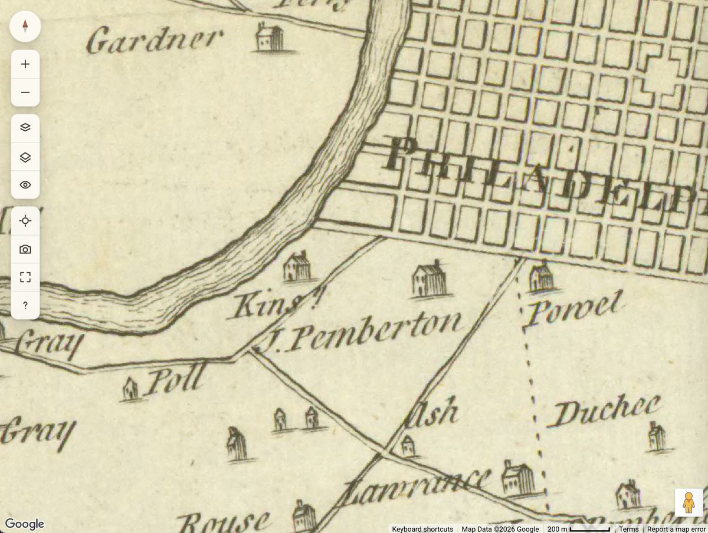
Nicholas Scull and George Heap, Philadelphia and Parts Adjacent, c. 1750.Kins[ey] and J. Pemberton below the corner of the grid; Gray at the ferry
across the river; Powel, Duché and Ash to the east; Lawrence and
Rouse to the south. Athenaeum of Philadelphia, via the GeoHistory Network viewer.
Both names are on the chain we were given, and here they are in the right place.
The Shippen account has the estate running Penns → Masters → Kinsey →
Pemberton. Scull and Heap put a Kinsey and a Pemberton within a few hundred yards of each
other, on the correct bank, at the correct corner of the city, in the correct decade.
John Kinsey, Chief Justice of Pennsylvania, died in 1750.
But adjacency is not succession, and this complicates the story rather than confirming it.
If Kinsey and Pemberton held neighboring seats at the same moment, then “came down
from Kinsey to Pemberton” describes a sale between two men who were already neighbors
— or the two labels belong to two different properties and the chain has been telescoped.
And I cannot date this map to a year. Scull and Heap went through several states and
reissues from 1750 into the 1770s, and the viewer only says “c. 1750.” Which
J. Pemberton this is — James (1723–1809), his brother John
(1727–1795), or their father’s generation — depends on which state of the plate this is, which has not been established. If it is James, he was twenty-seven in 1750, which argues for a later state.
One more name is worth staring at. Below Pemberton, to the south, Scull letters
Lawrence. Lawrence is also one of the names recited in Minute Book “K”
of the Board of Property for the Passyunk tract that Thomas Masters held — Matson, Cock,
Fox, Masters, Scobell, Lawrence. Those six names have floated free of any particular ground, with nothing to
attach them to. Here is a Lawrence, on the
right side of the river, next door to a Pemberton, around 1750.
That is a coincidence of names, not a proof, and Lawrence was not a rare name. But it is the first
point at which the Board of Property recital and the Shippen chain touch the same map.
1801–1808
Hills writes one word on this ground, and it is Pemberton
John Hills surveyed the country round Philadelphia in the summers of 1801, 2, 3, 4, 5, 6 and
7, and published the result on May 1, 1808. He letters the country seats with the names of the
people who held them. On the east bank of the Schuylkill, with a leader line running to the house
itself, he writes Pemberton.
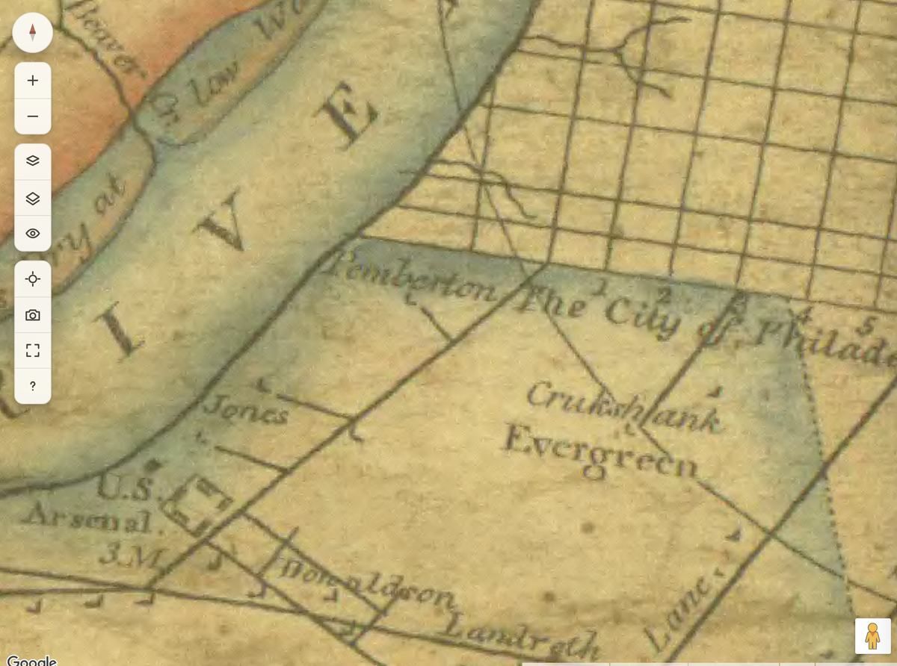
John Hills, A Plan of the City of Philadelphia and Environs, 1808.Pemberton, with its leader line to the house. Jones below it on the same bank;
Cruikshank and Evergreen across Grays Ferry Road to the east; the
U.S. Arsenal, 3 M[iles], to the south. Athenaeum of Philadelphia, Zebooker Collection, via
the GeoHistory Network interactive viewer.
What this closes. The Pembertons still held this ground when Hills walked it.
James Pemberton died in 1809. The United States bought in 1826. So if an Abbot ever
owned it at all, the whole Abbot interval is squeezed into seventeen years at the outside,
and probably less — and it begins at a death.
Be precise about the date, though. Hills published in 1808 but surveyed from 1801. The
honest reading is “Pemberton held it at some point between 1801 and 1807”, not
“in 1808.” James was alive throughout, so nothing is strained.
And what it does not close. This is a ten-mile-radius map. The name marks a seat, not a
boundary. It cannot tell us the extent of the holding, or whether a twenty-three-acre corner had
already been carved off and sold to somebody while the family kept the house.
The simpler explanation of T. Abbott.
It is natural to assume Abbott came before the Navy. But look at where his name actually
appears:
on the 1876 Hopkins plate, lettered on the severed strip beside Edward Maule.
That strip was sold at public auction on January 8, 1870. Maule bought fifteen lots —
3 to 16, and 18. He did not buy them all. Somebody bought the rest.
T. Abbott may simply be another purchaser at the 1870 Navy auction, standing next to Maule on
the atlas six years later for the plainest possible reason: they bought adjoining lots on the same
afternoon. That fits Hills 1808, it fits Stockton’s “possession of the Pemberton
family,” and it requires no unrecorded conveyance at all.
On this reading the 1893 writer, hearing the ground called the Abbot lot in his own day, pushed the
name back sixty years onto the original purchase — and I then took his sentence and pushed it
back another forty. Testable: look for Abbott among the 1870 patentees, in the same deed run
as Maule’s.
1886 · 1893 · 1931
The Pembertons, and the one man who ever wrote them down
I told you the chain to the Penns was corroborated by two sources reached independently. That was
wrong, and the way it is wrong matters more than the fact of it.
Lieutenant-Commander Charles H. Stockton wrote a history of the Asylum for
Proceedings in April 1886, and he opens by naming his source:
A very interesting historical sketch of its origin, and of the tract of land upon which it is
situated, by Medical Director Edward Shippen, U.S.N., is the only printed matter upon the
subject that I could find… By kind permission of Dr. Shippen, I have availed myself of
some of the material contained in his pamphlet.
Admiral Gleaves, writing in 1931, also quotes “Dr. Shippen” by name. The 1893
Inquirer feature is a newspaper piece on the Home written seven years after Stockton
published. The modern site history repeats the same sequence again. So the corroboration I claimed
is an illusion: four accounts, one ancestor — a pamphlet by a Navy surgeon, which I
have not read and cannot find online. Every statement about the Pembertons here is Shippen’s statement, repeated.
And Stockton does not mention Abbot at all. His sentence is:
In 1826 a suburban estate near Philadelphia, known as the Plantation, and
for many years a possession of the Pemberton family of that city, was purchased for
hospital purposes. The price paid was $17,000, and the mansion of the estate was used
for the hospital.
Bought from the Pembertons. No Abbot.
Nor does the 1893 column say Abbot owned it. Read its words again: “It was
called the Abbot lot… and then owned by a Quaker family named Pemberton.”
A name for the lot, not a link in the chain. The modern site history’s flat assertion that
“following the Revolution it passed to Thomas Abbot” looks like somebody’s
inference from that same phrase — and I repeated it to you as fact.
There is, at present, no source that documents a conveyance from any Pemberton to any Abbot.
There is a label on a lot, and a name on the 1876 Hopkins plate fifty years later.
Stockton also settles the acreage puzzle above:
The grounds were then, as now, about twenty-three acres in extent, the original tract having,
however, been modified in its boundary lines by sales and purchases, as well as by opening of
streets and rectification of boundary lines.
Sales and purchases. The Navy was both selling pieces off and buying pieces in
across sixty years. Twenty-three acres in 1826 and twenty-three in 1886 is not a contradiction and
not a coincidence — it is a moving boundary that happened to land near the same figure. No
subtraction between any two of these numbers means anything, and the 1857 severance was only one
of what Stockton calls “several sales of portions of the original tract.”
Three flags on the chain itself.
One — which Pemberton? Gleaves says James Pemberton (1723–1809), the
abolitionist, whose third wife Phoebe held the house against General Pattison’s
troopers while James was among the Quakers exiled to Virginia in 1777. The modern account says
William Pemberton bought it from Kinsey. Stockton and the Inquirer just say “the
Pemberton family.” The scrambled line on the 1893 page reading “between Phoebe
Pemberton and the…” is at least a real person, correctly placed.
Two — the 1735 date cannot be right as written. The Inquirer says Thomas
Masters obtained it from the Penns in 1735. Thomas Masters, mayor of Philadelphia
1707–09, died in 1723. Minute Book “K” puts Masters in Passyunk in
1703, which fits the man. Either the newspaper garbled the date, or 1735 is a later
conveyance out of the Masters estate by his heirs.
Three — a 500-acre estate and a 23-acre lot are not the same thing. Gleaves puts the
Pemberton plantation at 500 or 600 acres between South Street and Grays Ferry. The Navy
bought 23. So the Penns–Masters–Kinsey–Pemberton chain is the chain of a
parent estate, and somewhere between 1809 and 1826 a small piece of it was cut out and
sold. That cut is the missing conveyance, and it is very likely where the Abbot name comes from.
This lot inherits the Penns only if it sat inside the piece that was cut.
Which is a longer way of saying: the documented part of this house’s title stops at the
United States in 1826, and everything earlier is one Navy surgeon’s pamphlet, quoted four
times.
1735 · 1826 · 1893
The Abbot lot — and where T. Abbott came from
For a year the 1876 Hopkins atlas has lettered this parcel with two names, T. Abbott and
Edward Maule, and he has been an unexplained neighbor. One solution looks convincing and does not hold. What follows is the reasoning as it stood before the 1750 and
1808 maps came in; read it with the corrections marked in bold.
The Philadelphia Inquirer of April 30, 1893, page 22, ran a long history of the Naval
Home under the heading “The Home of Old Men-of-War’s Men.” Buried in the
second column:
There have been some changes in the lines and areas of the property since it was first purchased by
the Government. At that time Shippen street, now Bainbridge, was not opened westward of
Gray’s Ferry Road, or the road leading to Gray’s Ferry, as it was then called,
although intended to be so opened, and in the original deed it is styled “Shippen street
continued.”
It was called the Abbot lot, and included the site of a handsome country house built previous
to the Revolutionary war, and then owned by a Quaker family named Pemberton, the estate being
known as the Plantation. The estate came down from John Kinzey and Thomas Masters, the
latter obtaining it from the Penns in 1735.
Three things fall out of that paragraph.
One — the tract was called the Abbot lot. Note the verb. The column says the
ground “was called” that, and in the same breath says it was “owned by a Quaker
family named Pemberton.” It never says an Abbot owned anything. A name for the lot is not a link in the chain. T. Abbott on the 1876 plate is more likely a fellow
purchaser at the Navy’s 1870 auction than a predecessor of it.
Two — the severance is explained. When the Government bought, Bainbridge Street did
not exist west of Grays Ferry Road. It was a line on a plan, and the deed called it
“Shippen street continued.” When that projected street was finally cut through, it
sliced a strip off the north edge of the Asylum’s ground — and that is the
“plot of ground cut off from the Asylum by Shippen Street” that Congress ordered sold in
1857 and Edward Maule bought at the Philadelphia Exchange on January 8, 1870. The house stands on it.
Three — a chain is asserted back to the Penns.Thomas Masters obtained
the estate from the Penns in 1735; it passed to John Kinzey, then to the
Pemberton family, Quakers, who called it the Plantation.
Two cautions since added. Thomas Masters, mayor 1707–09, died in 1723, so 1735
cannot be right as written. And Scull & Heap draw Kinsey and Pemberton as neighbors
about 1750, which is not the same as one succeeding the other.
Then the Government, then the Navy’s auction, then the Maules, then the sheriff, then four
brick houses.
The same page gives the Home’s ground in 1893 as an irregular plot of about 23 acres,
bounded by Gray’s Ferry road, Bainbridge street and Sutherland avenue —
Sutherland being one of the street names the 1840 Passyunk surveyor letters two blocks west
of this door.
What this is, and is not. A newspaper feature of 1893, not a deed. It is a
journalist’s summary of three institutional histories, and the dates and names in it want
checking against the record before any of it is treated as proven. But it is specific, it is
checkable, and it explains two things that had no explanation at all this morning.
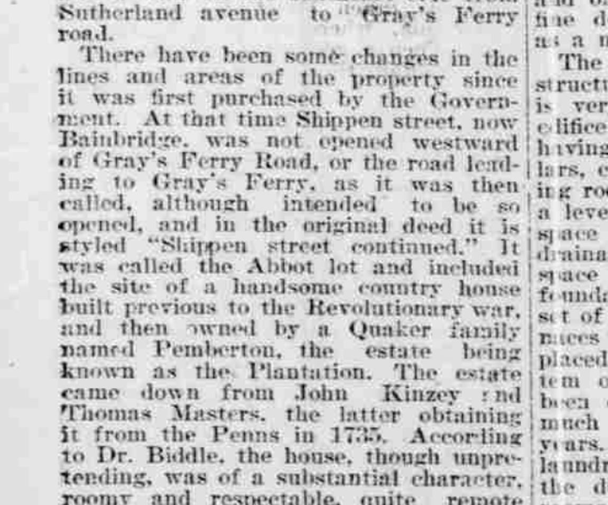
Philadelphia Inquirer, April 30, 1893, page 22. “It was called the
Abbot lot… the estate came down from John Kinzey and Thomas Masters, the latter obtaining it
from the Penns in 1735.”
Philadelphia Inquirer, via ProQuest Historical Newspapers / Free Library of Philadelphia
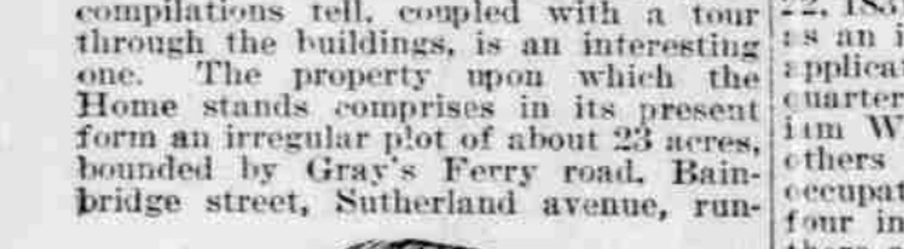
And the ground as it stood in 1893 — about 23 acres, bounded by Gray’s
Ferry road, Bainbridge street and Sutherland avenue.
Philadelphia Inquirer, via ProQuest / Free Library of Philadelphia
1832
Where the 271 feet comes from
Plan of the streets in the Township of Passyunk between the Schuylkill River and the
Moyamensing Township line, 1832 — Philadelphia Streets Department, 004-01 HP.
The earliest drawing we have of this ground, and it contains the two numbers this house is
still built to.
Written across the block on the south side of Cedar Street: 458½ Feet.
Written down both its sides, from Cedar to Shippen: 271.
The sheriff’s notice of November 17, 1884 reads “containing in front 161 feet,
and in depth 271 feet to Bainbridge street.” That depth was set by a surveyor in
1832 — fifty-two years before the sheriff measured it, thirty-eight before the United
States sold it, fifty-seven before anyone laid a brick on it. The back wall of this house stands
where it stands because of a line drawn in Passyunk Township when Andrew Jackson was president.
And the 458½ agrees with the 458.8 on the 1840 plan for the same block. Two surveys,
eight years apart, four inches apart.
The rest of what it shows.Cedar is lettered plainly — South Street’s
old name. Below it Shippen, with BAINBRIDGE added later in pencil by a different
hand, somebody keeping a working document current decades on. Below that, Fitzwalter.
Across the top, in spaced capitals, CITY OF [Philadelphia] — because the city stopped
at Cedar, and this ground was township. The U.S. Naval Asylum is drawn as an actual
building, cruciform, in open grounds south of Shippen; the 1840 plan will call the same
institution the Marine Asylum. And out at the western edge, near the river:
“Old glass house.”
One thing not settled. This plan letters the streets near the block
Water and Bank; the 1840 plan letters them Burden and Willow. Those
may be the same lines renamed within eight years, or the west-to-east matching may be off by one
street. The dimensions leave no doubt the block is the same block — 458½
against 458.8 — but I would want a document before asserting that Bank became Burden.
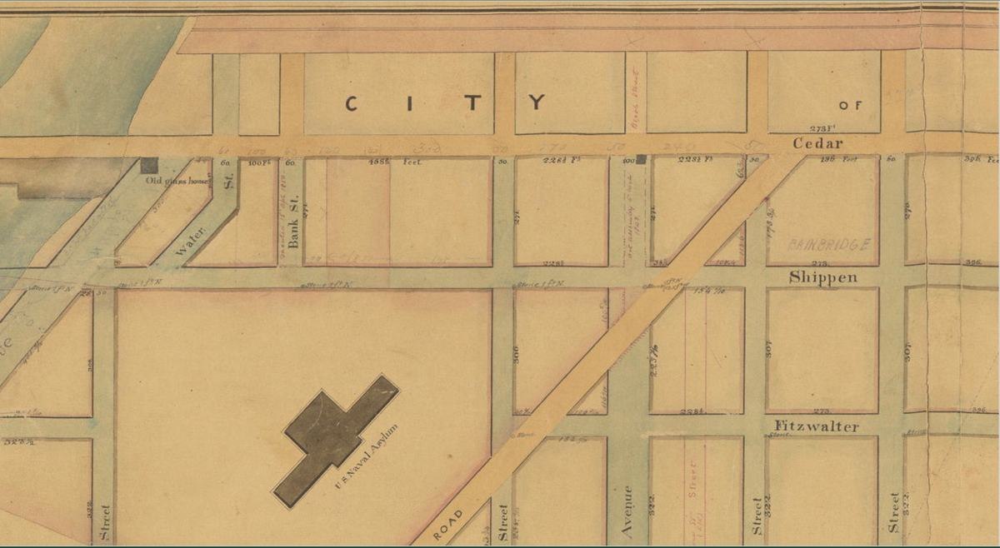
Plan of the streets in the Township of Passyunk, 1832. CITY OF Philadelphia
above; Cedar, Shippen (later pencilled BAINBRIDGE) and Fitzwalter below; the
U.S. Naval Asylum drawn in plan, and the “Old glass house” by the river.
Philadelphia Streets Department, Survey and Designs Bureau, via the GeoHistory Network
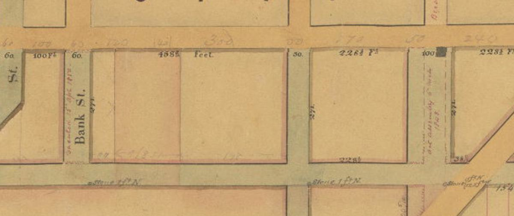
The two numbers.458½ Feet across; 271 down each side, Cedar
to Shippen. Both still governed this lot when the sheriff advertised it in 1884.
Philadelphia Streets Department, via the GeoHistory Network
1838–1863
Before the house: what stood nearby
The Library Company holds views of this ground from long before your row existed —
the earliest dated 1838, half a century before your first brick was laid.
Almost all of them are the U.S. Naval Asylum, two blocks south, on ground that is now
Naval Square. Biddle Hall was built 1827–33 to designs by
William Strickland at 2420 Gray’s Ferry Avenue. J. C. Wild drew it and J. T. Bowen
lithographed it for Views of Philadelphia and Its Vicinity in 1838; the stones were
reissued with hand coloring in 1848. One view shows a sailboat on the Schuylkill and the
Blockley Almshouse across the water; a lettersheet of about 1840 catches street traffic outside
— a horse-drawn omnibus, a wagon, a man on horseback. A stereograph of about 1876 shows
Laning Hall, added 1864–68 by John McArthur Jr.
From 1839 to 1845 the Asylum also housed the first United States Naval School,
under Commodore James Biddle — before the Academy moved to Annapolis.
And one photograph that stops you. A stereograph of about 1863:
South Street Hospital, 24th and South Streets — a Civil War hospital, interior of
a ward, convalescing soldiers seated in opposite rows along the walls. It was known as
“stump hospital” for the number of amputations performed there. Two blocks
from your door, a year after Smedley drew your lot as open lumber-yard ground, and thirty years
before anyone built on it.
Before the numbers: Willow Street and Burden Street
Plan exhibiting the curb heights, water courses and culverts in the Northern Section of
Passyunk, 1840 — Seventeenth Street to the Schuylkill, beginning at South Street.
Philadelphia Streets Department, identifier 033-01 HP. It is the earliest drawing of this
ground we have, by twenty-two years, and it hands over two things.
First, the institution. Across the great walled block to the south-west, in spaced
capitals: MARINE ASYLUM — the Naval Asylum under its earlier name, its stone wall
dimensioned at 48.43, 40.14 and 39.81 feet, with a center line drawn through the grounds. Seventeen
years before Congress ordered the severed strip sold, and thirty before Edward Maule bought it.
Second, and more useful: these streets had names. Reading west to east along the south side
of South Street, the surveyor letters them
Alexander Street · Sutherland Avenue · Burden Street · Willow Street
· Grover Avenue · Ashton Street, then Grays Ferry Road, and then the old
Schuylkill names — Schuylkill Front, Second and Third, which are Twenty-second,
Twenty-first and Twentieth.
And he dimensioned the gaps between them, which is what lets us place the house:
From
To
Distance
Sutherland Avenue
Burden Street
204 ft
Burden Street
Willow Street
458.8 ft
Willow Street
Grover Avenue
228½ ft
Grover Avenue
Ashton Street
228½ ft
458.8 feet is this block. Add up what we already know of it: Henry’s corner
101 feet, Edward’s 161, Bambrey at 24 feet wide, and the run of houses
from Bambrey west to the corner — about 456 feet. It matches to within a couple of feet.
Willow Street is now South Twenty-fifth. Burden Street is now South Twenty-sixth.
I would call that a strong reading rather than a proven identification — it rests on the
arithmetic, not on a document that says so. But it is the same method that tied the 1884
sheriff’s notice to the 1888 gas ordinance, and it lands as cleanly.
Which means the search terms change again. First it was the ward —
everything before the split is filed under the Twenty-sixth, not the Thirtieth. Now it is
the street. Anything before about 1858 — deeds, directories, tax records, newspaper notices
— calls these streets Willow and Burden. Anyone looking for “Twenty-fifth Street” in the years when the Navy still held this ground will return nothing, and the
absence will look like evidence.
And the blocks are drawn empty. Surveyed, dimensioned, tinted — and nothing standing on any
of them.
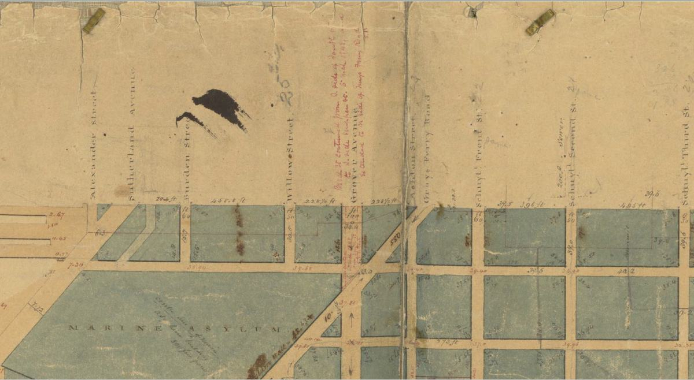
Plan of the Northern Section of Passyunk, 1840. MARINE ASYLUM across the walled
block; the numbered Schuylkill streets to the east; the grid drawn, dimensioned and empty.
Philadelphia Streets Department, Survey and Designs Bureau, via the GeoHistory Network
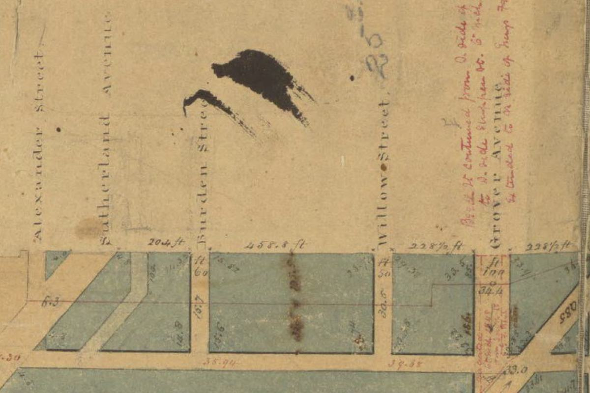
The names, and the measurement. Alexander, Sutherland, Burden, Willow, Grover
— and 458.8 ft written between Burden and Willow. That is the 2500 block of South Street,
eighteen years before it had a number.
Philadelphia Streets Department, via the GeoHistory Network
1858–1860
Hexamer & Locher stop at South Street
The great fire-insurance atlas covers this vicinity as part of the 7th Ward, and the
plate runs out exactly at South Street. Your side is off the bottom edge.
And the edge is literal. The engraved copyright line — “…by Ernest
Hexamer & Wm Locher in the Clerk’s Office of the District Court of the
Eastern District of Penna” — is printed along the bottom margin of
the sheet, and that margin lands on South Street. The notice about the Clerk’s
Office runs across your front door. This is not thin coverage; it is the trimmed edge of the
printed plate.
Hexamer & Locher, Plate 42B, 1858. “SOUTH” runs along the very bottom
margin. Everything below it is blank.
Free Library of Philadelphia, via PhillyHistory.org↓ Save image · permission to publish
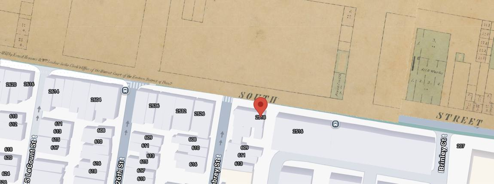
The edge, literally. The engraved copyright line — “…by Ernest Hexamer & Wm Locher in the Clerk’s Office of the District Court of the Eastern District of Penna” — runs along the bottom margin of the plate, and the margin lands on South Street. The red pin marked 2518 sits below it, on bare modern tiles, outside the paper.Hexamer & Locher 1858–60, georeferenced on GeoHistory
1862
Open ground
Smedley’s atlas shows one large undeveloped parcel with a lumber yard on part of it, frontage 618′9½″ on South Street and 750′9½″ on Shippen. The street names are a time capsule: Shippen (now Bainbridge), Meredith (now Naudain), Water “now Chippewa” and Carbon and Bank all caught mid-rename. The U.S. Naval Asylum sits to the south, and still owned the ground. Note, September 2, 2026. This entry was briefly “corrected” to say Smedley does not cover this ground. That correction was wrong and has been withdrawn. It rested on a screenshot framed north of South Street and on a line in the audit reading “Smedley, 1862 — Center City — stops at South Street.” A capture of the plate itself settles it: SOUTH and SHIPPEN both lettered, the parcel between them lettered Lumber Yard and dimensioned. Smedley 1862 is the earliest plate we have that draws this ground — earlier than Hopkins 1876, and twenty-six years before Baist. The street names are a time capsule: Shippen (now
Bainbridge), Meredith (now Naudain), Water “now Chippewa” caught
mid-rename. The U.S. Naval Asylum sits to the south.
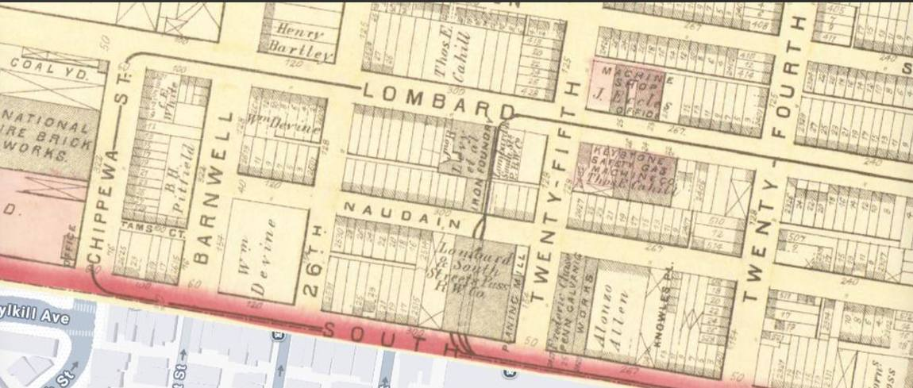
Smedley, 1862, overlaid on the modern street grid. Coverage ends along South Street.Samuel L. Smedley, via GeoHistory
1855 · 1858 · 1862 · 1875 · 1885 · 1922
Why no mapmaker drew this ground for sixty years
Every nineteenth-century atlas volume that reaches South Street stops at it. Not one of them
draws the south side. The list is now six deep:
Atlas
What it does at South Street
Barnes, 1855
Covers the ground, but as bare rectangles
— the grid surveyed and printed across open field. Calls the two streets
Cedar (now South) and Shippen (now Bainbridge).
Hexamer & Locher, 1858–60
Plate 42, 7th Ward.
The engraved copyright line sits in the bottom margin, and the margin falls on South Street.
Smedley, 1862
Coverage ends along South Street.
Hopkins, 1875
The same.
Bromley, 1885
Plate W runs Spruce, Pine, Lombard, Naudain,
SOUTH — then a blank band where the sheet ends.
Bromley, 1922
Plate 3, Wards 7 & 8. Sixty-three years
after Hexamer & Locher, the ruled neat line still falls on South Street.
The reason is administrative, not cartographic. Nineteenth-century atlas volumes were
compiled, bound and sold by ward — and South Street was the southern boundary
of the Seventh Ward, the ward W. E. B. Du Bois would survey in 1899. This house is in
the Thirtieth. It sits about forty feet on the wrong side of a publishing decision made
before anyone had put a brick on the ground.
The confirmation comes from a document with nothing to do with atlases. When Ernest Hexamer
surveyed the horsecar stable across the road in 1882, he recorded its location as
“situated between Lombard and South Streets, west of 25th Street,
Seventh Ward, Philadelphia” — a fire-insurance surveyor answering the
question forty years before it was asked.
So the blank band is not a gap in the record. It is the record being organized around something
other than this house. The ground does not appear on any atlas until somebody makes one of
South Philadelphia — Baist, 1888, a year before the houses went up. And the
first sheet to put both sides of the street together is Bromley 1910, Plate 23, lettered
Part of Wards 7, 27, 30, 36 & 40.
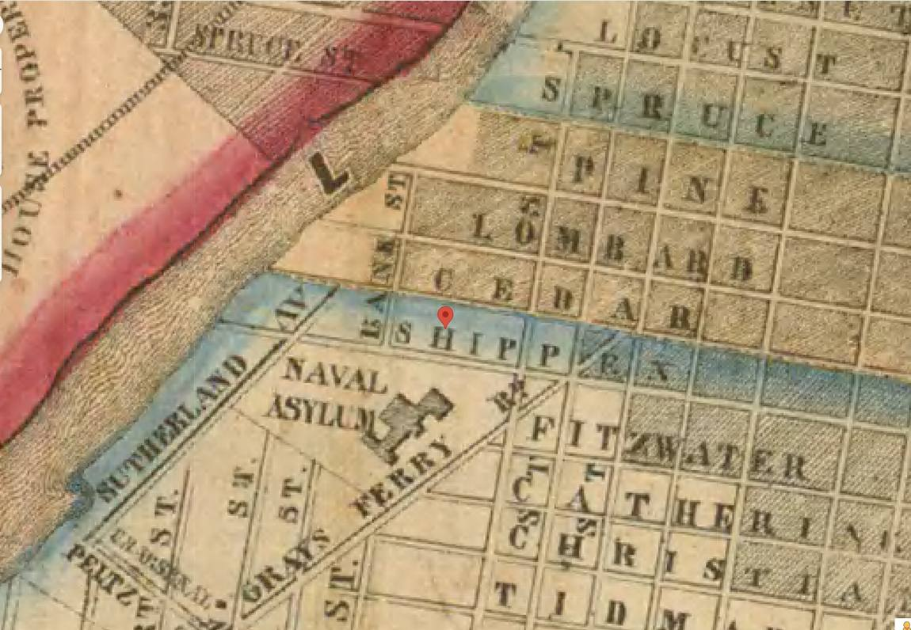
Barnes, 1855. The pin sits on a street the map calls CEDAR, with SHIPPEN next south — the old names for South and Bainbridge. Note what is drawn: empty rectangles. The grid was surveyed, numbered and printed across open field about thirty-five years before anyone built on it.R. L. Barnes, via the Greater Philadelphia GeoHistory Network
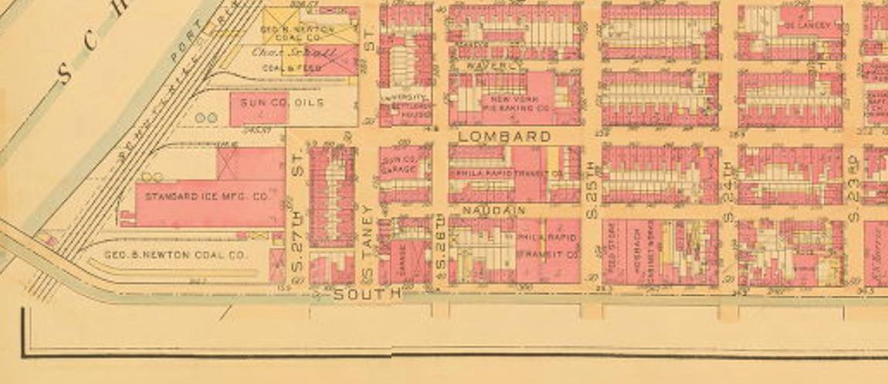
Bromley 1922, Plate 3 — Wards 7 & 8. The ruled neat line at the bottom falls on South Street and the paper stops. Sixty-three years after Hexamer & Locher drew the same edge. What it does give is the north side in 1922: Phila. Rapid Transit Co. filling two blocks, the New York Pie Baking Co., and the University Settlement House at Twenty-sixth and Lombard.G. W. & W. S. Bromley, via GeoHistory / Athenaeum of Philadelphia
March 3, 1857 · January 8, 1870 · May 10, 1870
The ground belonged to the United States Navy
This is where the ground comes from, and it is not what I expected. It was not farmland waiting
for a buyer. It was federal property, and it was sold at auction by order of Congress.
How the Government came by it in the first place. The same 1893 article gives
the acquisition, and the figures are specific.
The tract was the Abbot lot — the Pemberton family’s Plantation, with a
country house on it from before the Revolution. The Pembertons were Quakers; the article notes in
passing that the Pemberton brothers were among the Friends arrested and sent to Virginia in
1777. A scrambled line elsewhere on the page reads “between Phoebe Pemberton and
the…”, which may name the party who sold, though the column is too jumbled to be sure.
The Government bought it in 1826 for $17,000. The money came from the naval pension and
naval hospital funds — not a general appropriation, but a fund built out of twenty cents
a month deducted from every seaman’s pay since 1799. Gleaves, writing in 1931, says
“over $16,000” for about twenty-five acres; the 1893 column says $17,000. The
$276,000 figure is the running total by 1839 for land, building, improvements
and the wharves on the Schuylkill — not a second purchase. The cornerstone of William Strickland’s building was laid in
1827 — Niles’ Register reported the ceremony — and then, in the
paper’s own words:
… there was much delay in the progress of the work of construction,
being altogether suspended for a time, but eventually it was under roof in 1832–33,
and occupied near the close of the latter year, at a cost for the land of $17,000 and for
the building of $195,600 — sums subsequently increased by improvements to a total in
1839 of $276,000. Daniel Kleiss was the first to become a beneficiary, or pensioner
as they were then termed.
Why the building cost eleven times the land. The two figures are not comparable
quantities. $17,000 bought twenty-three acres of open township ground two miles outside
the built city — about $739 an acre, or 1.7 cents a square foot.
$195,600 built a 385-foot Greek Revival building of Pennsylvania marble on a
granite basement, with masonry-vaulted ceilings throughout, a copper roof, four hundred
individual rooms, and some of the earliest structural cast iron in the country.
And the building itself overran badly. Strickland estimated $118,700. It finished
at $249,185.60 — more than double. He explained why in April 1829: they changed
“from rough-cut to finished marble and granite for the rear of the building.” The
money also changed hands differently. Land and early construction came out of the sailors’
Hospital Fund; by 1832 Congress was appropriating directly, and Stockton reckoned about
four-ninths of the building came from the Treasury.
So the surprising number is not the building. It is the land.
This lot is almost exactly one acre. 161 feet by 271 is
43,631 square feet; an acre is 43,560. So the 1826 price per acre can be applied straight
to this ground with no arithmetic to argue about.
The United States paid roughly $740 for the ground under this house.
Fifty-eight years later a sheriff sold the same acre for $26,762.50 — about
thirty-six times the 1826 rate per square foot. That figure was the debt to be satisfied
and it covered a working lumber yard, not bare earth, so it is not a clean land comparison. But
the direction is not in doubt: what changed in value here was never the building. It was the
dirt, once the city arrived on top of it.
Seventeen thousand dollars for the ground. Forty-three years later the United States sold a
severed strip of that same purchase to Edward Maule for $13,200, and fifteen years after
that a sheriff sold 161 feet of it for $26,762.50.
The grantor is very probably a Pemberton, not an Abbot. I first wrote here that the
Plantation passed to Thomas Abbot after the Revolution and that it was Abbot’s ground the Navy bought. Neither claim survives contact with the sources. Stockton’s 1886 history says the Navy bought an
estate “for many years a possession of the Pemberton family” and never mentions
Abbot; Hills letters this ground Pemberton in 1801–07; and the 1893 column says only
that the tract “was called” the Abbot lot. See the 1750 and 1808 articles
above. The purchase was made in 1826 — not 1832 — by Surgeon Thomas Harris, acting
on the order of the Secretary of the Navy, who had been directed to work with Strickland in
choosing a site. By May 26, 1826 the hospital fund was large enough to pay for it. The
Plantation’s own country house then served as the naval hospital from 1826 to 1833,
while the marble building went up around it.
An acreage argument that does not hold. It is tempting to reason that the Abbot lot was
about 23 acres, that Naval Square is 20.7 acres today, and that the missing three acres must be
this strip. The arithmetic will not carry it.The same 1893 article says the Home’s ground as it stood in 1893
was also “about 23 acres,” bounded by Grays Ferry road, Bainbridge street and
Sutherland avenue — that is, still 23 acres after Shippen Street had already taken
the strip away. Gleaves says “about twenty-five.” The figures are all soft, rounded,
and mutually inconsistent, and no subtraction between them means anything.
The inclusion argument does not need the acreage. It rests on the statute: the Act of
1857 authorizes sale of “the plot of ground cut off from the Asylum by Shippen
Street.” Congress is saying, in its own words, that this ground was Asylum ground until
the street severed it. And the lots on that plot are drawn 271 feet deep — the full
block, South Street back to Shippen. So the severed strip is not near this house. It is
this house’s parcel, front to back.
And a chain that appears to run back to the Penns:the Penns → Thomas Masters
→ John Kinsey → the Pembertons → the United States, 1826. Masters was mayor of
Philadelphia in 1707–09 and bought heavily in Passyunk; Kinsey was Chief Justice of
Pennsylvania. But see the 1886·1893·1931 article above before trusting it.
Two sources look as though they corroborate this. They are not independent — they
all descend from one pamphlet — and no source puts Thomas Abbot in the chain at all.
Still unknown: the book and page of the 1826 deed, and the grantor’s name on it.
Those sit in Navy Department records and in the Philadelphia deed books, not online.
… the sixth section of an Act of Congress passed the third day of March 1857,
making appropriations for the naval service for the year ending the thirtieth day of June 1858,
enacted that the Secretary of the Navy is hereby authorized to sell at public auction the
wharf at the Naval Asylum at Philadelphia, and also the plot of ground cut off from the Asylum
by Shippen Street, if in his opinion a fair price can be obtained — the proceeds to
the credit of the naval hospital fund.
Shippen Street is Bainbridge. We established that from the Barnes map of 1855, which
letters the two streets Cedar and Shippen. So the Naval Asylum’s ground
once ran north of Bainbridge; the cutting through of Shippen Street severed a strip on the far
side; and in 1857 Congress told the Navy to sell the orphaned piece.
June 10, 1867 — Thomas, city surveyor and regulator of the First Ward, lays the strip
out as a numbered plan of lots.
… will be exposed to public sale, after one previous notice and advertisement, on the
eighth day of January AD 1870, at the Philadelphia Exchange … by M. Thomas &
Son, auctioneers … when Edward Maule, of the said city of Philadelphia, lumber
merchant, bought the same, being lots numbered 3, 4, 5, 6, 7, 8, 9, 10, 11, 12, 13, 14,
15, 16 and 18 on a certain plan of lots surveyed … on the tenth day of June AD 1867
— for the price or sum of thirteen thousand two hundred dollars.
Not a slow family assembly. One afternoon at the Exchange, fifteen lots, $13,200. The
patent was then signed and sealed under the seal of the United States at Washington on
May 10, 1870, granting the ground “unto the said Edward Maule, his heirs and
assigns,” and recorded in the Philadelphia deed books that spring.
Be careful about which parcel this is.
The patent text actually read describes a lot beginning 296 feet west of Twenty-fifth
Street, 123 feet in front and 271 feet deep — the block west of
Bambrey, not this house’s 161 feet at 101 to 262 feet west. Edward bought fifteen lots, so this ground is very likely among them, but no patent describing the 161 feet has yet been read. Until one is, the Navy origin of this particular parcel is a strong inference and not
a proven fact.
FamilySearch film #008089185, item 3, Deeds: Philadelphia, Deed Books May 1870–June
1870, images 92 and 93.
The Act of Congress, read from the statute book rather than from a recital.
Until now the 1857 Act was known only from the way the 1870 patent describes it. Here is the
section itself — Thirty-Fourth Congress, Session III, Chapter 111, at
11 Stat. 247, section 6:
“And be it further enacted, That the Secretary of the Navy is
hereby authorized to sell at public auction the wharf at the Naval Asylum at Philadelphia, and
also the plat of ground cut off from the asylum by Shippen street, if in his opinion a
fair price can be obtained for it, the proceeds to be carried to the credit of the Naval
Hospital fund; from which fund they were purchased.”
Two things worth having in Congress’s own words. The ground this house stands on is
described by the statute as the plat cut off from the asylum by Shippen street
— the severance is the definition of the parcel, not an inference from a map. And
“from which fund they were purchased” states outright that the Navy bought
this ground with the Naval Hospital fund, which is sailors’ money: twenty cents a month
deducted from every seaman’s pay since 1799. That no longer rests on a Navy
surgeon’s pamphlet.
The same Act, four sections earlier, orders five screw sloops of war built for a million
dollars. Selling this strip was a housekeeping clause in a naval appropriation.
Act of March 3, 1857, ch. 111, § 6 — United States Statutes at Large,
vol. 11, p. 247. Read in the full text of volume 11 (1855–1859) at the Internet Archive,
item sim_united-states-united-states-statutes-at-large_1855-1859_11. Free, no
account.
What the Navy was spending here while the marble went up. A report to the House
of Representatives of January 18, 1830 sets out the hospital fund’s disbursements
“for the construction of the Navy asylum, near Philadelphia” during 1829 alone:
$10,000 to William Strickland in March, $10,000 in June, $25,000 in August, $17,000 in
September — and $1,000 to Doctor Harris, salary as superintendent, the same
Surgeon Thomas Harris who had bought the ground three years earlier. Strickland reported the
building at $198,000 spent to that date, and asked to close down the marble masons for
the winter because the quarries could not supply blocks in season.
The report says the sites were bought under the Act establishing navy hospitals — at
Chelsea, Brooklyn, “on the Schuylkill, near Philadelphia,” and near Norfolk. It does
not name who sold any of them.
American State Papers: Naval Affairs, class VI, vol. 3, No. 404 — Navy Hospital
Fund, Navy Hospital near Norfolk, and Naval Asylum at Philadelphia; communicated to the House
January 18, 1830, pp. 479–82. Free full text at the Internet Archive, item
americanstatepap_d63unit.
II · The lumber yard
Israel, Edward and Henry Maule — and the failure that put this ground on the market
Pine Street Meeting, c. 1820–1860
Caleb Maule takes in his dead brother’s children
The William Wade Hinshaw index to Pennsylvania Quaker meeting records is a fourteen-volume
card transcription of the Friends’ registers, and all fourteen volumes are free and
full-text searchable on the Internet Archive. The Maules are in volume eight, under
Philadelphia Monthly Meeting, Southern District — the meeting that sat at the
Pine Street Meeting House.
Who was whose son — settled by the Meeting register
The city directories put Edward, Israel and Henry Maule at
Caleb Maule’s address and appear to make all three his sons. They were not.
The Meeting records make Caleb the father of Edward and Henry, and Israel a nephew. The transfer certificate lists the household moving into Pine Street as
“Caleb, wife Lavinia & children Elisha P. & Henry, minors… (also
their niece & nephew, Lavinia Maule & Israel Maule).”
And Edward was not Caleb’s son either.Israel Maule the elder died on November 25, 1828 leaving young
children, and his brother Caleb took them in. Edward, Lavinia and Israel junior were the
orphans; Elisha P. and Henry were Caleb’s own. A grown man living at his aunt’s
address in 1857 is not evidence of paternity — it is evidence that she raised him.
The full working, with the census and the register agreeing to the year, is in
The Maules of Twenty-fifth and South.
Two Maule men married two Price sisters
“Caleb, of Philadelphia, son of Daniel & Elizabeth
(both dec.), late of Delaware Co., Pa., m. Lavinia Price at Pine St. Mtg.”
“Lavinia C., of Philadelphia, dt. of Elisha (dec.) & Elizabeth of Delaware
Co., Pa., m. Caleb Maule at Pine St. Mtg.”
“Israel, of Philadelphia, son of Daniel & Hannah of Delaware Co., m.
Ann Price at Pine St. Mtg.”
“Ann, of Philadelphia, dt. of Elisha (dec.) & Elizabeth of Chester Co., m.
Israel Maule at Pine St. Mtg.”
Lavinia and Ann Price were sisters — both daughters of Elisha Price, deceased, and
Elizabeth. The one record says Delaware County and the other Chester County, which looks like a
discrepancy and is not: Delaware County was carved out of Chester County in 1789, so
the same farm could honestly be described either way depending on which clerk wrote it down and when.
What that marriage pattern explains.
Two Maule men — Caleb and Israel — married two Price sisters, at the same meeting
house. Their children were therefore double relations: cousins on the Maule side and cousins on
the Price side. It is exactly the kind of doubled kinship that produces a firm styled
“Maule, Brother & Co.” in which the men are not in fact all brothers, and it is why every attempt to sort the Maules into a simple sibling line fails.
They were not a line. They were a knot.
Caleb Maule was buried on May 31, 1844, aged fifty-four, so born about 1790. Thirteen
years later the 1857 directory still shows his grown son Edward — a lumber merchant by then
— living with his widow Lavinia at 301 Pine Street.
Read carefully, the second burial — “Caroline L., buried October 26, 1844, aged 11 months” — reads as Caleb’s infant daughter, and wrote a line
about Lavinia burying a husband and a baby in one year. She is not Caleb’s daughter.
Working back from the age gives a birth around November 1843, and the Northern District register
has Lavinia Caroline Maule, daughter of Elisha P., born November 9, 1843. The card index
simply shortened her name. She was Caleb’s granddaughter, and it was Elisha P. and
Margaret who buried her. A neater story, told an hour too early.
The Meeting put Edward and Henry out
“Edward dis for mou.” ·
“Henry dis for mou.”
Dis for mou is the standard abbreviation: disowned for marriage out of unity —
that is, for marrying someone who was not a Friend. The two men put out are Edward and Henry — the two who ran the yard — and they are not brothers, nor both Caleb’s sons. Henry was Caleb’s; Edward was Israel the elder’s, raised in Caleb’s house after his father died in 1828. What they shared was the meeting their parents had married in, and both were put out of it. They kept the plain dating in
their death notices for another forty years, and Israel Junior is not among those put out; but the
two men who ran the lumber yard on your ground had been disowned by their own meeting.
And a direct hit on the 1879 partition
“Elizabeth Coleman, dt. of Israel & Martha,
b. 8-16-1842.”
“Israel, w. Martha & dt. Elizabeth Coleman Maule, an infant,
[certificate] to Philadelphia MM, Western District.”
“Martha, wife of Israel, rec’d on certificate from Philadelphia MM, Western
District.”
The February 1879 partition names Israel’s heirs as Francis I., S. G. Morton, and
Elizabeth C. Lewis, wife of Edmund Lewis. Here is Elizabeth Coleman Maule being born on
August 16, 1842 to Israel and Martha. Same woman, thirty-seven years earlier, in a register that
has nothing to do with land. Two record systems that never touched each other, agreeing.
E. Randolph Maule, finally placed
“William, w. Mary R. & minor ch. Julianna R.,
Edward R., Hannah, Elizabeth R. & Mary R., rec’d on certificate from Philadelphia MM,
Northern District.”
E. Randolph Maule — the man with the rival lumber yard at Twenty-second and Walnut, who drifts through the Maule records — is Edward R., son of William and Mary R.
Maule. And the Inquirer of October 30, 1884 carries the death of
“Mary K. Maule… widow of William Maule, of Philadelphia” — his
mother. He is a cousin in the same trade, not a stray, and the earlier decision to keep him out
of your chain of title was right.
What this does to “Lavinia Maule, a sister.”
The 1883 failure report says $5,600 in judgments was held by “Lavinia Maule, a
sister.” The meeting records give three candidates and rule the first almost out:
• Lavinia C. (Price) Maule, Caleb’s widow — about ninety by 1883.
Ruled out. • Lavinia Caroline Maule, b. November 9, 1843 — ruled out. The
Northern District register gives her birth and the Southern District burial register her death:
October 26, 1844, aged eleven months. She did not live to be anyone’s creditor.
• Lavinia Maule, born June 13, 1817 — the
“niece” who came into Caleb’s household when her father died. The 1880 census
has Edward Maule, 56, living with his unmarried sister Lavinia, 63 — and 1817 makes her
exactly 63.
So the newspaper was right. It is tempting to read “sister” as a reporter’s error, on the assumption that Edward was Caleb’s son, which would have made them cousins. Edward was Israel’s son. Lavinia was
his sister. A census taker, a Quaker clerk and a business reporter, none of whom ever met, all
describing the same woman.
Elisha P.’s family, recorded in full, because it is the human cost of the century.
Elisha P. Maule, son of Caleb and Lavinia C., married Margaret S. Wendell, daughter of
Isaac and Anna A. Wendell, at the meeting. Their children:
Lavinia Caroline, b. Nov 9, 1843 ·
Isaac Wendell, b. Jun 13, 1845, buried Jan 23, 1847, aged 1 year 7 months ·
Howard Elisha, b. Jul 17, 1847, buried Sep 4, 1848, aged 13 months ·
Cornelia Broom, b. May 21, 1849 ·
Emily Price, b. Dec 6, 1850.
Five children, two buried before they were two. The registers give it in the same hand and
the same ink as the transfers of membership.
Volume seven — the generation before, with birth dates
Volume 8 is Philadelphia Southern District. Volume 7 is Philadelphia
Northern District (#224) — the meeting the whole family transferred
out of, and the one that holds their births and deaths rather than their marriages.
It had not been read. It should have been.
Person
Register entry
Israel Maule the elder
Died November 25, 1828, aged 50 — born about 1778
Ann, his wife
Died September 22, 1811, aged 30 — born about 1781
Their children
Mary Garrigues b. May 2, 1802 · William b. September 26, 1804 ·
Hannah b. April 19, 1806 · a daughter b. July 24, 1811 ·
Elizabeth b. September 22, 1814, died June 26, 1816 aged 20 months ·
Lavinia b. June 13, 1817 · Sarah Ann
Caleb & Lavinia’s children
an infant Elisha, died November 3, 1814 aged one week ·
Elisha Price b. November 5, 1820 (named for the brother who died) ·
Elizabeth b. May 17, 1825 · Henry b. April 14, 1828
William, son of Israel & Ann
May 6, 1826 — married Mary Randolph at the Northern District Meeting
House
William & Mary R.
Hannah b. April 22, 1833 · Elizabeth R. b. November 27, 1834 ·
with Julianna R., Edward R. and Mary R., transferred to the Southern District
November 26, 1839
Two of those lines are worth stopping on.
Henry Maule was born on April 14, 1828. One of the three men who ran the lumber yard on your
ground now has a birthday. Caleb died when Henry was sixteen.
“William, son of Israel & Ann, married Mary Randolph.” That is where the
name comes from. E. Randolph Maule — the rival lumberman at Twenty-second and Walnut who shadows the Maule record — was Edward Randolph Maule, and he carried his
mother’s maiden name. He was a grandson of Israel Maule the elder, which makes
him a cousin of the men at 2500 South Street, in the same trade, in the same city, for thirty
years. Not a stray. A relative and a competitor.
And the honest limit of what this source can give.
The Hinshaw set is fourteen volumes, one meeting each: Concord, Exeter, Frankford, Goshen,
Gwynedd, Kennett, Philadelphia Northern, Philadelphia Southern, London Grove,
Stroudsburg, Chester, Darby, Millville-Muncy, New Garden.
There is no Philadelphia Western District volume — and the Southern District
cards record Israel, his wife Martha and the infant Elizabeth Coleman going to exactly that
meeting.The household we most want to follow walked off the edge of this source.
Two further limits. These are cards, not minutes — Hinshaw’s 1930s
abstracts, one line each, of entries that in the original run to paragraphs. And the scans are
poor: the date column and the name column drift apart, so no date here has been attached to a
name unless the two share a line.
What would go further: the Western District minutes and registers themselves, at
Swarthmore’s Friends Historical Library (which holds the original Hinshaw cards) and
Haverford. That is where Israel’s death in April 1878 would be recorded — and
with it, most likely, the burial place of the man whose sudden end started the collapse that put
your ground under the sheriff’s hammer.
The William Wade Hinshaw index to (Pennsylvania) Quaker meeting records, volumes 7 and 8 —
Philadelphia Monthly Meeting, Southern and Northern Districts — with all fourteen
volumes checked for the surname. Free full text at the Internet Archive, identifiers
williamwadehinsh01hins to williamwadehinsh14hins. Read August 31, 2026.
The OCR of these card scans is poor and the date column runs separately from the name column, so
no date above has been attached to a name unless the two appear on the same line.
A city directory does one thing supremely well: it gives a firm’s address every single
year. Run ten of them in sequence and a business stops being a fact and becomes a
movement. Here is McElroy’s Philadelphia City Directory, read straight
through from 1857 to 1867.
Year
Firm as printed
Yard address
1857
Maule & Brother
Seventeenth below Spruce
1859
MAULE & BROTHER (Edward, Israel)
Seventeenth & Pine
1860
MAULE & BROTHER (Edward & Israel Maule)
South street, west of Gray’s Ferry road
1861
Maule & Brother
South & Twenty-fifth
1862
Maule, Brother & Co.
(Israel Maule, Edward Maule & Henry Maule)
Twenty-fifth & South
1863
Maule Brother & Co.
2500 South — first year with a street number
1864
Maule, Brother & Co. (Israel, Edward & Henry)
2500 South
1865
MAULE, BROTHER & CO. (Israel, Edward & Henry Maule)
2500 South
1866
MAULE, BROTHER & CO. (Israel, Edward & Henry Maule)
2500 South
1867
MAULE, BROTHER & CO. (Israel, Edward & Henry Maule)
2500 South
They came to your block in the 1860 directory, and they were at the corner
of Twenty-fifth and South by 1861. Before that they were a Center City yard at Seventeenth and
Pine. That is ten years before the United States patented this ground away in May 1870, and
eleven before Caleb Jones conveyed to them in 1871. The Maules did not buy this ground and then
build a business on it. They worked it for a decade first, and bought it out from under
themselves when the Navy finally sold.
Two things the directories settle that nothing else had.
1. Henry joins the firm in 1862, and not before. In 1859 the partners are named as
Edward and Israel only, under the style Maule & Brother — two
brothers, hence the singular. From 1862 the style changes to Maule, Brother & Co.
and the parenthesis reads Israel, Edward & Henry Maule. The firm that failed in 1883
was assembled here, on this block, in 1862.
2. Caleb Maule was the father of Henry — which closes a long-standing conflict. (As first written this said Caleb fathered Edward, Israel
and Henry. The Pine Street registers make Edward and Israel his nephews, orphaned in
1828 and raised in his house. Only Henry was his son. The directory entry below is real
evidence of a household, not of a parentage — a distinction easily collapsed.) The 1857
directory lists “Maule Lavinia C., widow of Caleb, 301 Pine above Tenth” —
and immediately above her, “Maule Edward, lumber merchant, h[ouse] 301 Pine above
Tenth.”The same address. Edward the lumber merchant was living with Caleb’s
widow. The genealogy naming Caleb as Henry Maule’s father, long unreconciled, is correct: Caleb Maule fathered Edward, Israel and Henry,
died before 1857, and left a widow named Lavinia C. Maule.
And one thing they call into question.
The Inquirer’s failure report of October 1883 describes “Lavinia Maule, a
sister” holding $5,600 in judgments against the firm. The directories of 1857, 1860
and 1862 call Lavinia C. Maule the widow of Caleb — that is, the partners’
mother, at 301 Pine and then 1015 Pine.
Two readings, and I cannot choose between them from here. Either the newspaper got the
relationship wrong — easy to do, and reporters got such things wrong constantly — or
there were two Lavinias, mother and daughter, which was also entirely ordinary. The point worth
keeping is that a woman named Lavinia Maule was owed money by this firm at its collapse, and a
woman of that name had been connected to it since before it moved to your block.A will for Caleb Maule would settle it in one document.
Where the partners slept, for what it is worth.
Israel at 1627 Walnut, unchanged from 1859 to 1866. Edward at
402 South Broad. Henry at 408 South Eighteenth. Then in 1867 both
Edward and Henry are listed at 2017 Walnut — the same house. None of them ever lived
within a mile of the yard. This end of South Street was where their money was made, not where
they lived, which is the ordinary shape of a nineteenth-century industrial block and part of
why your row, when it finally came, was built for other people entirely.
Also standing in the trade index throughout, and still unresolved: E. Randolph Maule, lumber
yard, Twenty-second below Walnut. A separate Maule lumber business, running in parallel the
whole decade. He is easily set aside as another family; the directories put him in the
same trade, in the same index, in the same city, every year. That deserves a second look.
McElroy’s Philadelphia City Directory, editions of 1857, 1859, 1860, 1861, 1862,
1863, 1864, 1865, 1866 and 1867 — full text searched at the Internet Archive, August 30, 2026
(identifiers mcelroysphiladel18XXamce). OCR renders the street number variously as
2500, 2600, 2800 and 260O; it is 2500 in the clean scans and is confirmed independently by the
1865 newspaper advertising.
April – September 1865
The yard had a street number, and it was 2500 South Street
The failure notice of 1883 gave the firm’s corner. The advertising columns give its
door. Through the spring and summer of 1865 the Philadelphia Inquirer carried the
same standing advertisement almost every day, in the commercial classifieds on pages six and seven:
MAULE, BROTHER & CO., No. 2500 SOUTH Street.
ALBANY LUMBER OF EVERY DESCRIPTION · BUILDING LUMBER · SEGAR BOX MANUFACTURERS’
BOARDS · COFFIN BOARDS · ROSEWOOD PLANK AND LOGS · ROSEWOOD VENEERS ·
MOTTLED WALNUT VENEERS · COUNTER AND RAIL PLANK · PLASTERING LATH, FOR SALE LOW
· 3×12×26, 28 and 32 feet long.
2500 South Street is the corner of Twenty-fifth. Your house is 2518 — nine
doors west, on the same side of the same block. Whatever else is uncertain, the trade carried on at the end of your row in the eighteen-sixties is not: Albany boards,
rosewood logs, cigar-box stock and coffin boards, stacked in the open, in quantity, on ground
that ran back 271 feet to what was then Shippen Street.
The awkward date, stated plainly.
The firm was advertising at 2500 South Street in April 1865. The earliest title we hold for
this ground is the United States patent of May 10, 1870, and the Caleb Jones conveyances of
1871. That is a gap of five to six years in which Maule, Brother & Co. were trading
from an address on ground the Navy had not yet parted with.
This is not a contradiction; it is a question we had not thought to ask. A lumber yard can
occupy ground it does not own — by lease, by license from the government, or by buying from a
private neighbor whose deed we have never seen. It also means the Maules did not arrive here as
speculators who bought at a government sale and sat on it. They were working this
ground already, and when the Navy sold, they bought where they stood.
ANSWERED, 30 August — see the directory run immediately above. McElroy’s puts
the firm on South Street in the 1860 directory and at South & Twenty-fifth in
1861. The gap is not five years but ten. What remains open is the legal basis on
which they occupied it — lease, license, or a private neighbor’s title — and
that would be settled by the Navy’s own leasing records for the Asylum grounds.
How thick this seam is. The firm name appears 357 times across the whole collection — and 349 of those fall in the eighteen-sixties. Nearly the entire run is this one
standing advertisement, repeated daily. That lopsidedness is itself a fact about the business:
they advertised hard while the post-war building boom lasted, and then substantially stopped.
By 1883 the credit bureau would describe their assets as real estate “really not paying the
taxes and the interest on the capital invested.”
Philadelphia Inquirer, standing advertisement, April–September 1865, pp. 6–7
— instances checked at 5, 8, 11, 20, 25, 27 and 29 April; 10 May; 1, 7, 14, 15, 19, 20 and
26 June; 1, 10, 26 and 27 July; 1, 3, 5, 8, 15, 18, 19, 21 and 23 August; 14 September.
ProQuest Historical Newspapers · August 30, 2026. The street number is rendered
inconsistently by OCR — 2500, 2S00, 2o00, 25O0, 25oo, 250H — but reads cleanly as
2500 in the better scans.
1865 · 1867 · 1871
Four men called Caleb Jones, and where three of them lived
The deed is unambiguous that the man who conveyed to Israel Maule was
“Caleb Jones of the City of Philadelphia, carpenter”. That is easily treated as an identification. It is not one. Gopsill’s directory for
1871 — the very year of both conveyances — lists four men of that name:
Directory entry, 1871
What it suggests
Jones Caleb, h. 1939 Chestnut
No trade given, and a Chestnut Street address west of Rittenhouse. A man of means.
Jones Caleb, carpenter, h. North Nineteenth & Filbert
See below.
Jones Caleb, carpenter, h. Cherry near North Twenty-first
See below.
Jones Caleb W., carpenter, h. rear 829 South Fifth
Continuous with “Jones Caleb, carpenter, 829 S 5th” in 1865. A distinct man
with a middle initial.
And in the years just before, a fifth: “Jones Caleb, merchant, N.W. Fourth &
Walnut, h. 914 Spruce” (1865–66), then “Jones Caleb, 154 South
Fourth” (1867) — South Fourth Street being the conveyancers’ and
auctioneers’ street, a few doors from M. Thomas & Sons at 139 and 141.
Two of the three carpenters lived inside the same four blocks as the
Maules’ other property — and that is not a coincidence I went looking for.
Nineteenth and Filbert. Cherry near Twenty-first. Now set those beside three facts recorded separately elsewhere:
• The 1883 failure report names John W. Smith & Co., mill owners, at No.
2110 Filbert Street — the firm ruined alongside the Maules.
• Smith told the Inquirer he had placed a mortgage on “the property at
Twenty-first and Filbert streets” during the panic of 1873.
• The Thackara mortgage of July 7, 1873, struck from the chain of title because it describes a lot on Twenty-first Street with three-foot alleys
running to Clayton Street — correctly struck, because it is not this ground.
It was the right decision for the chain and the wrong conclusion for the story. That
mortgage is not a stray. It is evidence of a second, coherent cluster of Maule property around
Twenty-first and Filbert — the timber-working quarter — with their carpenters
living in it.
What 2110 Filbert Street actually was
Gopsill’s 1871 lists four woodworking businesses at that single address:
“…sash m[anu]f[acturer]s, 2110 Filbert” ·
“Irvine Washington, turner, 2110 Filbert” ·
“Yeager John K., stairbuilder, 2110 Filbert” ·
“Jones John D., planingmill, 2110 Filbert”
Read that last line twice. The rolls of the Carpenters’ Company of the City and County of Philadelphia hold no Caleb Jones; what they record is the one Jones the search did
return, as a curiosity: “John D. Jones, member no. 376, elected 1853, a
carpenter-contractor who tried and failed to become an architect.”
John D. Jones ran the planing mill at 2110 Filbert Street — the exact address that,
twelve years later, is John W. Smith & Co., the mill whose collapse the Inquirer
reported in the same column as the Maules’.
This proves no relationship between John D. Jones and Caleb Jones. Jones is the commonest surname in the trade, and a family cannot be built on an address. What it does do is put
a Jones with a planing mill at the precise address of the Maules’ closest business
associate, in the same quarter where two Caleb Joneses were living and where the Maules held a
mortgaged lot. Four separate documents, one four-block square.
What to do with this.
Do not promote it. Nothing here changes the chain of title, and the Thackara mortgage stays
struck from it. What changes is the shape of the question. “Who was Caleb Jones?”
was never answerable from a name and a trade — there are three of him. It becomes answerable
the moment a document gives an address.
The document that would do it is Deed Book J.A.H. 76, page 173, the earlier of the two 1871
conveyances, still unread in full. Nineteenth-century deeds routinely recite where a grantor lives.
One line of that deed would pick one of these four men out of the directory.
Gopsill’s Philadelphia City Directory for 1871; McElroy’s for 1865,
1866 and 1867 — free full text at the Internet Archive, searched August 31, 2026 ·
Philadelphia Inquirer, October 24, 1883 · Mortgage Book F.S.W. No. 67, p. 375.
1871
Caleb Jones, carpenter
The name that carried this ground into Israel Maule’s hands turns out to have a trade
attached to it, and the trade is the point.
Recorded September 9, 1871. … This Indenture made [in] the year of our Lord one
thousand eight hundred and seventy-one, Between CALEB JONES of the City of Philadelphia,
CARPENTER, of the one part, and ISRAEL MAULE of the said City, LUMBER MERCHANT, of the other
part: Witnesseth that the said Caleb Jones, for and in consideration of the sum of
Five thousand dollars… doth grant, bargain and sell… unto the said Israel
Maule, his heirs and assigns, All that certain lot or piece of ground with the brick messuage
or tenement thereon erected, situate on the east side of Twenty-fifth Street…
A carpenter selling a brick house to a lumber merchant. That is not a one-off. The deeds
show Caleb Jones conveying to Israel Maule twice in 1871 alone — this one, and an
earlier indenture of April 5, 1871 (Deed Book J.A.H. No. 76, page 173) that carried several
parcels inter alia. He also conveyed to Edward Maule.
(A “Grace Maule” appeared in one machine transcript here and I briefly took her
for a new member of the family. She is not. The name occurs only in Ohio, Oregon and Tennessee — there is no Philadelphia Maule of that name in the corpus — and the same
word is rendered “Prace” two lines later. It is a garbled reading, almost certainly
of Israel.)
This is the ordinary machinery of Philadelphia housebuilding, seen from the inside. The lumber
merchant supplies the material and the money; the carpenter puts up the houses; title moves back
and forth between them as each job is financed and settled. It is how most of this city got built,
and it is why a lumber yard and a row of brick houses so often end up in the same set of deeds.
A hypothesis, clearly labeled as one.Caleb Jones is the first
carpenter-builder we have found working directly with this family on this ground. That makes
him the most interesting candidate yet for the kind of man who put up four brick houses on
Edward’s foreclosed 161 feet in 1889–90.
But there is no evidence he built them. He would be an old man by 1889, the ground had
passed through a sheriff’s sale in between, and we have not found a single document
connecting him to this block. It is a lead, not a finding.
One door now closed. The Carpenters’ Company of the City and County of
Philadelphia — the old guild at Carpenters’ Hall — has its membership rolls
online and searchable. There is no Caleb Jones in them. The only Jones returned is
John D. Jones, member no. 376, elected 1853, a carpenter-contractor who tried and failed to
become an architect. So Caleb was not a Company man. That is not damning — the Company was a
small elite and most jobbing builders never joined — but it removes the one place where a
Philadelphia carpenter’s biography would already be written up for us.
A coincidence of names, noted and not pressed.Caleb is a Quaker given name, and
the Maules were a Quaker family — the printed genealogy gives Henry Maule’s father as
Caleb Maule, also a lumber merchant. Two Calebs in one small trade circle is the sort of
thing that tempts a connection. There is no evidence for one, and the deed is unambiguous that
this man is Jones. The way to test it is the building
permit at the City Archives, which names the builder outright.
Note also that this particular deed is not for this ground — it describes a lot on
the east side of Twenty-fifth Street, and this house is on the south side of South Street
to the west. What it establishes is the relationship, not the parcel.
FamilySearch film #008089237, item 1, Deeds: Philadelphia, Deed Books August
1871–September 1871, image 79 of 279, page 172. Recorded before B. J. Moore,
notary public, September 9, 1871.
1866 · 1871 · 1877 · 1879
The yard at work — a millwork bench, a nephew at the desk, and a family of Friends
1866 — they were not only stacking timber, they were cutting it. The advertisement
changes that June: “DRY PATTERN PLANK · RAIL PLANK · CUT TO A BILL, AT SHORT
NOTICE. MAULE, BROTHER & CO., No. 2500 SOUTH Street.” Cut to a bill is trade
language for milling to a customer’s written order. There was machinery on this ground,
not just stock — which is exactly the sort of premises the Hexamer fire-insurance
surveyors drew, and a reason to look for a Hexamer sheet on the yard as well as on the car house.
1871 — Gopsill’s directory, the year of the Caleb Jones deeds.
“Maule, Bro. & Co. (Israel, Edward & Henry), lumber, 2500 South.”
And one line above it, new: “Maule S. G. Morton, clerk, S 25th & South, h 1627
Walnut.”
That clerk matters.
S. G. Morton Maule is one of the three children named in the February 1879 partition as
Israel’s heirs. In 1871 he is working at the yard and living at 1627 Walnut with
his father. So when Israel died suddenly in 1878 and the widow withdrew her husband’s
share, the son who inherited a slice of this ground had already spent years keeping the books
on it. He was not a distant legatee. He knew exactly what he was being given.
The family were Quakers, and that is a research door, not a footnote.
Three independent signs, all found on 30 August:
• The death notice of Mary K. Maule, Inquirer, October 30, 1884, is dated
“On 10th mo. 27th, 1884” — Quaker plain dating, which Friends used
because the month names are pagan.
•Inquirer, May 12, 1877: a committee list reading
“…J. E. Mitchell, H. Gates Jones, Israel Maule, Benjamin Crew…”
— Gates Jones and Crew are both well-known Philadelphia Friends.
•Inquirer, February 17, 1879: “Mrs. T. B. Peterson, Mrs. Israel
Maule, Miss Mary Coates…” — Martha Maule doing charitable committee work
ten months after burying her husband, in company with a Coates, another Quaker name.
Why it is a door. Quaker monthly meetings kept birth, death, marriage and removal registers
of a completeness that no civil authority matched before the 1890s. The Philadelphia records are at
Haverford College and Swarthmore’s Friends Historical Library, and much of the
series is digitized. A single monthly-meeting register would give Caleb Maule’s death,
Lavinia’s relationship, Israel’s exact date, and the whole sibling set in one
document — which is more than the deeds have yielded in a month.
Philadelphia Inquirer, 13 and June 15, 1866; May 12, 1877; February 17, 1879; October 30, 1884
· Gopsill’s Philadelphia City Directory for 1871, full text at the Internet
Archive · searched August 30, 2026.
November 3, 1873
Israel, Edward and Henry — and the firm lends money
An apparent contradiction: Edward bought from the United States in 1870, yet Israel Maule — Edward’s elder brother — is the man
mortgaging this ground in 1873 and 1878. (Note: Israel is easily mistaken for Edward’s father. The Quaker registers make them brothers, both sons of Israel Maule
the elder who died in 1828. The apparent contradiction below is smaller than it looked, but the
agreement still explains it.)
It was never a transfer. This agreement says why:
This Agreement, made the third day of November in the year of our Lord one thousand eight
hundred and seventy-three, Between Israel Maule, Edward Maule and Henry Maule, trading as
MAULE BROTHER AND COMPANY, of the City of Philadelphia, Lumber Merchants, of the one part,
and John W. Smith of the same place, Sash and Door Manufacturer, of the other
part…
Israel was a partner in the firm. In 1873 Maule Brother & Company was three men, not
two. So Israel mortgaging the yard is an owner mortgaging firm ground, not a father taking his
son’s land. By the 1876–78 directory Israel has gone and it prints simply
“Maule Brother & Co. (Edward, Henry Maule).”
It also makes sense of the firm’s name. Maule Brother & Company,
singular — named for the generation that founded it. On the evidence of the genealogy,
Israel and Caleb were the brothers; Edward is Israel’s son and Henry is
Caleb’s, and they came in as the second generation. That is an inference from the firm name
plus the parentage, not a document, but it fits everything we have.
… John W. Smith hath given his bond and warrant of attorney to the said Israel Maule,
Edward Maule and Henry Maule … for the sum of twelve thousand dollars …
as collateral security for the payment of loans made and to be made to the said John W. Smith
by the said Israel Maule, Edward Maule and Henry Maule …
And note what the document actually is. It is not about land. It is a credit
agreement. The Maules were not only selling lumber to the building trade — they were
financing it, lending up to twelve thousand dollars to a sash and door manufacturer
against a confessed judgment. A lumber yard acting as a bank for a joinery works.
Which is worth holding in mind, because eleven years later Edward went down under a
levari facias for $26,762.50 — and here he is in 1873 standing on the other side of
exactly that kind of instrument.
And a name for how it moved: Caleb Jones, April 5, 1871.
A recital in the 1878–79 deed books reads: “…being the same which
Caleb Jones by his Indenture dated the fifth day of April A.D. 1871 and recorded in
Deed Book J.A.H. No. 76, page 173 &c granted and conveyed inter alia unto
the said Israel Maule, his heirs and assigns, subject to two certain mortgages therein recited,
both of which have since been paid and satisfied of record…”
Inter alia — among other things. One indenture carrying several parcels at
once, fifteen months after Edward bought fifteen lots from the United States. That is the shape of
the transfer we could not see: not son to father, but a conveyance through Caleb Jones into
the senior partner’s name.
Not yet proven for this ground. The recital sits in a paragraph describing a Twenty-first
Street property, and these deeds schedule several parcels at a time. The date fits, the
inter alia fits, and Deed Book J.A.H. 76 page 173 is a precise citation that would
settle it. Read that deed and the question closes.
Also on the same page, as a boundary: ground now or formerly of Albert R. Baker, and a
larger lot of Elisha D. Whitney — two more names for the neighborhood.
Deeds: Philadelphia, Deed Books October 1873–November 1873, item 1, image
109, page 188. Recorded November 4, 1873 before Jacob S. Durall, notary.
The Caleb Jones recital: film #008089758, item 3, Deed Books November 1878–April
1879, image 109, page 206.
Also surfaced, and not yet followed: a deed of 1844–45 concerning
“partition of the Estate of Israel Maule deceased among his devisees,” with an
Edward Maule a party. That is a generation earlier — an older Israel who died about
1842–44. There is more family behind this than we have touched.
July 7, 1873 · February 1, 1878
Israel Maule mortgages the yard twice, and the debt starts before Edward
Recited inside a later deed, the two encumbrances that were sitting on this parcel before the
sheriff ever advertised it:
Date
Given by
To
Amount
Recorded
July 7, 1873
Israel Maule
Samuel W. Thackara and others, trustees
$6,882
Mortgage Book F.S.W. No. 67, p. 375
February 1, 1878
Israel Maule
Mary E. Westfeldt
$12,000
Mortgage Book D.C.L. No. 198, p. 465
And the 1878 mortgage is on this ground, described without ambiguity:
All that certain lot or piece of ground situate on the south side of South Street between
Twenty-fourth and Twenty-sixth Streets, in the Thirtieth (formerly the Twenty-sixth) Ward,
Philadelphia, containing in front or breadth on the said South Street one hundred and
sixty-one feet, and extending in depth southward of that breadth two hundred and
seventy-one feet to Shippen Street. Bounded on the north by the said South Street,
on the east by ground formerly granted to Samuel Haines, on the south by Shippen Street
aforesaid, and on the west by ground formerly of John B. Myers.
161 by 271. That is the parcel the sheriff sold six years later, described from the deed side
rather than from the newspaper.
So the debt did not begin with Edward. Twelve thousand dollars was charged on this ground
in February 1878, six years before the writ, by the senior partner in the firm. Whatever Edward
was holding by 1884, it came to him already encumbered.
FamilySearch film #008089758, item 3, Deeds: Philadelphia, Deed Books November
1878–April 1879, image 132 of 295, page 252. The same deed run also yields the
corner boundary in words — “one hundred and one feet westward from the west side of
Twenty-fifth Street, in the Thirtieth” — matching the sheriff’s notice exactly.
1875
The car house, and the smoke that came with it
Hopkins issued his atlas in ward volumes, and Volume 6 covers the 7th Ward — the
north side of South Street. Laid over a modern map, the sheet’s southern edge falls
exactly along South Street: a hard red line, with your side of the road simply not
there. It is the clearest picture yet of why this house is invisible before Baist 1888.
Every nineteenth-century surveyor stopped at your curb.
But the sheet does cover the block opposite, and it settles a date. Written across the ground
between Naudain and South, between Twenty-fifth and Twenty-sixth:
Lombard & South Streets Passenger R. W. Co.
The car house was already there in 1875 — seven years before Hexamer counted the
horses, and fifteen before anyone lived at 2518. The depot did not arrive to serve this
neighborhood. The neighborhood grew up around the depot.
And the rest of the 1875 sheet is a foundry district.
Within two blocks of where your front door would be built, Hopkins letters:
an IRON FOUNDRY · J. Eccles, Machine Shop and office · a
gas-machine works · the Pennsylvania Galvanizing Works · and a
ROLLING MILL.
The named ground-owners on the surrounding lots are Wm. Devine (twice),
H. H. Pitfield, H. D. White, Henry Bartley and Thos. E. Cahill.
Iron, gas, galvanizing, a rolling mill, a horse stable and a lumber yard — and thirteen
years later somebody decided that was the place to put up four small houses to rent.
G. M. Hopkins, City Atlas of Philadelphia, Volume 6 (7th Ward), 1875, read on the
Greater Philadelphia GeoHistory Network viewer, georeferenced to 2518 South Street. The
companion volume that does show your side — Volume 5, Plate C — is
the 1876 sheet in the entry below.
1876
Still empty
Hopkins’ City Atlas, Volume 5, Plate C shows the south side of South Street as
large open lots labeled T. Abbott and Edward Maule Lumber Yard. Fourteen years
after Smedley, still not built. Hold on to the Maule name — it runs through 1895, 1910,
1918, and finally turns up painted on a wall in 1935.
The lumber yard your house was built on became one of the largest seed companies in the world
The name on the ground in 1876, 1895, 1910, 1918, on a painted wall
in 1935 and still on the land-use survey in 1942 is Maule. It turns out to
be a name worth following. Hidden City Philadelphia sums it in a line:
“With origins as a lumber company at 25th & South, the William Henry Maule
Company grew to be one of the largest seed companies in the world.”
25th and South is your corner. The yard whose ground your house stands on is where
Maule’s Seeds began.
The three men whose names are on your atlases
From the American Maule family genealogy — a line descending from Thomas Maule of Salem, the Quaker whose 1696 acquittal is cited in the history of the First Amendment, and whose surname Hawthorne borrowed for The House of the Seven Gables
Henry Maule
1828–1902
Born in Philadelphia. Took over the Maule Lumber Company started by his father and uncle and expanded it into seeds, from 1877. One of the first members of the Union League of Philadelphia. This is the “Henry Maule” lettered across your block on Bromley’s 1895 atlas.
William Henry Maule
1858–1913
Henry’s son. Took the business over in 1882 and turned it into a national mail-order seed house — the 1885 illustrated catalog, then in 1889 free seed packets and cash prizes posted to any farmer with a mailbox. By his father’s death he had 560,000 regular customers. A partner with W. Atlee Burpee. Dropped dead of a stroke at 55, weeks before his eight-story Maule Building opened at 21st and Arch.
Charles Price Maule
1867–1950
The other son. While his brother took the seeds, Charles took the lumber. Treasurer of the Lumbermen’s Exchange of Philadelphia for twenty-eight years. He is the “Chas. Maule” on the 1910 atlas (the middle initial in the
atlas script is hard to read; the genealogy gives him as Charles Price Maule) — and he held the yard until he died in 1950, which is exactly why the WPA still drew a lumber yard on your block in 1942.
So the sequence of names on the maps is a family, and it reads correctly.
1895 — Henry. Alive, sixty-seven, running the yard. 1910 — Charles. Henry dead eight years; the lumber gone to the second son. 1942 — still a lumber yard. Charles was seventy-five and had eight years to live.
For sixty-six years of documented map evidence, one family held the ground on the other
side of your party wall.
And Burpee. The seed company still on garden-center shelves today began in
partnership with this family. William Henry Maule was a partner with W. Atlee Burpee, and
Burpee is said to have gone in with Henry Maule when the lumber company first branched
into seeds. In 1947 the two firms merged — Burpee absorbed Maule. The packet you
buy in spring descends from a lumber yard at Twenty-fifth and South.
Two loose ends, kept loose.
The 1876 name. Hopkins letters the ground “T. Abbott and Edward Maule.”
But Henry (1828–1902) was running the company by then, and the genealogy gives his father
as Caleb, not Edward. Either Edward is a relative not in the printed line, or
one of the two readings is wrong. Unresolved.
Maule & Donahue. The firm name turns up in the Smithsonian’s Warshaw
Collection of Business Americana as lumber dealers, Philadelphia — and it is
now confirmed in print. See the entry below.
A footnote that is hard to shake. Of the three Maules above, the genealogy
records the same phrase for each: Henry — “He has no living descendants.”
William Henry — “Though he had four children, he has no living descendants.”
Charles Price — “He has no living descendants.”
The lumber, the seeds, the Union League, the Lumbermen’s Exchange, the eight-story
building — and the line stops.
James Edward Maule, “Some Prominent Members of the American Maule Family”
(1992), entries 3, 13 and 14, citing the New York Times obituaries of September 3, 1913
and October 28, 1950 · Dennis Carlisle, “A Multi-use History, Sown From
Maule’s Seeds,” Hidden City Philadelphia, October 14, 2013 ·
Seedsmen.org biography of Henry Maule · Smithsonian, Warshaw Collection of Business
Americana, Lumber Industry and Trade.
September 26, 1882
179 horses across the street
Ernest Hexamer surveys the Lombard and South Street Passenger Railway Co.’s Car
Houses and Stable. A horsecar depot: 179 horses, 80 cars. Buildings A–D had
just gone up that year. President, J. B. Parsons.
Note the wording: buildings A to D are new in 1882, but the company was already
lettered on this ground in the 1875 Hopkins atlas. This is an expansion, not a
founding.
Exactly where it was. Hexamer gives the address as “Lombard St, 25th St, and
South St,” 7th Ward — and the plate settles which block by noting the
neighboring dwellings: 2515, 2517, 2519 South Street. Those are the houses
immediately west of the yard on the same side of the street. So the depot filled
2501 to about 2513 South Street: the north side of this block, running from Twenty-fifth
Street west until the houses began.
Which is directly across the road from this front door, its western edge about level
with 2514, its eastern end at the corner of Twenty-fifth and South.
The sheet stops at South Street again — but records the far side first:
2515, 2517, 2519, three-story brick and frame dwellings. Odd numbers, north side,
7th Ward. Your side is one row past the edge.
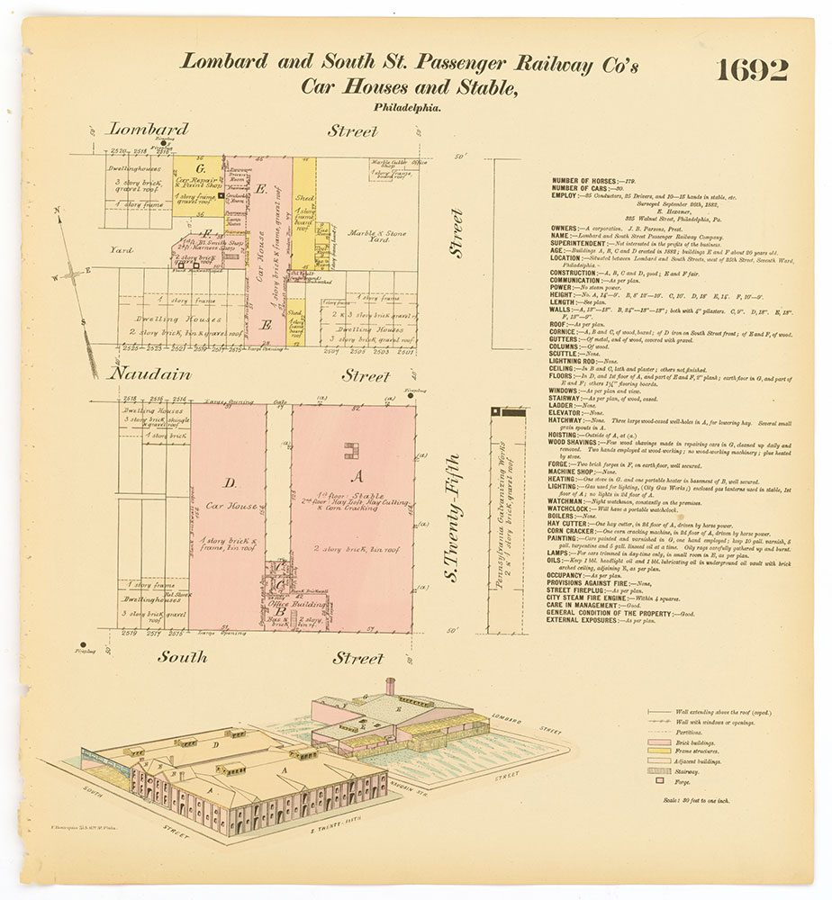
Hexamer General Surveys, Vol. 18, Plate 1692 — September 26, 1882. Two blocks in
plan, a bird’s-eye view below, and a column of insurance detail down the right.
Free Library of Philadelphia, Map Collection —
item 13826↓ Save image · permission to publish
1882 – 1897
The car yard, and the trade it was about to end
The Lombard and South Street Passenger Railway was a five-cent fare road. It ran
a joint arrangement with the Spruce and Pine Streets Passenger Railway — an
exchange ticket that carried you over both lines for six cents. Its yard sat on the
block bounded by Lombard Street, Twenty-fifth Street and South Street, in the
7th Ward: car houses along one side, the stable behind.
What Hexamer counted in 1882.179 horses. 80 cars. Buildings A to D
new that year. President, J. B. Parsons.
That ratio — better than two horses for every car — is the whole economics of
the horsecar. A team could not work a full day; it was swapped out at intervals, which meant
stabling, feeding, mucking and shoeing on a scale that needed men living close by.
That is the demand Bridget Nolan was renting rooms into.
And it was already doomed when she started. Philadelphia’s first electric cars ran on
December 15, 1892. Within five years the conversion was complete: the last horse car in
the city ran in 1897, on the Callowhill Street line. In that same year, 1897, the
Lombard and South Street Passenger Railway was leased away to the West End and Angora
Passenger Railway Company and ceased to exist as an operating concern.
Which puts a date on the lodgers.
John Liveny, conductor, is hurt jumping from his car in July 1890. The directories
put George Patton at this house in 1892 and John McCullough and William
McMenamin in 1893, all three entered as drivers.
A driver drove horses. Within four years of McCullough and McMenamin sleeping in this
house, there was not a horse car left in Philadelphia. The trade that filled 2518 South
Street with paying lodgers had about five years to run, and the men in the back bedrooms
did not know it.
The company itself was swallowed on schedule. Union Traction was incorporated
September 6, 1895 and absorbed most of the city’s lines; Union Traction was leased
to the Philadelphia Rapid Transit Company on July 1, 1902; PRT ran until the last
day of 1939, and on January 1, 1940 became the Philadelphia Transportation
Company — the PTC whose building is in the 1949 photograph further down this page.
What became of the yard: it is a school, and you can see it from the doorstep.
The car-yard ground is now owned by The Philadelphia School, the progressive
preschool-to-eighth independent school founded in 1972. Its holdings on this block, from
the city’s assessment roll:
2501–15 South Street — 25,564 sq ft, classed SCHOOL 3 STY
MASONRY, build year given as 1900 (an assessor’s figure, and of the same
quality as the “1915” it gives your own house). 2504 Lombard Street — 14,592 sq ft, now the parking lot behind it.
Forty thousand square feet, in one holding, on the exact footprint Hexamer surveyed. The school
also owns 2501–29 Lombard Street (28,184 sq ft) on the far side of Lombard.
Its own history page dates the move: “Work on the remodeling of 2501 Lombard and
raising the money for renovations began simultaneously in the spring/summer of 1976.”
They remodeled what was already standing. Nobody at the school describes the building as
a car barn — but the parcel, the acreage and the Hexamer address all sit on top of one
another.
And what stood between the horses and the children — two different answers, for
two different parcels.
The car-barn ground itself — 2501–15 South Street. The newspapers are no
help: the Inquirer, searched across 1890 to 1985, carries not one notice at 2501, 2505,
2509 or 2513 South Street. But the atlases name it outright, and they give three
different answers in three generations. See the entry below.
The other parcel has a name, and it is a famous one. On August 8, 1944 the
Inquirer ran a help-wanted advertisement giving good conditions, good salary, and an address:
SLATER SYSTEM, INC., 2501 LOMBARD STREET — the building the school now uses as its
front door, on the far side of Lombard.
Slater System was a Philadelphia food-service firm that fed factories, colleges and
schools. By 1961 it was the largest industrial catering business in the United
States, and in that year Automatic Retailers of America bought it for $15 million
— a deal so large that ARA moved its head office to Philadelphia because of it.
ARA became ARA Services in 1969 and, in 1994, Aramark.
By January 1975 whatever was left at 2501 Lombard was directing enquiries to
Wilmington. Eighteen months later the school had the keys.
A story that does not belong to this yard — but does belong to this
neighborhood.
Search this company and you will be offered Caroline LeCount, the Black schoolteacher
and activist who in March 1867 had a conductor arrested for refusing her a seat, three
days after Pennsylvania outlawed segregated streetcars. She was the first Black woman to
pass Philadelphia’s teaching examination, raised money for Black soldiers during the
Civil War, and became the second Black woman to run a public school in the city.
It was not this line. It happened at Eleventh and Lombard, on the Tenth and
Eleventh Street Railway — a different company, three miles east. The two get
conflated and the error is easy to inherit.
And then the city put her name around the corner anyway.
Taney Street is now LeCount Street.
The street had carried the name of Roger B. Taney, the Chief Justice who wrote
Dred Scott, for more than a hundred and sixty years. In October 2024 Council
President Kenyatta Johnson, with Curtis Jones Jr. and Jeffery Young Jr.,
introduced a bill to rename it. Council passed it unanimously that November and
Mayor Cherelle Parker signed it. It is understood to be the first Philadelphia street
named for a Black woman.
The change has already gone through to the city’s books. In the Office of Property
Assessment’s public roll there are now 597 properties on LeCount Street and not one
left on Taney.
The nearest of them is 419 S. LeCount Street — about 600 feet from this front door.
Two blocks north and a little west; call it a two-minute walk.
So the conductor who refused Caroline LeCount a seat was working for another company, on
another line, in another part of town. But the woman who had him arrested now has her name on
a street you can see the end of — and the yard that put the horses on this
street is a school full of children.
Hexamer General Surveys, Vol. 18, Plate 1692, September 26, 1882 (Free Library of
Philadelphia Map Collection, via the Greater Philadelphia GeoHistory Network) ·
company history from the Brill Magazine account of November 1924 · City of
Philadelphia Office of Property Assessment public dataset · renaming reported by the
Philadelphia Inquirer, PhillyVoice, WHYY and Philadelphia City Council, 2024.
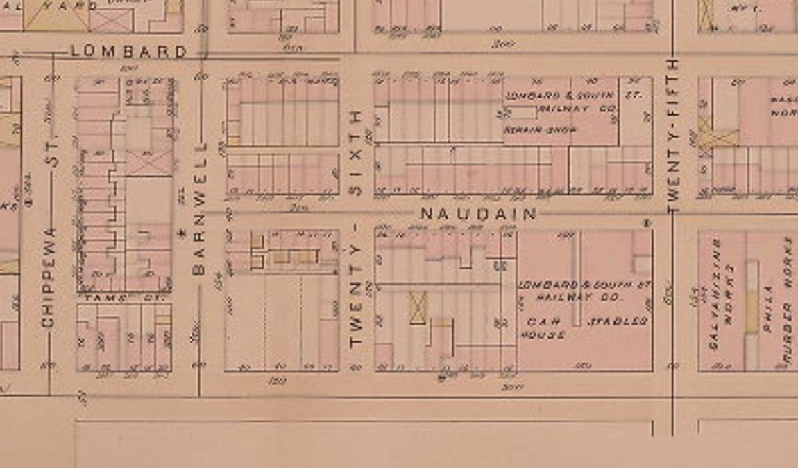
Bromley 1885, Plate W. The block bounded by Naudain, Twenty-fifth, South and Twenty-sixth, lettered LOMBARD & SOUTH ST. RAILWAY CO. — CAR HOUSE — STABLES, with the REPAIR SHOP north of Naudain. Around it: Chippewa, Barnwell, Tams Court, a galvanizing works and the Phila. Rubber Works. This is the view from a doorstep that did not exist yet.G. W. & W. S. Bromley, via GeoHistory / Athenaeum of Philadelphia
October 24, 1883
Maule, Bro. & Co. fail, owing a hundred and fifty thousand dollars
For a long time the 1884 sheriff’s sale was an event without a cause. Something
had gone wrong for Edward Maule, and we did not know what. Here is what went wrong, printed
in the Philadelphia Inquirer of Wednesday October 24, 1883, page 2, column four,
under the heading THREE FAILURES — With No Appreciable Effect on Trade — Some
Inside History.
“Although the failure of Maule, Bro. & Co., lumber dealers, of
Twenty-fifth and South streets, was quite unexpected, there was no appreciable effect upon
trade outside of the firms of John W. Smith & Co., mill owners, at No. 2110 Filbert
street, and Evert P. Maule & Co., No. 305 Cherry street, which appear to be connected
with the larger firm, both by family and friendly ties. As it is, both of the smaller houses have
succumbed.
“The assigned cause of the suspension of Maule & Bros. was its impossibility to
realize enough on its assets, which consist largely of real estate, at present
unproductive. Their liabilities are represented, in round numbers, about
$150,000.”
Read the address again: Twenty-fifth and South streets.That is your corner. The 161 feet by 271 feet that the sheriff would advertise thirteen
months later — 101 feet west of Twenty-fifth, running back to Bainbridge — was not
idle speculative ground held by a family that happened to be in lumber somewhere else.
It was the yard. Your house stands on the stock ground of Maule, Brother & Company,
lumber dealers, and this is the notice of their collapse.
The three-number test, applied honestly to this one.
The newspaper gives an address, not a description: “Twenty-fifth and South
streets.” That is the corner. Your lot begins 101 feet west of the corner and runs
161 feet from there. So this article does not, by itself, place the yard on your exact 161 feet
— a business at a corner can occupy the corner only.
What makes the identification hold is not the address but the ownership. The lot the
sheriff sold thirteen months later was taken “as the property of Edward Maule”
under a writ arising from this same collapse, and it measures 161 by 271 to Bainbridge. The
firm’s assets were “property mostly in the southern section of the city… not
paying the taxes and the interest.” The yard was at the corner; your ground was the firm’s,
adjoining it, and it went down in the same failure. Whether stacked lumber actually stood on
your 161 feet is a question for the 1885 Bromley plate and the fire-insurance surveys, not for
this column.
The article then does something newspapers almost never do: it explains the failure by way of a
death five years earlier, and in doing so confirms, from an entirely independent direction,
the partition we had reconstructed out of two deeds recorded on the same February day in 1879.
“It is also stated that about five years ago Israel Maule, who
owned something like a half interest in the estate, died suddenly. His widow afterward
withdrew her husband’s share in the business. This is believed to have helped to bring
about the suspension.”
“About two years ago inquiries were made at the office of the [Philadelphia Credit] Bureau
as to the standing of the firm of Maule, Bro. & Co. In reply a statement was submitted by the
firm. This showed a balance of $219,000 over and above all liabilities. The assets,
however, consisted of property mostly in the southern section of the city, and which was really
not paying the taxes and the interest on the capital invested.”
Six facts we had separately, now joined into one sequence.
1878. Israel Maule dies on 21 April, intestate — and the newspaper says
suddenly, which no record we hold had told us.
1879. Deeds 926 and 927, both 5 February, $1 each way through Charles Richardson,
conveyancer — Martha Maule’s dower released from Edward’s parcel and confined
to the children’s. That is precisely what “his widow afterward withdrew her
husband’s share” looks like when it is written as conveyancing.
1873 and 1878. The two mortgages on this ground — Thackara $6,882, Westfeldt $12,000
— are what “unproductive real estate” means in practice: ground that had to be
borrowed against because it earned nothing.
1881. The credit bureau is told the firm is $219,000 to the good — on paper.
October 1883. The paper fails. Liabilities $150,000. Executions issue on confessed
judgments.
December 1884. The sheriff sells this lot under a writ of Levari Facias,
C. P. No. 2, September Term 1884, No. 225, for $26,762.50.
The 1884 sale was not a misfortune that happened to Edward Maule. It was the last stage of a
liquidation that began the day his brother died.
Edward Maule appears in the article by name, and not sympathetically. John W. Smith, the Filbert
Street mill owner ruined alongside them, gave the Inquirer this account:
“On Saturday last I called upon Mr. Edward Maule and asked him if
he would give me the money to deposit in the bank, which was to meet my note for $2800 which
I had given them and which was due on the 22d inst. I was told that it would be ready on
Monday. When I called, as requested, Mr. Maule stated that they had failed. This was
the first intimation I had of the matter.”
And his nephew Evert P. Maule, of Cherry Street, describing how he was drawn in:
“Edward Maule, my uncle, offered me capital in the shape of discounted papers, which
I accepted. Having had many losses for the first five years, that paper increased in amount, but I
continued on, and through loss and compound interest the amount increased to $60,000. At
present my business is quite prosperous, but the blow has been too much for me.”
He owed $12,000 to the firm and $17,000 to Edward Maule personally.
The largest creditor was not a bank. Mrs. Mary A. Barcroft, widow of Stacy A. Barcroft of
Barcroft, Belve & Co., 503 Market Street, held $88,213.60 secured by confessed
judgments — more than half the firm’s stated liabilities — and executions had
already been issued on them. A further $5,600 in judgments was held by
Lavinia Maule, a sister. Two widows and a sister, holding the paper that broke the family
firm and put your ground under the hammer.
What this closes, and what it opens.
Closed: why this lot was still open ground in 1884 when the block around it was building
up — it was a working lumber yard, not a vacant speculation. Why the sheriff came. Why the
widow’s dower was rearranged in 1879. And a small retraction of a retraction: the guess that
the family was “selling ahead of trouble” in 1884 once looked unevidenced. The trouble is now evidenced — it simply started in October 1883, not 1884.
Opened:Mary A. Barcroft is a new name and the one who actually forced the sale;
whoever bought at the sheriff’s sale may well have bought for her. Lavinia Maule is a
sister we did not have. And the firm name itself carries the rest of the story — assignees’ notices, creditors’ meetings, and the sale of the yard itself — is an
entire seam of 1883–85 newspaper coverage we have never opened.
Philadelphia Inquirer, October 24, 1883, p. 2, “Three Failures” ·
ProQuest Historical Newspapers, document 1925221084 · read on screen and then
re-read from the downloaded page image at 200 dpi, August 30, 2026 — every figure above
($150,000; $88,213.60; $5,600; $2,800; $29,000; $12,000; $17,000; $60,000; $219,000; $50,000)
checked twice against the scan.
December 1, 1884
The sheriff sells Edward Maule up, four o’clock on a December afternoon
Philadelphia Inquirer, Monday November 17, 1884, page 7, under
SHERIFF’S SALES:
SHERIFF’S SALE — By virtue of a writ of
Levari Facias, will be exposed to public sale, on MONDAY, December 1, 1884, at
four o’clock P.M., at the New County Court House, Sixth street, below Chestnut:
All that lot of ground, situate on the south side of South street, 101 feet west of
Twenty-fifth street, in the Thirtieth ward, city of Philadelphia; containing in front
161 feet, and in depth 271 feet to Bainbridge street.
C. P. No. 2, Sept. Term, 1884, No. 225. $26,762.50. McKeehan.
Taken in execution, and to be sold as the property of EDWARD MAULE.
GEORGE de B. KEIM, Sheriff.
It is the same ground. The measurements prove it.
Four years later, an ordinance of the Select and Common Councils, approved
December 24, 1888, authorizes the laying of gas pipe on a list of streets. One entry:
… south side of South street, commencing 101 feet west of
Twenty-fifth street, extending 161 feet west, in the Thirtieth ward …101 feet west of Twenty-fifth. One hundred and sixty-one feet of frontage. Word for word
the parcel the sheriff sold. This is your ground, described twice, four years apart.
And a levari facias is not a sale. It is a foreclosure.
That writ is the one used to seize and sell mortgaged real estate after default. Edward Maule
— Henry’s brother, the partner in Maule Brother & Co., the name lettered
across this ground on the 1876 atlas — did not sell this land. He lost it, on a debt
of $26,762.50, at four in the afternoon on the first Monday of December 1884.
Which answers a question that stayed open for a long time. Why is there no
Maule deed in 1889? Why did Henry Maule own no houses when he died in 1902? Because
the ground had already left the family, by court order, four years before the row went
up. Nobody sold it to a developer. The sheriff did.
The sequence, now continuous.
Date
What happens on this ground
1876
Lettered Edward Maule on the Hopkins atlas; the firm is
Maule Brother & Co. (Edward, Henry Maule), lumber, 2500 South
Dec 1, 1884
Sold by the sheriff out of Edward
Maule’s hands — 161 feet of frontage, 271 feet deep to Bainbridge
1887
Gopsill’s lists only Maule Henry, 2500 South
— the yard is now the eastern remnant, and Edward is gone from the trade
Feb 25, 1888
Fidelity Ins. & Trust Co. sells the
161×271 to WILLIAM FORBES, builder, 2031 Reed St, for $25,000
Mar 28, 1888
Subdivided into 38 lots through a straw
conveyance, subject to ground rents. Forbes Street is cut through the parcel —
it did not exist in the 1884 sheriff’s description, which runs 271 feet clear to
Bainbridge
May 14, 1888
PERMIT: eight 3-story dwellings, two with
stores, south side of South St between 25th and 26th, 16×44
1888
Baist still draws open ground — the atlas was surveyed
before the row went up, not after
Oct 1, 1888
PERMIT: thirty 2-story dwellings, both
sides of Forbes St between South and Bainbridge, 13×49
Dec 24, 1888
Gas pipe authorized along exactly those
161 feet — seven months after the South Street permit
1889
Water main laid on Forbes/Bambrey (per the 1918 Sanborn)
— months after the Forbes Street permit
July 21, 1890
A tenant is living at 2518
Each utility follows its own permit by the right interval — gas to South Street seven
months after the South Street houses, water to Forbes Street months after the Forbes Street
houses.Those utility dates are easily read as the construction date, and landed a
year late. Gas and water do not date a row of houses. They trail it.
What to chase now — and it is a different question than before.
Who bought at the sheriff’s sale on December 1, 1884? That person owned this ground
when the row was built, and either built it or sold to the man who did. The purchaser’s
name is in a sheriff’s deed recorded in 1884 or 1885 — and that is
inside the range FamilySearch has transcribed, unlike 1889.
Two handles on it:
The court record: Court of Common Pleas No. 2, September Term 1884, No. 225, debt
$26,762.50, attorney or plaintiff McKeehan. That names the mortgagee who
foreclosed.
The grantor index under Keim (the sheriff) or under Maule, Edward for
1884–85 — film 1318519 covers v. M 1683–1895.
Chasing the purchaser — four routes tried, all closed.
The name we want is whoever bought at that sale. Today I tried to get it from home:
Route
Outcome
FamilySearch deeds, sheriff’s deed 1884–85
Out of range. The transcribed Philadelphia deed books run to about
mid-1884 — the groups that surface are Nov 1883–Feb 1884 and
May–July 1884. A December deed is past the edge, exactly as 1889 is.
FamilySearch, “Edward Maule” + “Levari Facias”
No results.
FamilySearch, “Maule” + “Bainbridge street”
Eight documents, none of them this parcel.
The Inquirer’s report of the sale
The defendant is not named in it. Edward Maule appears in the paper eleven times in the 1880s:
Oct 25, 1883, Nov 10, 1884 and Nov 17, 1884 — the three-week run of
sale advertisements — and then nothing in December. Sale results columns
printed the property and the buyer, not the man who lost it.
So the purchaser’s name is on paper and only on paper. But we now know precisely
which paper: a sheriff’s deed of December 1884 or early 1885, and the sale is
docketed at C.P. No. 2, September Term 1884, No. 225.
Philadelphia Inquirer, November 17, 1884, p. 7, Sheriff’s Sales — ProQuest
document 1825982057; first advertised November 10, 1884, p. 7. Ordinance approved December 24, 1888, printed in the Inquirer of
December 28, 1888, p. 12 — ProQuest document 1826040915. Both found through
ProQuest’s Command Line search on the phrase
“south side of South street” AND “Thirtieth ward”.
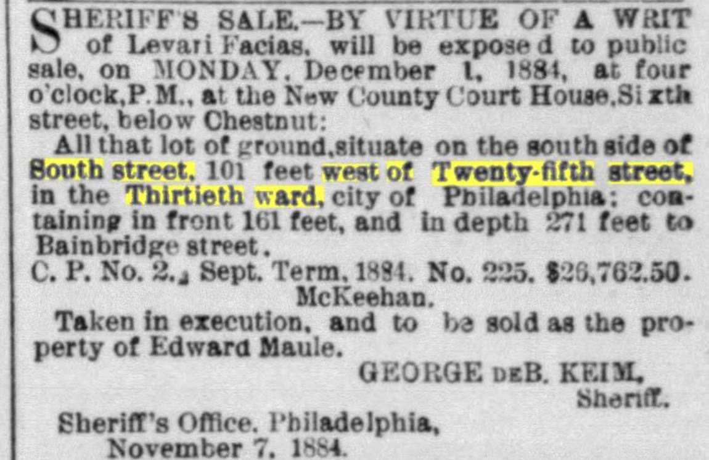
SHERIFF’S SALES, Philadelphia Inquirer, November 17, 1884, page seven. “Taken in execution, and to be sold as the property of Edward Maule.”Philadelphia Inquirer, via ProQuest Historical Newspapers
December 24, 1885
Maule & Donahue — the firm that may explain your deed
The trustees of the city’s Gas Works met to award their supply contracts for the coming
year. The Inquirer reported it the next morning under Contracts for Supplies:
A long discussion arose from Mr. Alcorn’s objecting to awarding Mr. Charles J. Eete
the contract for lumber, as his bid in the aggregate was said to be $400 more than that
of J. A. Stevenson and $38 more than Maule & Donahue’s bid.
So Maule & Donahue was a real Philadelphia lumber firm, big enough to bid on the
city gas works’ annual timber contract, and it lost that year by thirty-eight
dollars. This is four years before your house was built, on ground the Maules owned.
And it was bigger than one bid. The firm turns up in four separate official records:
the Journal of the Common Council of the City of Philadelphia, 1883–84 —
twice, in the warrant registers on pages 638 and 640, being paid by the city alongside
Cresswell, John Stinson, Morris Tasker & Co. and the Akron Sewer Pipe Agency;
the Annual Message of the Mayor of the City of Philadelphia, 1883;
and the Annual Report of the Secretary of the Navy, 1886 — twice.
A lumber firm holding both city and federal contracts, in the years the row went up.
And the Navy connection is not a coincidence of scale: the United States Naval Asylum stood
two blocks south of this house.
Why this matters more than a lost contract.
The person who sold 2518 South Street on November 5, 1949 was Sara Donahue,
widow — a landlord who appears in no census at this address, in no
newspaper we can tie to her, and who cannot be picked out of the forty-odd women of that
name in 1940 Philadelphia. She has been the hardest single blank in this whole file.
And here is a Donahue — spelled exactly as she spelled it — in partnership
with a Maule, in the lumber trade, in the same city, in the decade the houses went up on the
Maule yard.
If the row at 2516–2522 was put up on Maule ground and a Donahue partner took houses
as his share, the whole ownership question resolves. That is a hypothesis, not a finding.
What would settle it is the registry unit book for block 005S10 — which remains the one
thing worth the trip to Spring Garden Street.
The partner’s given name is not reachable from home. Every source that names the
firm is a payment register — company name and a dollar figure, nothing more. The
Inquirer carries the firm exactly once in fifty-five years. The city-directory index
searches personal names only, not trade listings. What would give the name is an
1880s Gopsill’s Philadelphia business directory, opened at the page headed
Lumber — a page image, not a search result.
And a coincidence to be careful with. The under-bidder in the same paragraph
is J. A. Stevenson. The head of household at 2518 in the 1930 census was
Mary Stevenson, an Irish-born widow, and her daughter Agnes married Alexander Huff.
There is no reason to connect them. Stevenson is a common name and a lumber contractor
bidding thousands against the Gas Trust is not obviously of the same world as a widow letting
rooms forty-five years later. It is noted here only so that nobody later mistakes the echo for
evidence.
Philadelphia Inquirer, Friday December 25, 1885, page 8, “Suing Out Bonds —
Contracts for Supplies” · firm name corroborated in the Smithsonian’s
Warshaw Collection of Business Americana, Lumber Industry and Trade.
1887 · 1895
Maule & Donahue, and the partner nobody names
Business directories, unlike residential ones, list a firm with its partners’ given names — and the given name of the Donahue in Maule & Donahue is the most valuable small fact still missing about this ground.
It turns out two of these volumes are online, free, in full view, on HathiTrust. Temple
University keeps a page listing every Philadelphia directory known to be digitized, and the
1887 Gopsill and an 1890s Boyd are both on it.
Gopsill’s Business Directory, 1887, page 300 — the Lumber column.
Running headers LUM and MAC; the trades alphabetical down the page, Lumber into
Macaroni into Machinery. And in the M’s of the lumber list, between
Manderson A. & Co., 1135 Shackamaxon and Maule S. G. Morton, 1900
Wash’n av:
Maule Henry, 2500 South
Two years before your house was built, the yard it was built on is listed to
Henry Maule personally — no company, no partner, no & Co.
And no Donahue in the trade at all.
In the same alphabetical run, where a Donahue would fall — between Deacon Howard R.,
2933 N Broad and Doughten J. C., 419 Walnut — there is nothing. By 1887 the
firm of Maule & Donahue, which was bidding on city lumber contracts in 1885, has
vanished from the lumber trade.
Boyd’s Co-partnership and Residence Business Directory, 1895, page 478.
This is the better of the two books, because its whole point is partnerships: every man is
printed with his firm in brackets after his name — Cunius Charles E (Cunius &
Robson), Mattson Thomas L (Mattson & Magee). If Henry Maule were still in
partnership with anybody in 1895, the bracket would say so. It does not:
Entry, exactly as printed
What it tells us
Maule Henry, lumber, 2500 South, h 3248 Chestnut
Still the yard. No firm in brackets — he is trading alone. And we now have
his own front door: 3248 Chestnut Street.
Maule William H, seeds, 1711 Filbert, h Villa Nova
The son who took the seeds. This is Maule’s Seeds at its Filbert Street
address, two years before the catalog went national.
Maule John C, real estate, 501 Provident bldg, h Bristol Pa
A Maule who sold property for a living. See below.
Maule Francis I, advertising, 323 Chestnut, h 105 S 21st
—
Maule Joseph E, leather, 151 Margaretta, h 805 Windsor sq
—
Maule John, feed, 53d c Haverford av
—
Sixteen Donahues, and not one of them a lumberman.
Page 246 of the same volume lists every Donahue and Donahoe in Philadelphia in 1895: cigars,
liquors, notions, grocer, dining, ice, candy, milk, hay, two undertakers, and one
Southwark Odorless Excavating Co. There is no Donahue in lumber, building or
carpentry anywhere in the city.
Which weakens the obvious theory. The natural assumption is that a Donahue partner took houses off the Maule yard as his share, and that this is how the house reaches
Sara Donahue, who sold it in 1949. If that happened, it happened before 1887 and
the man was out of the trade by then — or the connection is not through the lumber firm
at all, and the name is a coincidence. The partnership is documented in 1883–86 and gone
by 1887, and your house went up in 1889–90, after it ended.
The new name: John C. Maule, real estate.
501 Provident Building; living out at Bristol, Pennsylvania. If the family cut the east end of
the yard into building lots at the end of the 1880s — and somebody did, because in 1888
it is one undivided parcel and by 1895 it is a row of narrow lots — then a Maule
whose trade was selling property is the obvious hand to have done it.
He is worth chasing: in the deed index, in the Real Estate Record, and in the 1889–90
permit. He may be the name on the paper.
Gopsill’s Philadelphia City Directory, 1887, business directory p. 300 —
HathiTrust, uiug.30112004527377, seq. 312 ·
Boyd’s Co-partnership and Residence Business Directory of Philadelphia, 1895,
pp. 246 and 478 — HathiTrust, loc.ark:/13960/t1rf66201, seqs. 188 and 420 ·
Both located from Temple University’s Philadelphia Directories research guide.
1888
Still a lumber yard
Baist’s Atlas, Plate 9. Between 25th and 26th, on your side, there is
one undivided parcel marked LUMBER YARD — no house lots drawn at all, only
parcel-scale dimensions along the frontage: 29.3, 25, 30. Brick building appears only at the
far western end near 26th.
The hinge of the whole file. If the row existed in 1888, Baist would have
drawn a row of ticks along South Street. He drew none. Construction therefore falls
1889–1895 on this evidence alone — later narrowed to mid-1890 by a
newspaper notice; see July 1890 — after Philadelphia began issuing permits in
1889. A permit should exist, and permits name the builder.
Reading Baist: his colors reverse Bromley’s. Pink means factory, yellow means
frame, and ordinary brick dwellings are gray.
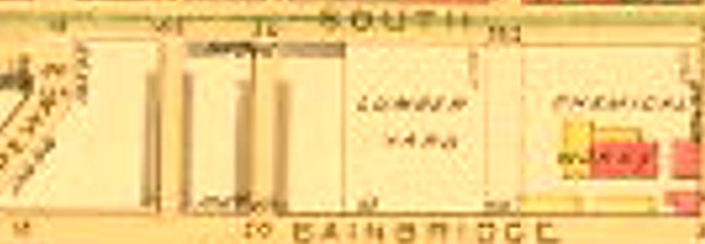
Baist, 1888. The first atlas that shows this ground at all — and it shows it whole, still a yard, a year before the houses went up.G. W. Baist, via GeoHistory
III · The houses go up
William Forbes, 1888 — eight houses, a new street, and his name on it
25 February · 28 February · 28 March · 14 May · October 1, 1888
William Forbes buys the yard, cuts a street through it, and builds thirty-eight houses
The one-sentence version
2518 South Street is one of eight three-story houses put up in 1888 by
WILLIAM FORBES, builder, of 2031 Reed Street, on a lot fifteen
feet six inches by fifty-eight, subject to a ground rent of $90 a year — and
Forbes Street, which runs behind your house, is named after him.
Every one of these facts comes from the Philadelphia Real Estate Record and Builders’
Guide, a trade weekly that from 1886 printed every conveyance and every building permit
in the city. The whole run is free and full-text searchable at the Internet Archive.
The 1889–90 construction date was for a long time an untested assumption and the
subdivision “behind the 1885 wall.” Neither was true. It was in print the whole
time.
The five documents, in order
Date
What the Guide printed
What it means
Feb 25, 1888
“South st, S s, 101 ft W Twenty-fifth st, Fidelity Ins. & Trust Co. to
W Forbes, Feb 25 88, 161 ft by 271 ft … 25000”
The three numbers, exactly. Fidelity — who held Edward Maule’s mortgage of
January 16, 1878 — still had this ground after the sheriff’s sale, and sold the whole
161 feet to William Forbes for $25,000.
Feb 28, 1888
“South st, S s, 101 ft W of Twenty-fifth st, W Forbes to J M McCurdy, Feb 28 88,
161 ft by 271 ft … 25000”
Three days later, out again at the same price. A financing conveyance, not a sale.
Mar 28, 1888
“Forbes and Bainbridge sts, N E cor, J M McCurdy to A Quinn, Mch 28 88…”
followed by a schedule of lots, ending “Same; sold Mch 28 88, A Quinn to W Forbes,
sub g rts”
The subdivision. Out to a straw and straight back the same day, subject to ground
rents — the standard Philadelphia method of turning one parcel into building lots
that finance themselves.
May 14, 1888
BUILDING PERMITS: “Wm Forbes, eight 3-sty dwgs, two with stores, S s South st,
bet 25th and 26th sts, 16x44.”
This house’s building permit.
Oct 1, 1888
BUILDING PERMITS: “Wm Forbes, 2031 Reed st, 30 2-sty dwg, E and W sides of
Forbes st bet South and Bainbridge, 13 x 49.”
The other thirty houses, on the street he had just cut through the middle of the lot.
Your lot, in its own words
The March 1888 schedule lists the new lots one by one. Reading west from Twenty-fifth Street:
South and Forbes sts, S E cor, 16 ft by 58 ft, g rt $90
South and Forbes sts, S W cor, 16 ft by 58 ft, g rt $90 South st, S s, 101 ft W Twenty-fifth st, 15 ft 6 in by 58 ft, g rt $90
South st, S s, 116 ft 6 in W Twenty-fifth st, 15 ft 6 in by 58 ft, g rt $90
South st, S s, 132 ft W Twenty-fifth st, 16 ft by 58 ft, g rt $90
South st, S s, 215 ft W Twenty-fifth st, 16 ft by 58 ft, g rt $90
South st, S s, 231 ft W Twenty-fifth st, 15 ft 6 in by 58 ft, g rt $90
South st, S s, 246 ft 6 in W Twenty-fifth st, 15 ft 6 in by 58 ft, g rt $90
Forbes st, W s, 61 ft S South st (14 lots), each 14 ft by 60 ft, each g rt $60
Forbes st, E s, 61 ft S South st (14 lots), each 14 ft by 60 ft, each g rt $60
Forbes and Bainbridge sts, N E cor and N W cor, each 14 ft 4 in by 60 ft, g rt $60
Count them, and the arithmetic closes.
Six South Street lots plus the two South-and-Forbes corners = eight. The May permit says
“eight 3-sty dwgs.” Fourteen lots each side of Forbes Street plus the two Bainbridge corners = thirty. The
October permit says “30 2-sty dwg.”
Thirty-eight houses on Edward Maule’s lumber yard, all of them William Forbes’s, all
of them in 1888. The schedule and the permits were printed five months apart and neither refers
to the other; they agree exactly.
The eight lots fill Edward Maule’s 161 feet exactly. The first begins at 101 feet
west of Twenty-fifth; the last, at 246 feet 6 inches, is 15 feet 6 inches wide and therefore ends
at 262 feet — which is 101 + 161. The schedule closes at both ends, to the inch.
Which lot is which house
Laying the March 1888 schedule against the numbering the atlases give
— four houses between the yard and Bambrey, 2516, 2518, 2520, 2522, the last a corner
store, with South Street continuing past Bambrey at 2524:
Lot in the 1888 schedule
Width
House
101 ft W of Twenty-fifth
15 ft 6 in
2516
116 ft 6 in W
15 ft 6 in
2518 — this house
132 ft W
16 ft
2520
South & Forbes, S E cor
16 ft
2522 — a shop
— Forbes Street, cut through in March 1888 —
South & Forbes, S W cor
16 ft
2524 — a shop
215 ft W
16 ft
2526
231 ft W
15 ft 6 in
2528
246 ft 6 in W
15 ft 6 in
2530
And the far west end of the row is somebody else’s work entirely.
A directory test shows 2538 South occupied from 1888, 2530 from 1890,
2518 from 1891, and reads it as a single row filling in from the west towards the lumber
yard. It is not one row. The Guide for 1887 shows John White selling
lots 15 ft by 67 ft at 276 feet and 291 feet west of Twenty-fifth —
beyond the 262-foot end of Edward’s ground — a year before Forbes bought.
2538 was occupied in 1888 because a different builder had already built it on a different
parcel. The apparent “west-to-east” construction sequence is an artifact of two
developments being read as one.
Four things this corrects
The date was 1888, not 1889–90. The file inferred 1889–90 from a gas
ordinance, a water main and the first directory tenant, and flagged it honestly as an untested
assumption. It was a year late. The permit is May 1888.
There were eight houses, not four. The file has assumed “four brick houses on
Edward’s foreclosed 161 feet” throughout. Eight, two of them with shops.
“Two with stores” is in the original permit. Sanborn marks a house on this row “S.” for store in 1918 and reasoned that the
arrangement must be older than the map. It was older by thirty years — it was designed
in.
The subdivision was never behind the 1885 wall. FamilySearch’s deed books do stop
about 1885, and that finding stands. But the deeds were reported in a trade weekly
that is fully digitized, so the wall was only ever a wall around one archive.
Who William Forbes was.
An operative builder of 2031 Reed Street, working at volume across South Philadelphia. The
same volumes show him taking out permits for twenty-five two-story dwellings on Pierce Street
and three on South Twentieth, and selling finished houses through 1889 on Reed, Mountain and
Morris Streets. He is not an architect and he is not in the Carpenters’ Company. He is the
kind of man who bought a bankrupt lumber yard, cut a street through it, named it after himself, and
put up thirty-eight houses in a single year.
Which finally answers a question open since the beginning: why the block’s
side street was called Forbes until about 1895. Not a Forbes family, not a landowner from
the last century. The builder.
What this does not settle, stated plainly.
It does not say who bought at the sheriff’s sale in December 1884. It says that by
February 1888 the Fidelity Insurance & Trust Company held the ground and sold it. Fidelity
were Edward Maule’s mortgagee from January 1878, so the likeliest reading is that they bought
in at the sheriff’s sale to protect their mortgage and carried the ground for three years
— but that is an inference, and the sheriff’s deed is still the document that would prove
it.
It does not name an architect, and for eight speculative houses on South Street there very
probably was none.
And one loose thread, noted not merged. The Guide of 1886 carries a line in its
“Gossip of the Week”: “A lot on South St., west of 25th, 158x271, sold for
$17,000.” That is 158 feet, not 161 — and 158×271 is the measurement of
the parent lot recited in the 1870 patent. It may be this ground under a loose figure, or
it may be the parcel next door. It should not be decided on one line of gossip.
Philadelphia Real Estate Record and Builders’ Guide, vol. III (1888) —
conveyances of 25 and 28 February and March 28, 1888; Building Permits columns in the issues
of Monday May 14, 1888 and Monday October 1, 1888. Also vol. I (1886) and vols. IV–V
(1889–90). Free full text at the Internet Archive, identifiers
PhilaBuildersGuide_v1_1886 through PhilaBuildersGuide_v5_1890.
Searched August 31, 2026.
1886 – 1891
Who William Forbes was, and how little time he had left
He bought this ground in February 1888, built thirty-eight houses on it that
year, and was dead within two years. The last conveyance in his own name is January 17, 1890. By April 3, 1890 his executors were selling his own house.
The Builders’ Guide reports the same man week after week for five years, so it is
possible to watch a small Philadelphia operative builder work, and then stop.
Where he lived
1404 South Twentieth Street through 1886 and 1887; 2031 Reed Street from 1888.
Both addresses sit inside the district he was building in — he lived among his own
houses, half a mile from your block, and moved when the work moved.
What he built
Year
Permit
1886
Ten two-story houses, 15 × 35 ft, Mountain Street
above Twentieth
1887
Seventeen two-story dwellings, each 14 × 28,
Sober Street between Tasker and Twentieth · Twenty two-story dwellings, Ridge
Avenue and Thirty-fifth
1888
Twenty-five two-story dwellings, Pierce Street
· eight three-story dwellings, two with stores, on this block ·
thirty two-story dwellings on Forbes Street
1889
Three two-story dwellings, 1628–32 South
Twentieth
Add the conveyances and the reach is wider still: Woodstock, Wilder, Lambert, Reed, Mountain,
Pierce, Twentieth, Twenty-first, Wyoming Street, Woodland Avenue. Better than a hundred houses
in four years, all of them small, all of them in South and West Philadelphia, none of them
designed by an architect.
His method was fixed, and your block was not a special case.
Buy a parcel; lay it out in lots; convey the whole thing to a friendly third party and take it
straight back subject to ground rents; build; sell the houses with the rents attached.
The two men he used as straws on South Street in March 1888 — Andrew Quinn and John M.
McCurdy — had both been doing it for him since 1886 and 1887, on Twentieth Street and on
Lambert Street.
So the transaction that created your lot was not improvised for this deal. It was the way
he always worked, applied to a bankrupt lumber yard.
The death, dated to eleven weeks
January 17, 1890 — “Twentieth and Morris sts N W cor,
W Forbes to E Sheridan, Jan 17 90, 50 ft 3 in x 67…”
April 3, 1890 — “Reed st No 2031, 16 ft x 63 ft, M A Forbes et al exr
to M Mulrenan, Apl 3 90.”
The second entry is his own house being sold by his executors.William Forbes died on March 19, 1890, aged forty-nine, of hypertrophy and partial
cirrhosis of the liver — nineteen months after he took out the permit for
this row, and about a year after the last of the thirty-eight houses would have been finished.
And his estate sold your block.
M. A. Forbes and her co-executors kept conveying his houses for at least two more years.
Through 1890 on Mountain Street and Twentieth Street; then, in 1891, on this ground:
May 7, 1891 — “Forbes st, W s, 159 ft S South st… to S B White” and
“Forbes st, W s, 201 ft S South st… to J Lafferty”
May 29, 1891 — “Forbes st, W s, 229 ft S South st… to E C Newman, 14 ft x
60 ft, g rt $60… 1300”
June 23, 1891 — “South and Forbes st, S E cor… to C Clark, 16 ft
x…” — that is 2522, the corner shop.
Thirteen hundred dollars for a fourteen-foot house on Forbes Street with a $60 ground rent.
That is what these houses were worth new.
This clears up the last misleading signal
The directory test shows 2530 first occupied in 1890 and 2518 in 1891, and that lag is what pushed the whole construction date a year or two late.
The lag was not construction. It was probate. The houses were finished in 1888–89;
their builder died in early 1890; and his executors were still selling them off one at a time
through 1891. People moved in when the estate sold, not when the bricklayers left.
Two smaller things, kept because they are the only personal traces.
He was in the debt courts constantly — the judgment indexes carry him against Michael
Kenny, Elizabeth Leslie, Patrick O’Keefe, Thomas Hennaugen and James F. Power, and against
him by the Philadelphia Trust Company. That is not scandal; it is the ordinary churn of a man
financing houses on borrowed money.
Robert A. Forbes appears on both sides of judgments with him in 1886 and 1887 —
almost certainly a relative, and the obvious thread to pull next.
And in 1889 he turns up in a list of men “who have bought lots at that place”
— Booser, Teeser, Knupp, Wm. Forbes, McEllhenny, Lyme, Strickler, Walburn. A
builder buying himself a lot somewhere out of town, the year before he died.
He never saw the street lose his name. Forbes Street became Bambrey between 1895 and 1901,
five to ten years after he was buried. The houses have outlasted the name by a century and a
third.
Philadelphia Real Estate Record and Builders’ Guide, vols. I–VI
(1886–1891) — permits, conveyances and judgment indexes, searched for
“Wm/William/W Forbes” throughout. Free full text at the Internet Archive.
August 31, 2026. Found September 6, 2026: the return of his death, week ending March 29, 1890 —
March 19, 1890, aged 49, carpenter & builder, born in Ireland,
of hypertrophy and partial cirrhosis of the liver, certified by James F. Gayley, M.D.;
died at Boothwyn, Delaware County; address 2151 Fitzwater Street; buried
22 March at Mount Moriah. Philadelphia registered deaths as returns until
June 30, 1890, so there is no certificate for him. Still to find: the will of
William Forbes, 1890, in the Philadelphia Register of Wills — which would give
M. A. Forbes’s full name and the family.
March 28, 1888 onward
Who owned this house when it was new, and why the answer is two people
William Forbes owned it. He built it and he still owned it when he
died. But from the day the lot was created it had two owners at once, because of the
peculiar Philadelphia device that paid for it.
What happened on March 28, 1888
Three conveyances in one day, all recorded together:
“Forbes and Bainbridge sts, N E cor, J M McCurdy to A Quinn,
Mch 28 88, 14 ft 4 in by 60 ft, g rt $60” — followed by the schedule of all
thirty-eight lots with their rents — and then:
“Same; sold Mch 28 88, A Quinn to W Forbes, sub g rts.”
McCurdy to Quinn, Quinn back to Forbes, in a single day. Nothing changed hands in any real
sense. What the round trip did was cut the ownership of every lot in two.
A Philadelphia ground rent, in plain terms.
From March 28, 1888 there were two separate pieces of property where there had been one:
1. The house and lot — 15 feet 6 inches by 58 feet — owned by William
Forbes, who could build on it, sell it, and mortgage it, on condition of paying $90 a
year, for ever.
2. The ground rent itself — that perpetual $90 a year, secured on your lot —
a separate piece of property, owned by somebody else, and freely saleable as an investment.
This is how the whole row got financed. Forbes did not need the full price of the land: he
needed the land minus the capitalized value of the rents, and the rents were sold to investors who
wanted a safe annuity. At six percent, $90 a year was worth about $1,500 — roughly
what a finished house on Forbes Street sold for. The rents paid for the ground; the houses were
the profit.
So the honest answer to “who owned it” is: Forbes owned the house, and a ground
landlord owned $90 a year of it. On the same day and by the same paperwork,
Andrew Quinn was the man the rents were created in — and he did not keep them long:
on the Pierce Street development that same month the Guide records
“19 lots… each g rt $42, A Quinn to H Copeland Jr,” which is exactly what
selling on a bundle of ground rents looks like.
And nobody bought this house new
Forbes was still the owner when he died on March 19, 1890. His executors
then spent four years liquidating: the Guide shows them selling Forbes Street houses
one at a time in December 1890, May 1891, twice more in 1892 — and the corner shop at
South and Forbes on June 23, 1891.
An asymmetry worth noticing.
The thirty Forbes Street houses appear again and again in the conveyance columns, sold
singly for about $1,300 each. The eight South Street houses appear exactly once
— in the schedule that created them — and then never again in the years this
source covers.
One of the eight did sell, and it changes the picture. In the volume for 1893:
“South st S s, 215 ft W Twenty-fifth st, M A Forbes exr to
H F Leeds, Jan 23 93.”
215 feet west of Twenty-fifth is 2526. So the South Street eight were sold —
just last, and slowly, nearly three years after Forbes died and after the whole of Forbes
Street had gone. They were the better houses, three stories against two, on the main street, two
with shops; the estate held them longest.
2518 itself never appears — and not because the volumes are missing. Volumes 9, 10 and 11 (1894, 1895, 1896) are gone, but everything else from 1886 to 1929 is there. Karen pushed
back: if he died in 1890 and the last house went in January 1893, why assume this one waited until
1894? She was right to. The gap was an excuse dressed up as a reason.
Every entry naming M. A. Forbes across 1890–99, in every spelling, together with every “South st No 25–” house-number entry, gives the estate’s whole printed trail: Reed Street, four lots on Mountain Street, six houses on
Forbes Street, the corner shop, 2526 — about a dozen conveyances out of thirty-eight
houses.
That is the real answer. The Guide’s conveyance columns are not complete. Two
thirds of these houses have no printed first sale at all. The likeliest explanation for
2518’s absence is simply that it was never printed — not that it sold late.
Silence in this source is not evidence of a date.
That fits what is known about who lived here. The first resident we can name,
on July 21, 1890, is a conductor on the Lombard and South streets railway — a
transit worker, in a house whose owner had died that winter. He was a tenant of a dead
man’s estate. By 1892 it is a boarding house.
M. A. Forbes was not just winding up an estate.
January 23, 1893 — “South st S s, 215 ft W Twenty-fifth st, M A Forbes exr to
H F Leeds, 16 ft x 58 ft, g rt $90 … 2000.” 2526 sold for two thousand
dollars, which is what one of these South Street houses was worth in 1893 — against
about $1,300 for a Forbes Street house.
June 1, 1893 — “Same sold W R Hall to M A Forbes, June 1 93,
g rt $150.” She was buying ground rents, not only selling houses.
1897 and 1898 — she appears three times in the judgment indexes as a
creditor: against John W. and R. B. Pierce, John Donohue, and Michael Abelson, the last
two on bonds and warrants. She was still lending money on property eight years after her
husband died.
So there was never a deadline. Nothing obliged the estate to be finished by 1893, and
M. A. Forbes had every capacity to keep a house and let it. Which makes a fourth possibility
live: that 2518 was not sold at all in these years.
What would answer it, in order of reachability.
1. Philadelphia tax assessment ledgers. They name the owner of every property,
every year, whether or not anything was conveyed. For a house that sat with one landlord
for decades, this beats the deed record outright. City Archives, so somebody’s legs. 2. The deed. Whoever bought it from the estate — if anyone did.
3. The Guide’s volumes for 1894, 1895 and 1896, missing from the Internet
Archive but possibly at HathiTrust or the Athenaeum. A long shot rather than an explanation
— see above.
And the will is not the document that answers it. Every one of these conveyances reads
“M A Forbes et al exr” — executors selling under a power of
sale. When executors sell under a power, the buyers take the houses and the beneficiaries
take the money. So the will names who got the proceeds, not who got this house.
What the will would give, and it is still worth having: M. A. Forbes’s full name and
her co-executors; the children; whether Robert A. Forbes — who appears on both sides
of judgments with him in 1886–87 — was a brother; and whether he died solvent. There
are two hints of strain: an execution issued against “Forbes & Ryan” in December
1889, weeks before his death, and “Bair v. Estate Wm Forbes dec” in September
1891. Four years of steady selling can be a tidy administration or a slow insolvency, and
the will and the account would tell which.
Both reachable from home: Philadelphia will books on FamilySearch — wills,
unlike deeds, run well past the 1885 wall — and Ancestry’s Pennsylvania Wills and
Probate Records, 1683–1993, free inside the Free Library.
Philadelphia Real Estate Record and Builders’ Guide, vol. III (1888) conveyances of
28 March; vols. IV–VIII (1889–93) for the estate sales. Free full text at the Internet
Archive. August 31, 2026. Capitalization of the ground rent at six percent is my arithmetic,
not a figure from the source.
Between 1888 and 1895
The house goes up
A three-story brick rowhouse, 15′6″ wide and 58′ deep. The 1987 deed
still carries the original survey language: 32 feet east of the east side of Bambrey
Street, on South Street then 51 feet wide, running back to a 3-foot alley that
leads west into Bambrey and east into a second alley down to Bainbridge.
Those interior service alleys are the tell — shared rear access for privies, coal and
ash, the signature of speculative row building before indoor plumbing.
On the city’s date. Philadelphia records say “built 1915,”
but that figure is flagged in the city’s own data as an estimate — a
placeholder used for thousands of old rowhouses. The atlases overrule it.
July 21, 1890
The first man to live here worked at the car barn on the corner
The Philadelphia Inquirer carries the address itself — not a name, not a deed
reference, just “2518 South street” — returns seven items across a
hundred and ten years. The oldest is from July 21, 1890, page 8:
… 2518 South street, a conductor on the Lombard and South streets road, had…
Two threads meet here. The Lombard and South Streets Passenger
Railway is the horse-car line whose car house and stables stood at Twenty-fifth and South
— the building Hexamer surveyed in 1882, with its 179 horses and 80 cars, half a
block from this door.
So the first man known to live in this house walked to work at the end of the street. The
lumber yard on one side, the car barn on the other, and a new brick house in between for the man
who punched the tickets.
And the date matches what we already had. The first named resident at 2518 is John Liveny, conductor, July 21, 1890 — the same day. Whether that name came
originally from this very column or from a directory, the two now corroborate each other, and the
newspaper adds the employer that the directory never gave.
The caution: the snippet does not itself contain the name, only the address and the trade.
And the sentence breaks at “had…”, which in a newspaper of 1890 is rarely the
beginning of good news. The full item is unread.
One more from the nineteenth century, and it belongs to the house next door.Inquirer, January 21, 1896, page 8: “wants position with wholesale or
manufacturing firm. Address J. A., 2518 [South] street.” That reads like a tenant of this house out of work. It is almost certainly 2516. The neighbors carry the identical advertisement, same wording, same initials, running at 2516 South Street on the
22nd, 23rd, 24th and 25th of January 1896. One stray “2518” against four clean
“2516”s is an OCR slip, not a second advertiser. Struck from this house.
And, at the other end of the century, the house sells. The Inquirer carried listings
for it in July and August 1998, January 1999 and May 2000 — described as
“Fitler Square, 2518 South Street, spacious elegant 4BR 2b home” and
“wonderful 4BR, 2 bath home, sep DR, wd flrs, new kit.” The advertised prices
read $670,000 and $450,000, with a $116,000 also on the page — but these
are dense small-print property columns and the OCR merges neighboring entries, so no figure here
should be attached to this house without seeing the page.
A hundred and ten years apart, the same four walls: a horse-car conductor moving in, and an estate
agent calling it elegant.
July 21, 1890
The first name we have
Six lines of newsprint on page 8 of the Philadelphia Inquirer, under the heading
Injured by His Own Car:
“John Liveny, 28 years old, of 2518 South street, a conductor on the Lombard and
South streets road, had his ankle crushed yesterday while jumping from his car, at Fortieth and
Girard avenue. He was taken to the Presbyterian Hospital.”
Somebody was living in this house in July 1890. That is ten years earlier than the census
could reach, and it moves the construction window from 1889–1895 to
1889 to mid-1890 — about eighteen months. Baist’s open ground in 1888,
Bambrey’s water main in 1889, permits beginning in 1889, and a tenant in place by the
summer of 1890. The house went up fast.
And look at what he did for a living. John Liveny was a conductor on the
Lombard and South Streets Passenger Railway — the horsecar line whose depot, with
179 horses and 80 cars, Ernest Hexamer had surveyed in 1882 directly across the
street from this house. He lived opposite the barn he reported to.
Which suggests what this row was built for. Four narrow houses thrown up in 1889–90 on
the edge of a lumber yard, facing a car depot, and let to the men who worked it. Not a
speculation about the future of the neighborhood — a speculation about the payroll
across the road. The city directories confirm it outright: by 1892 Bridget Nolan is
listed at this address as keeping a boarding house, with laborers lodging under her
roof. See 1891–1918, below.
He was 23, so born about 1867. The surname is printed Liveny; in Philadelphia it is more
often Livezey or Livesey, and the Inquirer’s compositor may have dropped a
letter. Treat the spelling as unconfirmed.
Philadelphia Inquirer, July 21, 1890, Vol. 123, Issue 21, page 8 — via the Free
Library of Philadelphia’s NewsBank subscription, readable at home with a library card.
1891–1918
Who was living here, year by year, 1891 to 1918
I told you twice that Philadelphia city directories were not digitized for this period and that
you would have to go to the Archives for them. That was wrong. They are in
HeritageQuest — free from home with your library card — in a collection of
U.S. city directories running 1822 to 1995, indexed by street address.
Michael Nolan · Residence year 1891 · Street address
2518 South · Occupation Laborer · Philadelphia City Directory,
1891
The Nolans were in this house in 1891 — nine years before the census, and
within months of John Liveny’s accident. The occupation matches the 1900 schedule exactly:
laborer. And the same search returns Michael Nolan again in 1892 and 1895, and
Bridget Nolan in 1892.
So the Nolans did not arrive shortly before 1900. They were here for at least a decade,
from 1891 or earlier, and they were very likely the family that took the house new, or close to
it.
Thomas Neville · Residence year 1918 · Street address
2518 South · Occupation Laborer
And there is the gap between the Robinsons in 1910 and the Hollywoods in 1920, partly filled by
a name we had never seen.
Other names the same search returns at this address. Ranked by relevance, and
not yet individually verified — treat as a worklist, not as findings:
1891 Michael Nolan · 1892 Michael Nolan, Bridget Nolan, William
McMeumiu(?), George Patton · 1893 John McCullough, William McMenamin, Robert
Shields · 1895 Michael Nolan, Bernard Dever, Daniel McKay, Thomas Mornn ·
1896 X. Jan Michael(?) · 1908 Michael Gardner · 1910 Louis
Kerns, William Hack · 1911 Michael Gardner · 1918 Thomas Neville,
William A. Gallagher · 1950 Mrs Mary Stevens
Two of these corroborate the census beautifully. Michael Gardner is the 41-year-old
boarder recorded at 2518 in the 1910 census — and here he is in the directories
for 1908 and 1911, so he lodged in this house for at least four years.
Mrs Mary Stevens, 1950, may well be Mary Stevenson, the widow who was renting the
house in 1930.
And then the record that explains everything else.
Bridget Nolan kept a boarding house here. The 1900 census left her occupation column
empty, as it did for most married women; the directory did not. And once you know that, the
other names fall into place. In the 1895 directory there are four men listed at
this address — Michael Nolan and Thomas Mornn, both confirmed
laborers, plus Bernard Dever and Daniel McKay. In 1893, three more: John
McCullough, William McMenamin, Robert Shields. In 1892, George Patton and another.
They are not a mystery. They are her lodgers.
Which makes the whole shape of this house clear. Every census we read found
too many people in fifteen and a half feet, and each time I treated it as a household that
happened to take someone in. It was not. 2518 was run as lodgings for working men from
within a year or two of being built, and stayed that way for forty years: Bridget
Nolan’s boarders in the 1890s, Gardner and Mack in 1910, Hackett and Dorney in 1920, and
in 1930 the Huffs themselves lodging with Mary Stevenson.
A speculative row thrown up in 1889–90 facing a horsecar depot, and let out room by room
to the men who worked it. John Liveny the conductor in 1890 was not a coincidence. He was the
business model.
All twenty results opened, one at a time. Nineteen are genuinely 2518 South
Street. One is not. Every year and trade below comes from the record itself, not the list.
1891 Michael Nolan, laborer 1892 Michael Nolan, laborer · Bridget Nolan, boarding ·
George Patton, driver · William McMeumiu, driver 1893 John McCullough, driver · William McMenamin, driver ·
Robert Shields, laborer 1895 Michael Nolan · Thomas Mornn · Bernard Dever · Daniel McKay
— all laborers 1896 X. Jan Michael, laborer 1908 Michael Gardner, laborer 1910 Louis Kerns · William Hack — laborers 1911 Michael Gardner, laborer 1918 Thomas Neville, laborer 1950 Mrs Mary Stevens — and a telephone, PEnnypacker 5-9805
Twelve men in the 1890s alone. Four of them drove or conducted horsecars. Everyone else
is a laborer, and the one woman keeps the house they sleep in.
“McMeumiu” is almost certainly McMenamin. The same first name, the
same trade, the same address, consecutive years — 1892 and 1893. One compositor or one
machine-reader dropped the letters. If so, William McMenamin lodged here at least two years,
driving a horsecar.
One is a false positive, and it is worth knowing why.William A. Gallagher,
1918, looked like another lodger. Opening the record gives his street address as
“2518 South field av” — 2518 Southfield Avenue, a different
street on the other side of the city. The keyword 2518 South matches it as a prefix.
So the search cannot be trusted at the list level; only opened records count. That is why
fifteen of these were opened one at a time, and why the four still unchecked are listed as
unchecked rather than counted.
Two more do not fit, and that is the interesting part.
Louis Kerns, 1910. The census taken in April 1910 lists Thomas Robinson’s
household with two boarders, Michael Gardner and William Mack — no Kerns.
Directories were canvassed the year before publication, so Kerns was probably here in 1909 and
gone by spring. Add him to Gardner (1908, 1911), Mack, Neville and Hack and a pattern appears:
this house took in single working men, continuously, for decades. Two boarders in 1910,
two in 1920, and in 1930 the Huffs themselves lodging with Mary Stevenson. It was a lodging
house in all but name.
Mrs Mary Stevens, 1950. By then Agnes Huff had owned the house for a year, and the 1950
census records only Agnes and her son Joseph A. Yet the directory puts a Mrs Mary Stevens at this
address, with a telephone. Stevens is one letter from Stevenson — the widow who was
the tenant here in 1930, and who would have been about 76. If it is her, she was still under
this roof twenty years on, after the family who once lodged with her had bought the place out
from under the tenancy. Unproven.
U.S. City Directories, 1822–1995, via HeritageQuest (Free Library of Philadelphia).
Ancestry notes this index was generated with machine assistance and may contain errors, so
unopened entries want checking against the page image.
1894 · 1895 · 1896
The neighbors: a confectioner, a hostler, and a lodging house full of tradesmen
Running the same search across 2516, 2520 and 2522 returns forty items, almost all
from the 1890s, almost all in the classified columns. Nobody wrote history about this block. They
advertised in it, and were reported in it when something went wrong.
2522 — the confectionery
March 12, 1894, page 1:“The smashing of the window of George Doelz’s
confectionery store, at 2522 South street, at two o’clock yesterday morning, attracted the
attention…” Two doors from this door, a sweet shop, and somebody putting its
window in during the night.
April 13, 1894, page 7 — under the headline “Trampled by a Horse”:
“George Geoltz, aged 11, of 2522 South street…” The
confectioner’s son, one month later, under the hooves of a horse on a street full of them.
August 18, 1894:“the residence of Baker Geltz, 2522 South street.”
And April 24, 1896: a woman wanting a place “as housekeeper in a
widower’s family. Call or address 2522 South street.”
Doelz, Geoltz, Geltz are one surname through three passes of bad OCR — probably
Goeltz. A German confectioner, a boy trampled in the spring of 1894, and by 1896 a widower
in that house looking for someone to keep it.
2520 — the Johnsons, and a funeral
16, 19 and August 20, 1895:John B. Johnson, also rendered Jno. A. and
Jos., of 2520 South street, advertising as a hostler —
“understands care of horses and can drive”, “wants a place as helper
in a bake house”. Next door to the car barn, a man who minded horses for a living.
November 8, 1894:“Thursday afternoon at two o’clock, from her
husband’s residence, 2520 South…” A funeral notice. A woman of this
block died in the autumn of 1894 and was carried out of the house next door but one.
September 5, 1896: a chambermaid, “young lady, English”, and a
middle-aged housekeeper, both writing from 2520.
2516 — almost certainly a boarding house
In January and February 1896 alone, 2516 South Street carries advertisements from a
carpenter (“J. H. A.”), a second carpenter wanting mill or jobbing work
(“G. J.”), a plumber, a man with “years in government employ and
three years with railroad” (“H. A.”), G. Johnson with a wagon, and
the “J. A.” advertisement that runs four days straight.
That is too many trades and too many initials for one household. Six or more working men at
one address in eight weeks, all advertising for situations, all using initials. 2516 was taking
lodgers — and in the winter of 1896 a good many of them were out of work.
August 12, 1895, page 1: someone “50 years old, of 2516 South street, was overcome
near Fortieth…” — August, so heat, most likely.
And August 27, 1911: 2516 appears beside the Atlas Storage Warehouse.
What the four houses were, in the 1890s. A confectioner’s shop and family at
2522. A hostler at 2520, and a death in the house. A lodging house full of tradesmen at 2516. And
at 2518, between them, a horse-car conductor.
Not one of these people owned anything. They are the years the ownership record stayed blank — and they were there the whole time, advertising for work, burying their
wives, and having their shop windows broken at two in the morning.
1894–1896
The rest of the row finds its buyers
Taken house by house, the whole row turns up in the Inquirer. These are
the neighbors the Nolans would find when they arrived.
March 12, 1894 — Caught Four Boys. They Smashed a Window at Dead of Night and Are
Suspected of Other Jobs.
“The smashing of the window of George Doelz’s confectionery store, at 2522 South
street, at 2 o’clock yesterday morning…”
So the corner shop was a confectionery, and it was already there in 1894 —
twenty-four years before Sanborn marked that house “S.” for store. The
“S” was not a new arrangement in 1918; it was a long habit.
August 18, 1894 — Residences Robbed. Thieves Busy and a Few Successful Hauls Are
Made.
“A pocketbook, containing $18, was taken from a second-story room of the
residence of Baker Geltz, 2522 South street.”
Almost certainly the same man — Doelz and Geltz are the same surname through two
compositors — and 2522 was burgled twice in 1894, in March and again in August. A
baker on the corner, having a bad year.
4 and September 7, 1895 — classified.
“MAN, 28, wants situation of any kind, understands care of horses…
[J]ohnson, 2520 South street.”
Placed twice in a week, so he needed the work. And the qualification he leads with is
horses — the second man on this row in five years to earn his living from the car
barn across the street.
19 and February 20, 1896 — classified.
“…wants situation; has been four years [in gov]ernment employ and three
years… H. A., 2516 South street.”
All from the Philadelphia Inquirer, via the Free Library’s NewsBank subscription.
The method that found them: the paper indexed property and people by house number, so the
search is the address in quotation marks — not the street, not the cross street.
1895
A complete row, in an industrial district
Bromley shows a solid run of narrow brick lots. The house exists; the lumber yard has been
pushed back toward 25th. Within a block: the Lombard & South Streets Railway car
house, the National Fire Brick Works, coal yards at 27th, Penna Galvanizing
Works, The Rubber Reclaiming Co., the Centennial Market, and the
U.S. Naval Asylum two blocks south.
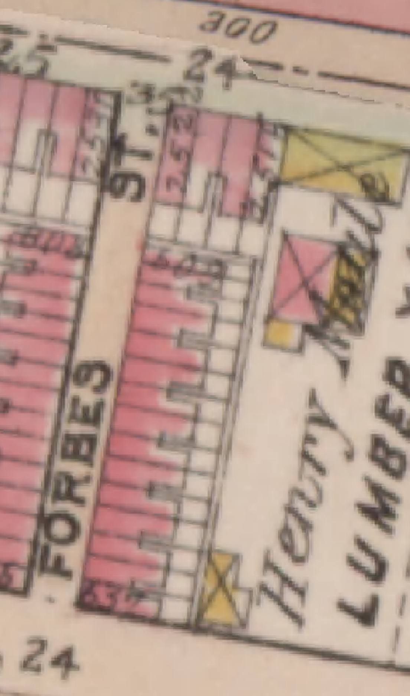
Bromley 1895, at the block. Reading east: FORBES ST., then four houses — 2522, 2520, 2518, 2516 — then Henry Maule Lumber Yard, and Twenty-fifth Street drawn as a dashed line straight through the middle of it. Platted, never opened. Which is what the sheriff was measuring from in 1884.G. W. & W. S. Bromley, via GeoHistory / Athenaeum of Philadelphia
1895 – 1896
Next door, out of work
The Inquirer carries “2520 South street” — the house sharing your east party wall — returns seven advertisements, every one of them on
page eight, every one of them inside fourteen months in 1895 and 1896. Page eight
was Situations Wanted.
MAN, 28, wants situation of [any kind; un]derstands horses and can [drive] …
son, 2520 South street. — 4 and September 7, 1895
… [gi]rl wants housework; sleep [at] home … children.
2520 South street. — April 2, 1896
A man and a young woman from one small house, advertising over and over across a year and a
quarter. This is the tail of the Panic of 1893, and it is what a depression looks like
from inside a sixteen-foot row: the household puts its members into the newspaper, one at a
time, and keeps paying for the notice.
An arithmetic that looked good, and does not survive the census.
He is 28 in September 1895, so born about 1867. In the January 1920 census
the head of household at 2520 South Street is William Johnston, 54 — born
about 1865. Same house, ages within two years, and the ending of the advertiser’s
surname reads “-son”. It looked like twenty-five years of one family next
door, and like the reason the Robinsons came to this block at all.
It is wrong, and the schedules say so.2520 South Street changed hands three times in
twenty years:
1900 — Richard Beck, born Germany 1849, harness maker, with a
boarder. 1910 — the Tourish household: Daniel, saddler in harness, and his sons. 1920 — William Johnston, gas-company inspector.
A man advertising from 2520 in 1895 is therefore very unlikely to be the Johnston of
1920: a German harness maker was living there five years later. The Johnstons did not hold
2520 for twenty-five years. They arrived somewhere between 1910 and 1920, which is also
when Kelso Robinson turns up in their household.
What survives is the smaller, better fact: a second man on this row, in 1895, advertising
that he understood horses — the car barn again, and a household putting its members
into the paper one at a time in a slump.
Philadelphia Inquirer, Situations Wanted, page 8: 4 and September 7, 1895; 2 and 30 April,
20 July, 5 September and October 22, 1896.
1897 – 1920
Twenty-three years in which nobody bought or sold this house
Every surviving volume of the Builders’ Guide from 1897 to 1920 — conveyances, mortgages, sheriff’s sales, auction results and alteration permits
— for 2516, 2518, 2520 and 2522.
Not one appearance. Twenty volumes, twenty-three years, four houses,
nothing. No sale, no mortgage, no alteration, no repair worth a permit.
Which would mean little, except that the rest of the block is noisy.
In exactly those years the Guide records, on the north side of the same block:
2525 South — $900 of additions and alterations, 1899, by William J. Smith of
1821 South Fifth; then sold, April 12, 1899, J. Keeley to A. Frascone, 17 ft × 88 ft,
$3,000 2523 South — $500 of repairs and alterations, 1902, by David A. McClelland of
517 South Twentieth; then sold, June 16, 1903, Jno. P. Butler to Wm. S. Magee 2527 and 2529 South — sold together, June 17, 1903, Tradesmen’s Trust &
Safe Deposit Co. to Geo. Davies
The houses across the street were being bought, sold and improved. The four on your side were
not.
One sale on your side, and a price
“Samuel T. Freeman & Co., sold on Wednesday, January 28,
1903… No. 2524 South street, 16 feet by 58 feet, $2650.”
Sixteen feet by fifty-eight is the corner-shop lot exactly, straight out of the 1888
schedule. So the west corner shop went under the hammer at Freeman’s auction rooms in January
1903. That gives a small price series for these houses:
Date
House
Price
1888–89
a Forbes Street house, new
about $1,300
Jan 23, 1893
2526 — from the Forbes estate
$2,000
Jan 28, 1903
2524 — at Freeman’s auction
$2,650
A South Street house was worth about half as much again as a Forbes Street one, and gained
roughly a third of its value in the decade after 1893.
What the silence probably means — and it is good news for the fabric.
Set the negative beside what the censuses show: 2518 was rented in
1900, 1910, 1920 and 1930 — Nolans, Robinsons, Hollywoods, Mary Stevenson with the Huffs
lodging. Tenanted continuously, and never once appearing in the property press.
That is the signature of a rental property held long-term by one owner who did nothing to
it. No sale to record, no mortgage to record, and — the part that matters if you live
there — no alteration permit, at a time when the neighbors across the road were
taking out $500 and $900 of work.
So the house you have is likely to be close to as-built through this whole period: three
stories, brick, two-story back building, 16 by 44 feet on a lot 15 feet 6 inches by 58 —
which is exactly what the Sanborn surveyor drew in 1918 and the paving contractor photographed in
1935.
The caution, as ever: the Guide is demonstrably incomplete, and small work never
needed a permit. An absence here is suggestive, not conclusive. But an absence across
twenty volumes, while the same columns are recording the houses opposite, is a good deal
more than an absence in one.
Philadelphia Real Estate Record and Builders’ Guide, volumes 12–35
(1897–1920), searched in full for 2516, 2518, 2520, 2522 and for South Street between
Twenty-fifth and Twenty-sixth. Free full text at the Internet Archive. August 31, 2026.
IV · The tenanted years
Forty years in which nobody who lived here owned it
June 1900
The Nolans
The first people we can put inside the house. On line 5 of sheet 19 of Enumeration
District 769, under a vertical pencil line marked South, the enumerator wrote
2518 — dwelling 187, family 196 — and beside it, six names.
Michael Nolan, head, born December 1854 in Canada, came to the United States
in 1885, naturalized, married ten years. A laborer.
Bridget Nolan, wife, born January 1849 in Ireland, arrived 1869,
mother of four.
Mary Trainor, step-daughter, 26 (b. May 1874), born New Jersey — a
school teacher, and the enumerator wrote 0 in the months-unemployed column
beside her.
James Trainor, step-son, 24 (b. June 1876) — stone cutter.
Elizabeth Trainor, step-daughter, 21 (b. May 1879) —
unemployed.
Frank Trainor, step-son, 18 (b. Jan 1882) — stone cutter.
Bridget had been married before. The four Trainor children carry their father’s name and
were born in New Jersey and Pennsylvania to Irish parents; Michael Nolan married their mother
around 1890, which is about when this house went up. A laborer, a widow, a teacher and
two stone cutters, in a rowhouse barely ten years old, with a lumber yard for a neighbor.
Two doors along at 2522 — the corner house at Bambrey — Isaac Cohen,
born Russia March 1873, arrived 1888, is listed as a grocer. Re-read at full
magnification, the row is unambiguous: 2516, 2518, 2520, 2522, 2524, dwellings 186 to
190. So both readings were right and the man moved: Cohen is at 2522 in 1900 and
2524 in 1910, one door west, across Bambrey.
The rest of the row: 2516 a roofer and a machinist; 2520Richard Beck,
born Germany 1849, a harness maker, with a boarder, Albert Warner, also a harness
maker; 2524Frank Jackody, born Hungary, an iron worker and still an alien.
Then the numbers stop and Bambrey begins at 609.
Canada, Germany, Russia, Hungary in four doorways, and Ireland in most of the households
besides. A laborer’s block, and an immigrant one.
They rented. The far-right columns — — read R for rented and H for house on line
5. The Nolans did not own 2518. Nor did their neighbors: Richard Beck at 2520 and Isaac
Cohen at 2522 are both marked R · H as well.
So in 1900 and again in 1910 this house was tenanted, and so was most of the row.
Whoever built it kept it, or sold it to someone who let it out. That makes the pre-1949 owners
a landlord question rather than a family one, and it is the registry unit book for block
005S10 — conveyances by block rather than by name — that will answer it.
Twelfth Census of the United States, 1900, Schedule No. 1 — Population. Philadelphia
City, 30th Ward, 19th Division, ED 769, sheet 19, lines 5–10. NARA microfilm
T623, roll 1472. Read from the original image.
1901
Henry’s last atlas, and a street caught mid-rename
Bromley’s Atlas of the City of Philadelphia, complete in one volume, 1901. It is
the sheet that sits in the fourteen-month gap between the will and the death, and it does two
useful things at once.
Henry Maule Lumber Yard — still lettered in his own name, in the last full year of
his life. He signed his will on February 18, 1901 and died on April 3, 1902.
And the little streets are caught mid-change. In 1895 Bromley letters them
Barnwell and Forbes. In 1910 they are Taney and Bambrey. The 1901
sheet shows the transition actually happening: the street is lettered
TANEY with (BARNWELL) printed underneath in brackets — the mapmaker’s
way of saying this is the new name, and here is the one you know it by. Bambrey, by
contrast, is already plain BAMBREY ST., with no bracket at all.
Which narrows the renaming to between 1895 and 1901, and suggests Forbes became
Bambrey first and had bedded in, while Taney was still new enough in 1901 to need the old
name alongside it.
And we now know where the name came from. Forbes Street was not an old street. It did not
exist in December 1884 — the sheriff’s advertisement runs the lot 271 feet clear
through to Bainbridge with nothing crossing it. William Forbes cut it through his own ground
in March 1888 and put his name on it. The city took the name off again within about seven
years. A builder’s monument to himself, and the shortest-lived thing he made. Twenty-fifth Street is drawn, as ever, as a dashed line straight
through the middle of the lumber yard: platted, never opened.
Also on the sheet: Coal Yard, A. J. Speese at Twenty-seventh and South; Standard Ice
Mfg. Co.; the Electric Traction Co. by the river; and, east of the paper street,
John E. Carter, Chemical Works.
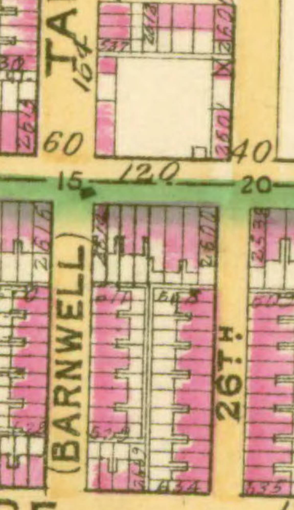
Bromley 1901 — a renaming caught in the act. The street is lettered TANEY with (BARNWELL) in brackets beneath: the mapmaker’s way of saying this is the new name, and here is the one you know it by.G. W. & W. S. Bromley, via GeoHistory / Free Library of Philadelphia
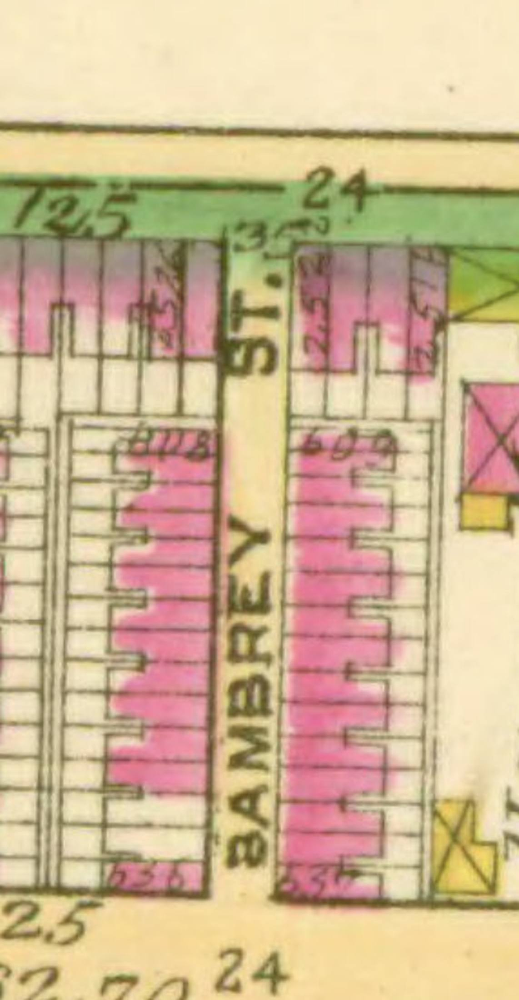
And Bambrey, on the same sheet, with no bracket at all. Which suggests Forbes changed first and had bedded in, while Taney was still new in 1901.G. W. & W. S. Bromley, via GeoHistory / Free Library of Philadelphia
February 18, 1901
The will itself — a brother, a friend, and a clause about his sons
The estate file yields the document behind it. Two copies survive, the loose original and the
Will Book entry, and between them the text reads clean. It opens:
Be it remembered that I, Henry Maule of the City of Philadelphia,
Lumber Merchant, being of sound and disposing mind, memory and understanding, do make and
publish the following as and for my Last Will and Testament…
He signed it on February 18, 1901. He died fourteen months later.
First, where he meant to be buried.I give devise and bequeath unto my son Charles P. Maule absolutely
my burial lot in Woodland Cemetery, Philadelphia.
Woodland, in West Philadelphia, is still there and still keeps its records.
Then his brother, who owed him money.
Twenty-five dollars a month for life to Joseph Eves Maule — the leather merchant of
151 Margaretta in Boyd’s directory — with a fund set apart out of the principal to
secure it, and this attached:
… such sums of Twenty-five Dollars per month are to be paid to my
brother and are not to be the subject of any attachment for any debt, judgment or claim he
now has or may have against him … I do further forgive unto my said brother Joseph
Eves Maule any indebtedness by him to me, and do hereby cancel and annul the same.
That is a spendthrift trust. Henry was arranging things so that his brother’s creditors
could not reach the money, and forgiving what the brother already owed him. On Joseph’s
death the fund was to go to the two sons.
Then Cordelia.I give and bequeath unto my friend Cordelia V. Frey the sum of
Ten Thousand Dollars ($10,000) … to be paid by my Executors within five years from
the date of my death, and pending the payment of the same there shall be paid to the said
Cordelia V. Frey five per centum per annum upon such sum.
Ten thousand dollars in 1901, to a woman described only as his friend. His partnership interest
in his own firm was appraised at $8,210.99. He left her more than the business was worth.
His wife in the 1884 deeds is Ella V. Maule; she is nowhere in the will, so she had
predeceased him.
And then the clause that tells you he expected a fight.
The residue goes equally to William Henry and Charles P. — but:
… provided however that any and all devises, bequests and legacies
herein made unto my said two sons shall be void in the event that either of them make any
objection to or contest respecting the validity of this my will … I direct that any
and all sums of money and any property bequeathed and devised to the one so objecting or
contesting shall be paid absolutely unto the Presbyterian Hospital of Philadelphia and to
their successors forever. And further … the appointment herein made of my said son as
Executor of this Will shall be void.
Men do not write that clause idly. He had left a large sum to a woman outside the family, and he
wrote in a penalty severe enough that neither son could afford to say a word about it. As far as
the file shows, neither ever did.
One line that decided the next fifty years of the block.
He gave his executors full power to sell his real estate — and then fenced it:
… any sale or sales of real estate shall not however be made so
as to conflict with the partnership agreement entered into between myself and my son
Charles P. Maule in the business conducted under the name of Henry Maule.
The yard was not to be sold out from under the firm. And it was not. On September 23, 1902 the
executors leased 2500 South Street to Charles for ten years; the atlas of 1910 letters it
Chas. Maule Lumber; the WPA surveyor still writes LUMBER YARD across it in 1942.
Charles held that ground until he died in 1950 — and it is only after that
that the yard becomes a milk depot, and then a school.
Executors and trustees: the Merchants Trust Company of Philadelphia and
Charles P. Maule.
Last Will and Testament of Henry Maule, February 18, 1901 — Philadelphia Register of Wills,
1902; original and Will Book copy. FamilySearch full-text, arks 3:1:S3HT-DWT7-GW7 and
3:1:3Q9M-C9B2-XCBD. Spelling and pointing normalized from a machine transcript of a clerk’s
hand; the transcript renders the surname variously as Maule, Maull, Marle and Mance.
April 3, 1902
Henry Maule’s estate, and the thing he did not own
FamilySearch has begun running machine transcription across its filmed record books, and two
collections that matter enormously here are now searchable by their actual words:
Philadelphia Deed Books and the Philadelphia Register of Wills. Not indexes of names — the text of the documents. Henry Maule and South Street appear together in fourteen of them, and two come from the estate file of the man who owned the ground your house
stands on.
A deposition, filed with the Register of Wills.
That Decedent left no personal estate whatever other than his
interests in the firm of Henry Maule, and the only real estate owned by him was premises
2500 South Street, Philadelphia, encumbered by two bonds and mortgages aggregating the sum
of $17,000. That said real estate was occupied by the firm of Henry Maule for the
purposes of its business and was leased to it by the Decedent for a period of ten years from
July 1, 1898, at an annual rental of $790 per annum. That on
September 23, 1902, the date of forming the Limited Partnership aforesaid, the Executors
of the Estate of Henry Maule leased the said premises to deponent for the term of ten years
from said date, at the annual rental of $790 together with all taxes and water rent levied or
assessed against said premises during said term … That the said rental of $790 is the
exact amount required to pay interest on the mortgages.
Read that again: the only real estate he owned was the yard.
In 1888 the whole south side of this block between 25th and 26th was one undivided parcel
marked LUMBER YARD. Your house went up on the western end of it in 1889 or 1890. And by
April 1902, Henry Maule — the man whose ground it was — owned no houses at
all. Not yours, not 2516, not 2520, not 2522.
So the lots were sold off, not retained and let. Somebody bought them from Maule,
somebody built four houses on them, and by 1892 Bridget Nolan was keeping a boarding house in
one. The transaction we have been hunting is a sale, and it happened between Baist’s
survey in 1888 and Henry Maule’s death in 1902 — almost certainly in 1889.
And here is why he sold.
The yard carried $17,000 of mortgages. He leased it to his own firm for $790 a
year — which the deposition says outright was the exact amount required to pay
the interest. Not a profit. A wash. And he died leaving
no personal estate whatever.
A lumber merchant that heavily mortgaged, whose rent from his own yard exactly covers his own
interest, has an obvious reason to cut the far end of the yard into building lots and sell
them. That is a motive, and it is dated.
The lawyer’s letter, March 12, 1903.
Written from offices at 22 Bourse Building to Jacob Singer, Esq., Register of Wills,
about the collateral inheritance tax:
What the letter says
Why it matters
“Mr. Maule died on April 3, 1902”
An exact date for a man otherwise known only as “1828–1902.”
He directed his Executors to pay his brother, Joseph E. Maule,
$25 per month during his life
Joseph E. Maule appears in Boyd’s 1895 as a leather merchant at 151
Margaretta. A brother kept on an allowance.
To his friend Cordelia V. Frey, the sum of $10,000, payable
within five years, with 5 percent per annum pending payment
More than his entire partnership interest was worth. The word the lawyer chose
is “friend.” His wife in the 1884 deeds is Ella V.
The rest divided equally between his two sons William Henry Maule
and Charles P. Maule
The seedsman and the lumberman, exactly as the family history has it.
Executors: the Merchants Trust Company and Charles P. Maule
—
“Mr. Maule’s entire estate consists of his interest in the
firm of Henry Maule, composed of his son Charles P. Maule and himself, which
interest has been appraised at the sum of $8,210.99, and premises No. 2500 South
Street, used as a lumber yard by the firm.”
This is why the 1910 atlas letters the yard Chas. Maule Lumber. Charles
was already his father’s partner; on September 23, 1902 the executors leased him the
yard for ten years and a limited partnership was formed the same day. He held that ground
until he died in 1950.
What this does not yet give us.
The name of the man who bought the lots. Maule and Bambrey occur together in only three documents — two directories and a grantor index
for 1873–78. Either the 1889 conveyance has not been transcribed yet, or it describes the
lot without naming Bambrey Street. The estate file itself runs to 319 pages, of which two
have been read.
Philadelphia Register of Wills, estate of Henry Maule, 1902 — deposition and
counsel’s letter of March 12, 1903. FamilySearch full-text, arks 3:1:S3HT-DWT7-GJ4 and
3:1:S3HT-DWT7-G6C; images provided by the City of Philadelphia Register of Wills Office.
Directory entry for Maule Brother & Co. from Philadelphia city directories
1876–78, same corpus.
October 1906
Bessie
The Inquirer abbreviated addresses as often as it spelled them out, so the paper carries her under “2518 South st”, not “South street.” There is a death notice.
ROBINSON — Suddenly, on Oct[ober] … ELIZABETH, daughter of Thomas H.
Robinson, aged 3 years and 7 months. Relatives and friends invited to attend the funeral,
on Thursday, at 2 P.M., from her residence, 2518 South st. Interment
Moriah Cemetery.
Thomas H. Robinson is the wallpaper printer who heads this household in the 1910 census. Four
years before that schedule was taken, his daughter died — and in 1910 the enumerator
recorded his wife Jennie as having borne four children, two living.
This is one of the two.
What it adds, plainly. It puts the Robinsons in the house by 1906, four
years earlier than we could reach before. It gives a name to a figure who until now existed only
as a number in a fertility column. And it records that on a Thursday afternoon in October 1906 a
funeral left this house through the front door, for Mount Moriah Cemetery in southwest
Philadelphia — which is still there, and whose burial records survive.
Elizabeth was born about March 1903. Her sister Jennie P., five years old in the
1910 census, was born about 1905 — so Elizabeth was the elder, and Jennie would have been
about eighteen months old when it happened.
Found. Certificate no. 93428 — and it is not what the notice suggested.
The Pennsylvania State Archives holds it. The form is headed
“Record of a Death in Philadelphia.” The line beneath it reads
CORONERS’ CERTIFICATE.
Name of deceased, Elizabeth Robinson · Color, W · Sex, F ·
Single, S
Date of Death, Year 1906 · Month 10 · Day 8 ·
Age, Years 3 · Months 6
Place of Death, 25th & South Sts.
Chief Cause of Death, “Injuries acc’d’ly rec’d — run over by
trolley car”
Hour of Death, 12.20 P.M.
She was not taken ill. She was run over by a trolley car on a Monday afternoon, and she
died where she fell. The Inquirer’s “Suddenly” was doing a great
deal of work — and the same paper had already told the whole story on its
front page the day before the notice ran.
“Child Crushed to Death under a Speeding Car.” Philadelphia Inquirer, Tuesday October 9, 1906, page 1, continued on page 3.
Sub-heading: Victim Was on Her Way to Buy Candy When Struck by Trolley. Crew Under
Arrest.
The story calls her Bessie. That is the name her family used.
What the Inquirer reported, in substance: another child had been added to the trolley
cars’ long list — Bessie Robinson, three and a half, crushed to death
in front of her home, 2518 South street. She was the sixth child killed by cars in
the lower part of the city inside a month, besides several adults, and Coroner
Jermon said he would make a rigid investigation. Witnesses and neighbors put the killing
down to the car running down the steep grade from Twenty-fourth and South to Twenty-seventh
Street.
And then the detail that is almost unbearable to read a hundred and twenty years later. She had
got up only a few minutes before. Her mother — Mrs. Thomas Robinson — had
dressed her and given her a penny to buy sweets. She was running across South Street to a
little store opposite the house when the car came down the hill at speed. Neighbors standing
on the pavement saw her, screamed, and turned their heads away rather than watch. Women who did
see it fainted.
To lift the body out they had to jack the car nearly two feet off the rails. Policeman
Mehrman arrested Motorman Townsend and Conductor Harry Knight; they were locked
up, taken before Magistrate Mackin, and committed to await the Coroner. Jermon said he
would hold them in $1,000 bail each for the inquest, and assign a deputy to determine
whether the cars were running down that grade faster than they should.
One discrepancy, stated plainly. The death certificate gives the place of
death as 25th & South Sts.; the Inquirer says in front of her home. 2518 sits
mid-block between 25th and 26th. The paper was written from witnesses on the pavement and is
the more specific of the two; the coroner’s clerk may simply have written the nearest
corner. Both are recorded here rather than reconciled.
And the tracks were the ones outside the door.
The Lombard and South Street Passenger Railway kept its car houses and stable
directly across the road, filling the north side of this block from Twenty-fifth Street
west — Hexamer surveyed them in 1882 at 179 horses and 80 cars. By 1906 the line
was electrified, but it ran the same rails down the same street, and the cars still swung in
and out of the same gates opposite.
That corner is the one on her certificate. The coroner wrote the place of death as
25th & South Sts. — the depot corner.
The depot is why the first tenants of this house were a horsecar conductor and a household of
drivers. It is why Bridget Nolan could fill the rooms. The streetcar line is the reason 2518
South Street had anybody in it at all — and on a Monday in October 1906 one of its
cars killed a three-year-old from this house, in the road outside the front door, on an errand
that was one penny long.
The Undertaker’s Certificate — the lower half of the sheet.
Place of Birth, Phila. · Birthplace of father, Phila. ·
Birthplace of Mother, Phila.
Name of Father, Thomas Robinson
Maiden name of mother, Jennie H. Johnston
Residence, 2518 South St · Ward, 30th
Buried from (Street and Number), 2518 South St
Date of Burial, Oct. 11th 1906
Place of Burial, Mount Moriah
Undertaker, Wm. H. Logue (so read; the hand is cursive), 2410 Lombard St
Every open question in the notice is now closed. Buried from 2518 South Street —
the funeral did leave through this front door, on Thursday October 11, 1906, exactly as
the paper said. Mount Moriah, confirmed. And the undertaker was
William H. Logue of 2410 Lombard Street, a mile up the road — a firm that will
turn up at this address again in 1973.
The certificate also confirms two things this project had worked out on its own: the house sits
in the 30th Ward, and the Robinsons were Philadelphians on both sides —
father, mother and child all born in the city.
And her mother’s maiden name solves something else entirely.Jennie H. Johnston.
In the 1920 census, next door at 2520, the head of household is William
Johnston, 54, an inspector for the gas company — and living with him is a
Robinson nephew, aged 11, whom the 1930 schedule names in full as Kelso Robinson.
He was not a lodger. He was with his mother’s family. Jennie Robinson was born a
Johnston, and William Johnston at 2520 was her kin — which is exactly why the enumerator
wrote nephew. The boy born in this house in 1909 was still on this row in 1930,
one door west, in his uncle’s house.
Two adjacent houses, one family. And Elizabeth — the sister he never knew, who died three
years before he was born — is the reason we can prove it.
She is not on Find a Grave. Mount Moriah has four Robinsons who died in 1906 — Alexander S., aged 10; an unnamed infant; Teressa May, one day old;
and a Thomas, one month. No Elizabeth. That is not evidence she is not there. Find a
Grave is built by volunteers photographing stones, and Mount Moriah holds an estimated
200,000 burials across 200 acres with no complete index. A three-year-old in a
lodging-house family may never have had a stone at all.
Philadelphia Inquirer, October 9, 1906, Vol. 155, Issue 101, pages [1] and 3,
“Child Crushed to Death under a Speeding Car. Little Girl Run down on Steep Grade”
— Philadelphia Inquirer, October 10, 1906, Vol. 155, Issue 102, page 7, Death Notices. —
Pennsylvania (State). Death Certificates, 1906–1968, certificate no. 93428
(coroner’s no. 25035), Record Group 11, Pennsylvania Historical and Museum Commission,
Harrisburg; certificate range 091961–095060, image 2156 of 5199.
June 5, 1908
The boy’s full name
The 1910 enumerator wrote Kelso A. P. Robinson, son, 1. Two Philadelphia birth
registers give him properly:
Kelso Alexander Johnston Robinson
Born June 5, 1908, Philadelphia · parents Thomas Robinson and
Jennie H. Johnston
So the middle initials are A. J., not A. P., and they stand for
Alexander Johnston. The boy carried his mother’s maiden name in his own.
Twelve years later the 1920 enumerator would find him next door at 2520 in the household of
William Johnston and write nephew beside him. The name was telling us where he
would end up.
He was also born in June 1908, not 1909 — twenty-one months old, not one year,
when the census called at this house in April 1910. Born, that is, twenty months after his
sister was killed in the road outside.
And the fourth child is not findable.
The 1910 schedule records Jennie Robinson as mother of four children, two living. The
two living are Jennie P. (born about 1905) and Kelso. One of the two dead is
Bessie. The fourth child leaves no trace in Philadelphia’s birth register for 1860–1915 or its death certificates for 1803–1915, under either parent’s name. The whole of Thomas and Jennie’s
documented family comes to three records: Kelso’s birth, twice, and
Elizabeth’s death.
The likeliest explanation is the ordinary one — an infant who died young, registered
without the parents’ names attached, or entered simply as “Robinson”
with no forename at all. There were four such unnamed Robinson infants at Mount Moriah in 1906
alone. The fourth child of this house has a number in a census column and nothing else.
Pennsylvania, Births and Christenings, 1709–1950 and Pennsylvania,
Philadelphia, City Births, 1860–1915, both indexed at FamilySearch.
September 1909 – February 1910
The scaffold at Seventeenth Street
James Tourish was a tin roofer, and he lived at 2516 South Street, next
door east of this house. In September 1909 he was working on a building at
23 South Seventeenth Street, near Filbert, when the scaffold gave way. He fell,
and the fall fractured his spine.
He spent four months in Hahnemann Hospital, most of it flat on a bed fitted with a
water mattress. On February 19, 1910 he was discharged. The Inquirer put it on
page one the next morning, under a headline of pure optimism:
Operation Successful for Fractured Spine Man Leaves Hospital Practically Cured After Four Months’ Treatment
He did not go home alone. He was taken out of the hospital by his fiancée,
Sarah Cuthbertson, who the paper says had been a constant attendant through the
whole of his illness.
Why this is here. This is not your house. But it is a house whose front wall
touches the row your house stands in, and the man in that bed was a neighbor of the Robinsons
— who were living at 2518 in exactly these months, three years after burying Bessie.
Two doors apart, on the same pavement, in the same winter.
The wrinkle, and how it now resolves. Both newspaper accounts put James Tourish at
2516; the 1910 census, taken six weeks after his discharge, appeared to put the Tourish
household at 2520.
The newspapers win. Three independent printed items — February 1910, June 1915 and
the casualty list of February 1919 — all give 2516. And 2520 is otherwise
accounted for: Richard Beck, harness maker, in 1900, and William Johnston, gas
inspector, in 1920. My reading of the census house numbers was almost certainly out by one
door. The Tourishes were at 2516.
Philadelphia Inquirer, February 20, 1910, Vol. 162, Issue 51, page [1].
1910
Maule’s yard, and a city of horses ending
Bromley labels the yard next door Chas. Maule Lumber — the same family firm
as 1876, thirty-four years on. (The middle initial is hard to read in the atlas script; the
Maule genealogy gives him as Charles Price Maule, 1867–1950, the son who took the
lumber while his brother took the seeds — see The Maules, above.) Across the street the horsecar barn is now the
Philadelphia Rapid Transit Co. car house. Nearby: Standard Ice, Black
Diamond Coal, the N.Y. Pie Bakery, John E. Carter Chemical Works, and the
University Settlement Club at 26th & Lombard.
The Nolans are gone. Michael Nolan is in Ward 40 by 1910, across the city — identifiable beyond doubt because his stepson
James J. Trainor is still in the household. Richard Beck, the harness maker at
2520, does not appear anywhere in Philadelphia in 1910; the trade was dying with the horses.
Ten years had emptied the row.
One name holds. On sheet 18 of Enumeration District 712 the enumerator writes 2524
and beside it Isaac Cohen — no longer just “grocer” but
retail merchant, groceries — with Ella and now six children: Albert, William,
Edith, Louise, Charles and Blanche, and his father Mendel, aged 68, in the house.
Twenty-two years after landing from Russia.
The 2500 block runs 2532, 2530, 2528, 2526, 2524 on that sheet, and then the enumerator
turns down Bambrey and the numbers stop. All twenty-eight sheets of ED 712 have now been
read, and 2516, 2518, 2520 and 2522 are not in any of them.
That statement is wrong, and it is left standing on purpose. It was my
conclusion at the time. The house is in ED 712 — sheet 22, line 95
— and the last paragraph of this entry is how it was found. Everything between here and
there is the reasoning that failed.
That is a finding rather than a failure. The district covers South Street from 2524 westward
and again in the 2200 and 2300 blocks, along with Bambrey and Taney behind — but the
four houses between Maule’s yard and Bambrey were written up somewhere else — or
not at all.
South Street is the ward boundary, 7th to the north and 30th to the south, so the
obvious suspect was the district facing the block. That is ED 113 — Ward 7,
Division 25, bounded by Lombard, 24th, South and the Schuylkill, roll T624_1389 — and it
has been read too. It runs the odd numbers up the north side: 2511, 2517, 2519, 2521,
2531, 2533. Those are the houses in your 1963 photograph, the ones your front windows face.
No even numbers anywhere in it.
Both districts that touch this block have been read end to end, and it is easy to get wrong twice over — first by placing the house on the wrong sheet, then concluding no record
existed. Karen found it. Sheet 22, line 95.
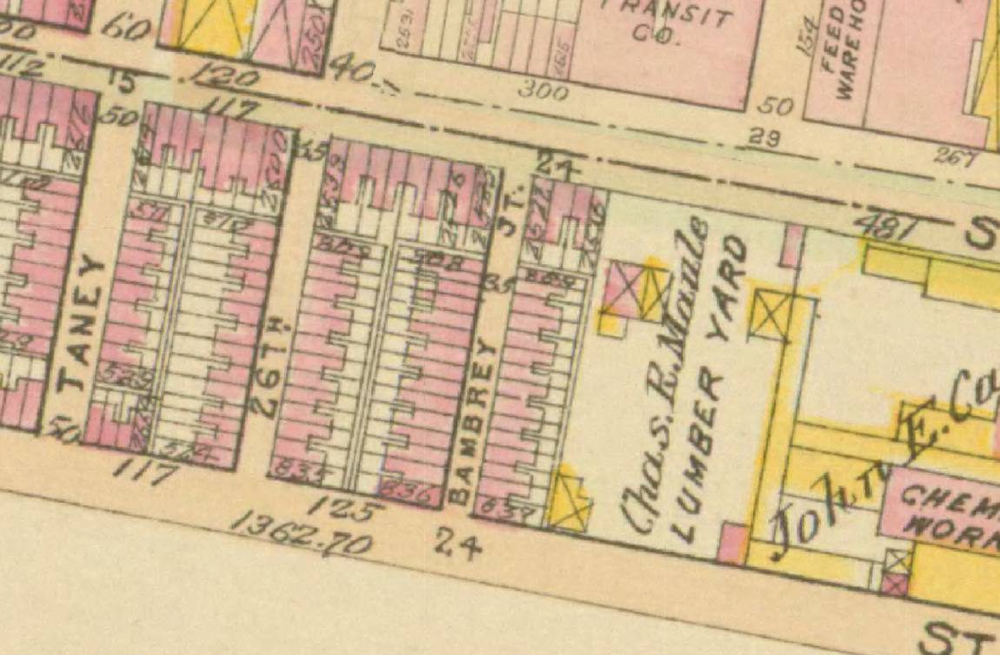
Bromley 1910. The yard is now lettered Chas. R. Maule Lumber Yard — the son, eight years after his father’s death. Barnwell has become TANEY and Forbes has become BAMBREY. (The R is Bromley’s error; the Sanborn and the man’s own sign both say P.)G. W. & W. S. Bromley, via GeoHistory / Athenaeum of Philadelphia
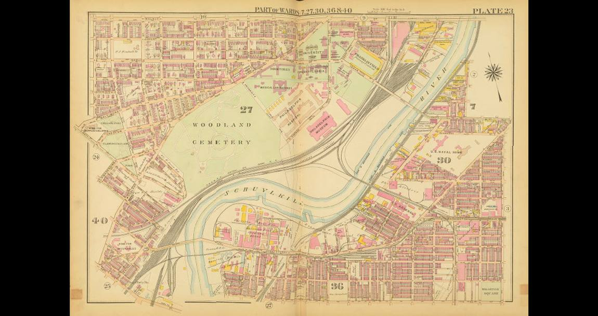
Plate 23 entire — Part of Wards 7, 27, 30, 36 & 40. The first sheet to put both sides of South Street on one page. And at its center, Woodland Cemetery — the burial lot Henry left to Charles by name in the will of 1901. One sheet holds both his grave and his yard.G. W. & W. S. Bromley, via GeoHistory / Athenaeum of Philadelphia
April 1910
The Robinsons, and two boarders
At the very foot of the sheet — the last household written before the enumerator ran out
of lines — stands 2518, dwelling 207, family 215.
Thomas Robinson, head, 36, born Pennsylvania of a Pennsylvania father,
married once, eight years. Occupation: printer; industry:
wall paper.
Jennie H. Robinson, wife, 26 — ten years younger than her husband,
born Pennsylvania to Irish parents. The fertility columns read four children
born, two living.
Jennie P. Robinson, daughter, 5.
Kelso A. P. Robinson, son, 1.
Michael Gardner, boarder, 41, single — laborer.
William Mack, boarder, 37, single — laborer.
Six people in a fifteen-and-a-half-foot house: a young family with two small children, two
lodgers paying their way, and two children already buried. Everyone in the household was born
in Pennsylvania — a generation on from the Canada, Germany, Russia and Hungary of 1900.
Next door at 2520 the Toureah household — the surname is more likely Tourish;
see 1919 — ran to at least four children: Daniel Jr. 22,
William 20, Mary 17 and John 13.
And the tenure columns, which we could not read for 1900, are plain here: R for rented,
H for house. The Robinsons did not own 2518. One earner — a wallpaper
printer — two laboring lodgers to help with the rent, and a landlord we still cannot
name.
Next door the trade held. In 1900, 2520 was Richard Beck, harness maker. In 1910 it is
Daniel Toureah (Tourish), saddler, harness — a different man in the same house at the same
bench, in the decade the horses were going. His sons had already moved on: James a roofer in
tin and slag, Thomas a telephone inspector, Daniel Jr. a clothing salesman, William a butcher,
Mary a weaver in a mill.
Why the Robinsons are easy to miss. There are twenty-eight sheets in this district, the eye goes to the top and middle of each, and 2518 is the last entry on sheet 22. It is also easy to misread the house numbers on a neighboring
sheet as 23xx, decided the four houses were absent from both districts, and wrote that the
enumerator had skipped them. Two wrong conclusions, both stated with more confidence than the
evidence carried. The record was there the whole time.
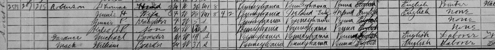
April 1910 · ED 712, sheet 11B.2518 opens the run, and it is the last entry on the sheet: Robinson, Thomas — Head, a printer in wall paper, with Jennie H., Jennie P., Kelso aged one, and two laborers boarding. U.S. Census, NARA microfilm via FamilySearch
Thirteenth Census of the United States, 1910 — Population. Philadelphia City,
Ward 30, ED 712, sheet 22, lines 95–100. NARA microfilm T624, roll 1400.
Open the sheet →
(FamilySearch sign-in required.)
September 3, 1913
The seed king dies in New York
The elder son — the one who took the catalog and not the lumber. From the probate
petition, filed with Daniel Stewart, Jr., Register of Wills for the County of
Montgomery:
… the Executors named in the last Will and Testament & codicil of
William Henry Maule, dated the 22d March 1910 and the 11th day of November
1911 … said William Henry Maule was a resident of the County of Montgomery, and State
of Pennsylvania, and died in the City of New York … on Wednesday the
Third day of September A.D. 1913. The said testator was possessed of personal property
and real estate; said real estate situated in the County of Philadelphia and in the State of
New Jersey.
He was fifty-five. In 1895 the directory had him at
seeds, 1711 Filbert, h Villa Nova; by 1913 he was a Montgomery County man with land in
two states, and he died away from home. The executors were his brother Charles P. Maule
and Edward C. Dungan; a third named man, Henry S. Cattell, renounced.
Which leaves Charles alone: father dead in 1902, brother dead in 1913, holding the
lumber yard across from your house for another thirty-seven years.
Petition for probate, estate of William Henry Maule, 1914 — Philadelphia Register of Wills.
FamilySearch full-text, ark 3:1:3QSQ-G9Q6-J1HJ.
June 11, 1915
Six years in a rolling chair
He was not cured. He never walked again.
For six years James Tourish was in bed or in a rolling chair at 2516 South Street. The
Inquirer’s account says the physicians never held out hope from the first, and that
he himself never doubted he would get well. It says he was the most cheerful person
in the house, and greeted his friends with a smile. Two weeks before the end his condition
turned, and for the first time he seemed to understand that he would not recover, and became
morose.
He died at noon on Friday June 11, 1915, aged thirty-four, just as the
Angelus was ringing in the tower of St. Anthony’s, a few blocks away.
The Inquirer gave it the front page:
Victim of Broken Back Dies After 6-Year Fight Tinroofer Succumbs to Accident Despite Cheerful Struggle
And the detail the paper saved for last.
At the time of the accident he was engaged to be married. The wedding was set for
December 1909. When he understood how badly he was hurt, he released his
fiancée from the engagement.
She is named in the 1910 story: Sarah Cuthbertson — the woman who sat with him
through four months at Hahnemann and wheeled him out of it. The order of events in the two
accounts does not quite line up: in February 1910 the paper still calls her his
fiancée, so the release came after that, not in 1909. Both versions are printed here as
the paper printed them.
The mortuary notices ran on the 12th and 14th of June, naming him
James F., son of Daniel and Margaret C. Tourish, with the funeral from his late
residence. His brother William appears on an army casualty list from the same row four
years later.
Philadelphia Inquirer, June 13, 1915, Vol. 172, Issue 164, page [1] — with
mortuary notices 12 June (Vol. 172, Issue 163, p16) and June 14, 1915 (Issue 165, p14).
1917
The best-drawn map of this block
Elvino V. Smith, C.E., 512–14 Walnut Street: Atlas of the 2nd, 3rd, 4th & 30th
Wards of the City of Philadelphia, 1917. Plate 17, lettered PART OF WARD 30. Eighteen
plates, engraved by Albert Volk, printed by Theo. Leonhardt & Son, from the Athenaeum.
Scale: 80 feet to an inch. That is twice Bromley’s 1922 and nearly four times his
1910. Nobody drew this block better, before or since.
The four houses are drawn as four separate lots east of Bambrey, and each one carries the
figure 3 — three stories. A year later the Sanborn surveyor writes the same thing, and
eighteen years after that a paving photographer takes a picture of it. The yard beside them is
lettered Charles B. Maule — Lumber Yard, and the block east of the yard is
Samuel S. Thornton & Lawrence E. Fuller, AUTOMOBILES — the full names behind
the firm that appears simply as “Thornton Fuller” on later sheets, on the ground
that was John E. Carter’s chemical works in 1895.
And there is still no Twenty-fifth Street. The yard runs from the east wall of 2516
straight through to Thornton & Fuller with no street between. Thirty-three years after a
sheriff measured this parcel as beginning “101 feet west of Twenty-fifth street,”
Twenty-fifth Street south of South Street still did not exist on the ground. That measurement
was taken from a line on a plan for the whole working life of the yard.
This atlas does not come up in the GeoHistory address search, which is why it went unfound for
so long: the finding aid is built around the same wards the atlases were.
Volume index EVS1917.PhilaWards2_3_4_30; the sheet number is always the plate
number plus three, so Plate 17 is image 020.
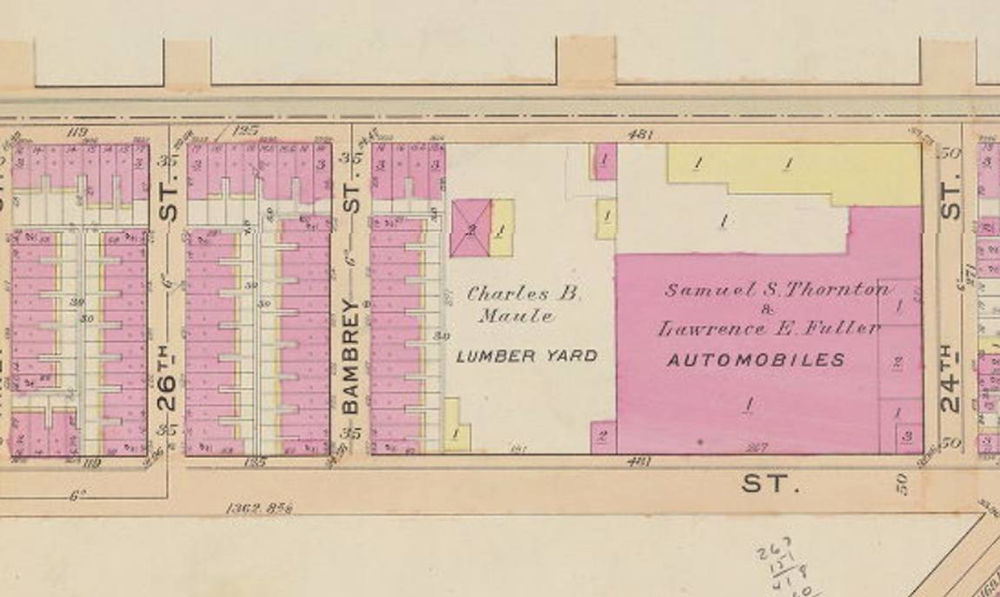
Elvino V. Smith, 1917, Plate 17 — at the block. Four separate lots east of Bambrey, each marked 3 for three stories. Then Charles B. Maule — Lumber Yard, and beyond it Samuel S. Thornton & Lawrence E. Fuller, AUTOMOBILES. And still no Twenty-fifth Street between them.Elvino V. Smith, C.E., via GeoHistory / Athenaeum of Philadelphia
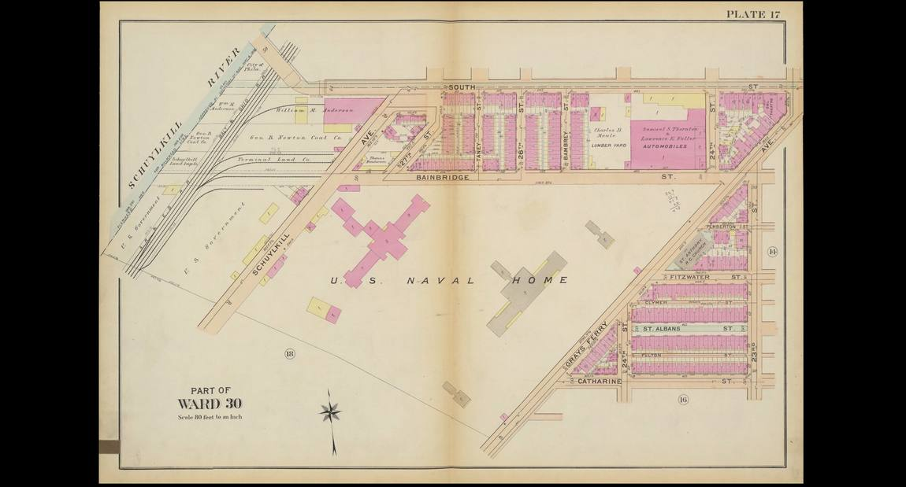
Plate 17 entire — PART OF WARD 30, scale 80 feet to an inch. Twice the scale of Bromley 1922 and nearly four times his 1910. The U.S. Naval Home fills the center; the strip along South Street at the top is this block.Elvino V. Smith, C.E., via GeoHistory / Athenaeum of Philadelphia
1918
The house, described
Sanborn bought Hexamer in 1915, and for the first time a fire-insurance surveyor crosses
South Street. Volume 6, Sheet 503, 30th Ward. The numbers are printed along the
frontage — 2522, 2520, 2518, 2516 — each pink for brick, marked
3 for stories and D for dwelling, with a two-story rear ell and the 3-foot
alley closing the back. 2522, on the corner, is marked “S.” for store.
Sanborn Fire Insurance Map, Vol. 6, Sheet 503, 1918. Left, the houses, numbered, with
S. Bambrey and its own row at 609–637. Center, CHAS. P. MAULE — “avge.
750,000 ft. lumber on hand, fire pails dist’d.” Right, the Thornton-Fuller
Auto Co., night watchman on duty. Even the water mains are dated: South Street’s
6-inch pipe reads 1839 and 1846 — and Bambrey’s reads 1889.
Library of Congress — public domain.
Full volume →↓ Save detail · public domain↓ Whole sheet · ~5800px
That 1889 is worth stopping on. Sanborn dated water mains as a matter of course, and a
street does not get one until there is something on it to serve. South Street’s main went
in when the neighborhood east of here was new, in 1839. Bambrey — the little back
street your rear ell opens onto, lined with the two-story houses at 609 to 637 — waited
fifty years for its own.
So Bambrey was still dry ground in 1888, which is exactly what Baist drew, and had water by
1889, which is the year the city began issuing building permits. Two independent records, one
a fire-insurance surveyor’s note and the other an atlas, putting the same date on the same
block. Whoever built this row was working here in or just after 1889, and a permit taken
out in that year should carry his name.
Three atlas draftsmen produced three different middle initials. Bromley 1910 letters him
Chas. R. Maule. Elvino V. Smith, in 1917, letters him Charles B. Maule. The
Sanborn surveyor, in 1918, prints CHAS. P. MAULE — and the board above his own
gate, photographed in August 1935, reads CHARLES P. MAULE in foot-high letters.
The P is right. The Maule family genealogy gives him as Charles Price Maule
(1867–1950), the son who took the lumber while his brother took the seeds. When an
engraver and a man’s own signwriter disagree, back the signwriter.
February 25, 1919
A private, from this row
A casualty list in the Inquirer — “U. S. Loss 2633 with 160 Deaths.
Pennsylvania’s Casualties Total 112” — runs down the column in small
type, name by name. Between a Thomas Schmidt of Westminster Avenue and a Francis Gahan of Tulip
Street:
“TOURISH, WILLIAM, private, 2516 South street.”
Two doors from your front door. And the name is one we now know well. Daniel Tourish,
saddler in harness, headed the household in the 1910 census, with sons including James
— the tin roofer who fell from a scaffold in 1909 and spent six years dying of it
— and William, then 20 years old. By 1919 William would be about 29, and
his brother had been dead four years. The census hand I first read as
“Toureah” is certainly Tourish; the newspapers spell it plainly.
What the list does and does not say. The headline counts 160 deaths in a total
of 2,633, and Pennsylvania’s share as 112 with 13 reported dead — so most names in
these columns were wounded or missing, not killed. Nothing here tells us which William
Tourish was. That is a question for the service records, and it is answerable.
Philadelphia Inquirer, February 25, 1919, Vol. 180, Issue 56, page 3.
January 1920
The Hollywoods
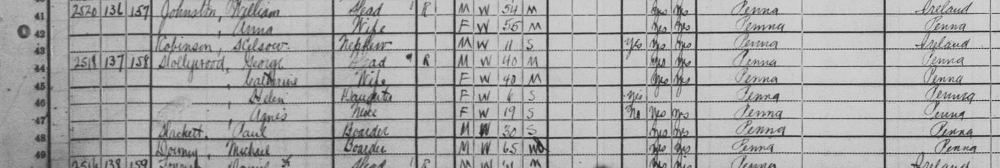
January 7, 1920 · ED 1001, sheet 5A. Line 43 is Robinson, Kelsow — Nephew, still at 2520 with the Johnstons. Line 44 opens 2518: Hollywood, George — Head, Catherine, Helen, Agnes, and two boarders. U.S. Census, NARA microfilm via FamilySearch
ED 1001, sheet 15, line 44. The numbers run down the block in order — 2528, 2526,
2524, 2522, 2520 — and then 2518, dwelling 137, family 158.
George Hollywood, head, 40 — millwright on the railroad.
Catherine Hollywood, wife, 40.
Helen Hollywood, daughter, 6.
Agnes, niece, 19 — a typist for an express company.
Paul Hackett, boarder, 30 — stockman, dental supply.
Michael Dorney, boarder, 65, widowed.
And the tenure column reads R again. Three censuses, three sets of tenants: the Nolans
in 1900, the Robinsons in 1910, the Hollywoods in 1920. Nobody has owned this house yet.
A name that has been here before. In the 1900 schedule, in the household at
2516 next door east, the enumerator wrote Hollywood, George — a young man
then. In 1920 a George Hollywood, aged 40, heads his own household at 2518. The arithmetic fits
exactly: born about 1880, twenty years old in 1900. It looks very much like the same man, grown
up and moved two doors along the row he was raised on. Consistent, not proven —
the 1900 line does not give his age.
Next door at 2520, William Johnston, 54, an inspector for the gas
company, with his wife Anna, 55 — and living with them, a Robinson nephew, aged
11. That is Kelso Robinson, the one-year-old in this house in 1910, and
“nephew” is literal: Elizabeth Robinson’s death certificate gives
her mother’s maiden name as Jennie H. Johnston. William Johnston was Kelso’s
uncle. The Robinsons at 2518 and the Johnstons at 2520 were one family across two front
doors.
And at 2516: Daniel French, 70, harness maker, harness shop. Beck in 1900,
Tourish in 1910, French in 1920 — three censuses running, there is a man making harness
within a few feet of your front door, while the horses vanish from the street outside.
At 2524, Ike Cohen is still here, twenty years after we first met him — but
no longer a grocer. He is now a butcher in retail meats, aged 45, with Ella and eight
children, his father Mendell, 70, and his mother-in-law Ida Abrams, 75, under one roof. His
eldest, Albert, 19, keeps books at the U.S. Arsenal; William, 18, and Edith, 16, work at
the shipyard.
And seven months later, somebody at this address was advertising for a hat
salesman — which does not match anyone in this household. See the next entry,
August 29, 1920.
Fourteenth Census of the United States, 1920 — Population. Philadelphia City,
Ward 30, ED 1001, sheet 15, lines 44–49. NARA microfilm T625, roll 1635.
Open the sheet →
January 10, 1920
Mary Stevens is living with her daughter’s family, and the enumerator writes “mother-in-law”
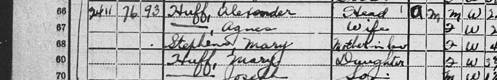
January 10, 1920 · ED 169, sheet 4B, lines 66–71. Line 68 reads “Stephens, Mary — mother-in-law”; line 71, “Stephens, John J. — brother-in-law.” U.S. Census, NARA microfilm via FamilySearch
Ward 7, Enumeration District 169, sheet 4B, enumerated by R. Leslie Hughs on
January 10, 1920 — ten years before any of these people set foot in this house, and
about half a mile east of it. House number 2411, dwelling 76, family 93. Six lines:
Mother-in-law. The enumerator had a column for the relationship of every person to the
head of the family, and against Mary he wrote it plainly. Alexander Huff’s
mother-in-law is Agnes’s mother. The question that has circled this house — whether Agnes M. Huff, who owned 2518 South Street from 1949, was the daughter of the
Mary who was head of the household here in 1930 — is answered, and answered by a record
made ten years before either woman came to this street.
And there is a brother.John J. Stephens, 19, brother-in-law, single,
living with them. Agnes and Alexander’s own son, born the year after this census, was
John J. Huff — the child named as “the late John J. Huff” in
Agnes’s 1984 death notice. He was named for his uncle.
Three spellings of one surname, and now we have all of them.STEPHENS in 1920, in a census-taker’s hand. STEVENSON in 1930, in a different
census-taker’s hand. STEVENS in the registry unit book, in the 1949 deed, and in
both Inquirer death notices. Three clerks, three spellings, one family — and the objection that “Stevens and Stevenson are not the same word” loses most of its force. They are the same word being guessed at by people who
heard it spoken in an Irish accent and wrote down what they thought they heard.
What it does not settle: whether Mary owned 2518 or rented it. That is still
two women or one, and the 1930 tenure column still says R. But the balance has moved.
A woman recorded here in 1920 with no occupation, widowed, living as a dependent in her
son-in-law’s household, is not an obvious buyer of a house four years later —
and yet by 1930 she is the head of a household of nine, taking in her own daughter’s
family as lodgers. Something changed for her between 1920 and 1930, and the deed of
December 9, 1924 sits exactly in the middle of it.
A new question, and it may be the one that ends this. Mary Stevens held
2518 South Street jointly with SARA DONAHUE, with right of survivorship — a form
two people have to choose on purpose, and the form families use.
Mary was Irish-born. Donahue is an Irish name. If Sara Donahue was Mary’s
sister, everything about that arrangement stops being strange: two Irishwomen buying a
house together and making certain that whichever of them lived longer would keep it.
This is now the cheapest test left — Mary’s death record gives her maiden
name, and Sara Donahue’s gives hers.
Two smaller things this page fixes.
Alexander Huff’s birth year, which three records disagreed about. The 1930 schedule
says 38 (so 1892); the 1940 schedule says 42 (so 1898); his death certificate says
May 18, 1896. This census says 23 in January 1920, which gives 1896 — and the
earliest record and the death certificate agree. Treat 1896 as settled.
There was an earlier Joseph. The boy on line 70 is eighteen months old in January
1920, so born about July 1918. He is not in the 1930 household, where the youngest is
a Joseph aged two, born about 1928 — the son still living with his mother in 1950.
The likeliest reading is that the first Joseph died in childhood and the name was given
again ten years later, which was ordinary practice.Inference, not a finding —
he could have been living elsewhere in 1930. A Philadelphia death record for a Joseph Huff,
1920–1928, would settle it.
Fourteenth Census of the United States, 1920 — Pennsylvania, Philadelphia, Ward 7,
ED 169, sheet 4B, lines 66–71; enumerated January 10, 1920. FamilySearch
ark:/61903/3:1:33SQ-GRJD-K67, image 1110 of 1168, Image Group Number 004968660;
NARA microfilm. The street name is written vertically in the left margin and is lost in the
scan gutter; the braces above and below this run readPanama StreetandDe Lancey Street.
August 29, 1920
Someone here was hiring
A single line in the Inquirer’s Help Wanted — Male column, page four:
SALESMAN — Young man, 18 to 20, with some experience in retail men’s hats.
Call 2518 South street.
It is the only advertisement this address ever placed, so far as the paper shows. Somebody
living here in the summer of 1920 was running or managing a men’s hat shop and
using the house as the place to come and be looked over.
It does not match the census, and that is the point. Seven months earlier the
January 1920 schedule gave this household as George Hollywood, a railroad millwright,
his wife Catherine, daughter Helen, niece Agnes (a typist), and two boarders — Paul
Hackett, dental-supply stockman, and Michael Dorney, 65. No hatter.
So either somebody in that house had a trade the enumerator never asked about, or the
household had already turned over by August. Either way it is the one moment in this
house’s recorded life when the front door was also a place of business —
a young man in a good coat knocking to ask about a job selling hats.
Philadelphia Inquirer, August 29, 1920, Vol. 183, Issue 60, page [4], Advertisement.
V · The women who owned it
1924 to 1987 — Mary Stevens, Sara Donahue, Agnes Huff
Registry unit book — the line read at full resolution
Elizabeth Forbes, Mary Stevens, Sara Donahue, Agnes Huff — the owners, in one line
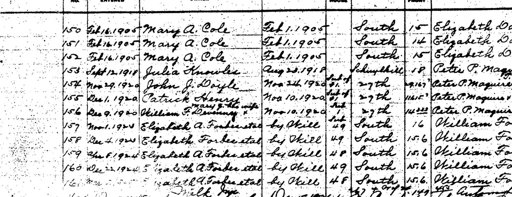
Registry unit book, block 5 S 10, line 160 — the line that carries this lot. Elizabeth A. Forbes by will; Mary Stevens, Dec 9, 1924; Mary Stevens & Sara Donahue. Philadelphia Department of Records
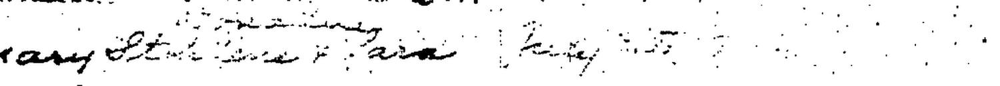
The same line, further along: Sara Donahue · by surv. · Agnes M. Huff · Nov 5 1949. The date column is empty because survivorship needs no deed.
A cleaner scan of the same page. Rows 157 to 161 are the surviving South Street houses, and they
read as a single operation:
Line
Entered
From
Front
Sold to
Date of deed
157
Nov 1, 1923
Elizabeth A. Forbes et al, by will,
from William Forbes
16 ft
William Johnston
Oct 10, 1923
158
Dec 4, 1923
″
15.6
Francis J. Marsden and Mary C. his wife
Nov 1, 1923
159
Apr 8, 1924
″
15.6
Michael N. Beatty and Ellen A. his wife
Apr 1, 1924
160
Dec 22, 1924
″
15.6
MARY STEVENS
Dec 9, 1924
161
Jan 1925
″
15.6
Dennis F. Hickey and Bridget his wife
Jan 21, 1925
Line 158 is 2516 — the house that came down.
Read at full resolution from the scan of the whole book (PhilaDox historical index, September 6, 2026),
the line beside yours carries the neighbor: 158 · Elizabeth Forbes et al, by will ·
sub of 49 · South · 15.6 · from William Forbes → Francis J. Marsden and Mary C. his wife,
Nov 1, 1923 → Harry Friedman, by sheriff, Dec 21, 193? — and then the ink fades past
reading in both scans. The continuation row for 158 on the next spread was never written. So the book
gives 2516 two owners after the Forbes estate, the second by sheriff’s sale in the 1930s, and stops.
Lines 162 and 163 are not houses. They are the yard. Both are entered sub of 10 —
subdivided from registry lot 10, the Maule lumber-yard parcel (Israel Maule, 1859 → Edward Maule,
1879 → Henry Maule, 1883 → Charles P. Maule, Oct 26, 1912 → Thornton-Fuller Automobile Co., 1949).
163 is the South Street side, 150.199 feet of front, Thornton-Fuller → Sylvan Seal Milk Inc.;
162 is the Bainbridge side, Sylvan Seal → The Borden Co., Apr 30, 1956. That dates the end of
Maule ownership of the yard to 1949, which is why the December 1950 Sanborn found it fenced and empty.
On the city’s registry map for block 005S10 the row east of Bambrey reads 121 (2522) · 157 (2520) ·
160 (2518) · 158 (2516), and the east line of 158 is drawn dashed — the convention for a lot
merged into the one beside it, which is 163, the yard. The house is gone; the lot is still drawn, fifteen feet
six inches wide.
Mary Stevens bought alone. Everyone around her bought as a couple.
Marsden and Mary C. his wife. Beatty and Ellen A. his wife. Hickey and Bridget
his wife. And then, on line 160, two words on their own: Mary Stevens.
In a column where the clerk wrote out husbands and wives at length four times over, hers is the
only name that stands by itself.
The 1888 subdivision is in this book too.
The narrow column beside the street name reads “Sub of 49” and “Sub of
48” — these lots were subdivided out of registry lots 48 and 49.
And lots 47, 48 and 49 on the first page of the same book are the March 1888 conveyances:
John M. McCurdy and Andrew Quinn to William Forbes, March 26, 1888, each annotated
“Sub. see Nos…” followed by a string of lot numbers.
The whole operation is in one volume — the parent parcels, the straw conveyances, the
thirty-eight children, and the eventual sale of each one.
Question one: “Elizabeth Forbes and who else?” — this book will never
say.
“Et al” is not a gap in the scan. It is what the clerk wrote. Registry books
record one name and abbreviate the rest, every time, by design. No amount of resolution will
expand it.
The names exist in exactly two places: William Forbes’s will, 1890, Philadelphia
Register of Wills; and the deed to Mary Stevens, December 9, 1924, which had to name every
grantor to convey good title.
Question two, answered by the continuation page:
“by surv.”
The line continues on the next spread and reads:
“160 · Sara Donahue · by
surv. · Agnes M. Huff · Nov 5, 1949.”
By survivorship.Mary Stevens never sold this house to Sara Donahue. The two of them
held it as joint tenants with right of survivorship, and when Mary Stevens died the whole of
it passed to Sara automatically.
That is why there is no date in the column. Survivorship needs no deed, so there is nothing
to date. The blank is not illegible. It was never written, because nothing was signed.
Which makes the arrangement between them a deliberate one.
Joint tenancy with survivorship is not what happens by accident. Two buyers who simply share
a house hold as tenants in common, and each half goes to that person’s own heirs. To hold
with survivorship you have to say so, in the deed, on purpose. It is the arrangement that makes
certain the survivor keeps the house outright and nobody’s family can claim a share.
Married couples on this same page hold that way as a matter of course — Marsden and his wife,
Beatty and his wife, Hickey and his wife. Mary Stevens and Sara Donahue were not a married
couple, and they chose it anyway.
What that means about them is not recorded. Sisters, in-laws, friends, business partners, two women running a boarding house together — the record does not say. What the record does say is that each of them made sure the other would not lose the
house.
Sharpened, September 2, 2026, but still not decided. Mary’s death certificate gives
her father as MICHAEL MALONEY of Ireland — so she was born Mary Maloney, and
if the two were sisters then Donahue is a married name. The best candidate for Sara
— Sarah J. Donohue, born in Ireland in 1877, died 1966 — has both parent
fields left blank on her own certificate. The test could not be run.
And it gives us a new date to find: the transfer happened on Mary Stevens’s
death, somewhere between 1924 and 1949 — the only remaining unknown in a hundred and
thirty-eight years of ownership. A Philadelphia death record would date it exactly.
ANSWERED, September 2, 2026. She died on April 27, 1949, at a quarter past five in the
morning, in this house, aged seventy-five. Death certificate file no. 37810;
the informant was her daughter, Agnes Huff, of this address. The chain of title is
complete and every transfer in it now carries a date. See the entry for that day.
The same page shows the convention twice.
Line 157 runs the identical pattern in longhand: “William Johnston and Anna his
wife… Anna A. Johnston…” followed by the word survivorship written
out. The clerk abbreviated it to “by surv.” on line 160. Two forms of the same
note, three lines apart — which is a useful check that the reading is right.
A small caution about the sheet.
The downloaded file is 5-S-10 and its contents match this block exactly — South Street,
15.6 and 16 foot frontages, former owner William Forbes. But the screen label in one capture
reads “5-S-14”, which is the neighboring sheet in the list.
Almost certainly a leftover tooltip rather than the wrong book, since the content could not
match more precisely. Noting it rather than ignoring it.
Registry unit book, block 5 S 10, lines 157–161 and page 1 lines 47–49. Philadelphia
Department of Records historical index. Read at full resolution September 1, 2026.
April 1930
How the Huffs got in
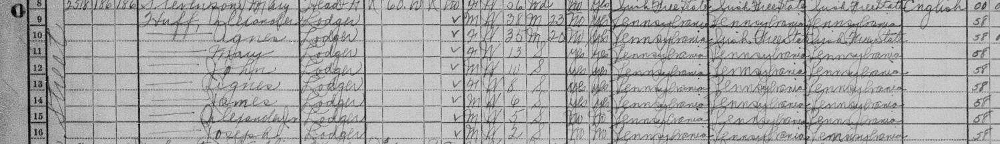
April 8, 1930 · ED 51-100, sheet 10A. Line 8: 2518, dwelling 186, family 186, Stevenson, Mary — Head, R · 60.00, aged 56, widowed. Lines 9 to 16 are the eight Huffs, and the relation column reads Lodger against every one of them. U.S. Census, NARA microfilm via FamilySearch
ED 51-100, sheet 10A, line 8. The head of household at 2518 is
Mary Stevenson, 56, a widow born in Ireland, renting at $60 a month. And
lodging with her, eight of them, is the entire family that will still hold the deed to this house
fifty-four years later.
Alexander Huff, lodger, 38, married at 23 — clerk in a grocery
store.
Agnes Huff, lodger, 35, married at 20 — dressmaker, at home.
Mary Huff, 13 · John Huff, 10 · Agnes Huff, 8 ·
James Huff, 6 · Alexander Huff Jr., 5 ·
Joseph Huff, 2.
This is the answer to a question that has been open all the way through: the Huffs did not
arrive as buyers. They arrived as lodgers, in somebody else’s rented house, with five
children under fourteen. Ten years later they own it. Nineteen years later the deed is
delivered.
What this does to the installment-sale theory. The puzzle was that the 1940
census calls the Huffs owners nine years before the 1949 deed. Lodging in 1930 makes an
installment purchase more plausible, not less — a family already living in the
house, buying it on contract during the 1930s, taking possession as owners in fact long before
the paper caught up. But it also opens a plainer possibility: that they simply took over the
tenancy from Mary Stevenson and bought later. Still an inference either way.
Next door, two things worth noting. At 2520, William Johnston the gas inspector
is no longer renting — he is an owner, house valued $7,000. And still lodging with
him is Kelso Robinson, named in full this time, which settles the 1920 reading: the boy
born at 2518 in 1909 was still on this block twenty-one years later. At 2522,
Charles McGonigle also owns, at $5,000.
So by 1930 the neighbors are buying their houses and yours is still tenanted — and the
people who will finally own it are sleeping in it as lodgers.
Fifteenth Census of the United States, 1930 — Population. Philadelphia City,
Ward 30, ED 51-100, sheet 10A, lines 8–16. NARA microfilm T626, roll 2114.
Open the record →
1930
From above, for the first time
The Dallin Aerial Survey Co. photographed the city from the air about 1930. Plate 9 of
the Philadelphia Metropolitan set — Free Library Map Collection, file
DAL1930.PhilaMetroAerials.009.jp2 — covers this ground.
Every other picture of this block is a drawing. This one is a photograph. North of the
tree-lined line of Bainbridge, at the east end of the run of rowhouse blocks, there is a large
pale open lot with dark bars across it and small dark piles at its southern end —
open ground, a long shed, and stacked timber throwing shadows in the sun. That is Charles
Maule’s yard, working, five years before the sign on its fence was photographed.
What it cannot do. The scan the viewer serves runs at roughly one pixel to three or four
feet. A fifteen-foot-six rowhouse is four pixels wide, so the row reads as a continuous dark
band with no seams in it. These four houses are physically in the frame and will not separate
at this resolution. The full-resolution original is a request to the Free Library, not a
download.
Dallin Aerial Survey, about 1930. The tree-lined street across the lower third is Bainbridge, with the Naval Home’s lawns below it. North of Bainbridge, at the east end of the run of rowhouse blocks: a pale open lot with dark bars across it and small piles at its southern end — open ground, a long shed, and stacked timber throwing shadows. The four houses are the dark band immediately west of it, and at this resolution they will not separate.Dallin Aerial Survey Co., Map Collection, Free Library of Philadelphia
1934
Graded “D”
J. M. Brewer was Metropolitan Life’s chief appraiser for Philadelphia. His block-by-block
map was taken up by the federal Home Owners’ Loan Corporation, and the scheme it
embodies governed American mortgage lending for thirty years. This is the document redlining
came out of. His Location Ratings:
A
Highest class residential
B
Upper middle class residential
C
Middle class residential
D
Lower or working class
E
Decadent
The letter beside your block is D. One block east it becomes DE. Northeast toward
Naudain it improves to C5. The solid red rectangles pressed against the house are not a
racial marking but his fifth category, Industrials — “heavy industrial of
type tending to control character of neighborhood.” One across the street, a larger one
filling the block behind your back wall: Maule’s yard and the auto works. Brewer was
marking the house down for the neighbors.
His first category is Racial Concentrations — Jewish blue, Italian green,
“Colored” red, in three intensities, with Polish, Lithuanian and German written
onto blocks as “conspicuous nationality.” That hatching sits a short way northeast,
around Lombard and Naudain.
Printed under his own legend: “All location ratings and racial
concentrations quoted are the opinion only of J. M. Brewer after careful investigation of the
location.” An opinion that decided who could borrow money to buy a house, and where.
A city survey photographer set a camera in the middle of South Street and worked west from
22nd, shooting from each corner, then turned round at 27th and shot back east.
Six frames in one morning — IDs 198703 to 198713, stepping by two — covering
your whole stretch of the street end to end. Two of them look straight down your block.
They are paving-contract photographs. Each frame carries a contract number bottom left
and a date bottom right: 35-313-8 through 35-313-13, and 8-25-35. The job
was to document the Belgian block and the trolley rails before work, which is why the road
surface fills the bottom two-thirds of every frame — and why the houses, incidentally,
got photographed at all.
Which looks like a contradiction, and isn’t. If the yard was still
standing in 1935, how was your house built on it in the 1890s? The 1918 Sanborn answers it in
one glance: the yard and your row shared the block. Maule held the eastern two-thirds,
from his office at 2500 on the 25th Street corner west through the sheds and lumber
piles as far as 2514. Your four houses — 2516, 2518, 2520, 2522 —
stood at the far, western end, against Bambrey, with the street picking up again at 2524 on
Bambrey’s other side.
So the photographer at 25th had the hoarding directly beside him and your row three hundred
feet off, at the end of the same pavement. The construction window holds.
Department of Records, Public Works contract 35-313, photographed by
Wenzel J. Hess on August 25, 1935, a Sunday — which is why the street is
empty. PhillyHistory asset 15062 (35-313-10, at Twenty-fourth), 15063
(35-313-11, at Twenty-fifth) and 15064 (35-313-12, at Twenty-sixth). The contract
number and the date are lettered into the lower corners of each negative.
Sharper copies of these two are in the narrative. The versions above are enlargements
made before the native frames were pulled; 2518-the-block.html carries them at the
resolution PhillyHistory actually serves, and is the image of record throughout.
1935 & 1968
The house is in two photographs, at the wrong end of the lens
There is no photograph of this house before 1990 — or so it looked. There are two, and the 1918 Sanborn is what makes them legible.
Once you know the yard ran 2500 to 2514 and your four houses stood at the far, western
end against Bambrey, the August 25, 1935 frame taken at 25th and looking west resolves
into something quite different from a picture of a hoarding. The Maule fence occupies the near
left because it is nearest the camera. Keep going down that same left-hand pavement, past the
lumber piles, and the brickwork at the end of the block is your row. The frame shot back
east from 27th does the same thing from the opposite direction.
So the house is photographed in 1935. It is small, it is distant, and it is at the wrong end of
the lens — but it is there, and it is fifty-five years earlier than the
“before 1990” this entry used to ask for.
Add to that the two 1968 streetscapes from the Historical Commission run —
2400 block, facing west and West from 24th — which take in both sides of
the street rather than the north side alone. Those look straight toward your block.
What is still genuinely missing is a close frontal view: 2518 filling
the frame, the way the Commission photographed 2517–2521 across the road in 1963. The
Commission simply never crossed the street. So the remaining leads stand —
Temple’s Evening Bulletin morgue (four million images, barely any digitized, open
in person), Philadelphia Contributionship fire-insurance surveys, estate files and
mid-century mortgage appraisals, and the Huff descendants, whom Agnes’s 1984 will names.
April 2, 1940
Mary Stevens, sixty-nine, widow, living in the house she owned
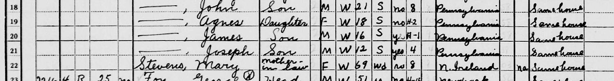
April 2, 1940 · ED 51-934, sheet 1A. The last line of the household at 2518 reads “Stevens, Mary — mother-in-law — 69 — Wd — N. Ireland”, with same house in the 1935 column. U.S. Census, NARA microfilm via FamilySearch
ED 51-934, sheet 1A, Ward 30, block 6, enumerated by Dee Williams Taggart on
April 2, 1940. Dwelling 3 is 2518, and the tenure columns read O and
$4,000 — owned, and worth four thousand dollars. Eight people on lines 15 to 22:
Line
Name
Relation
Age
1935
Occupation
15
Huff, Alexander
Head
42
Same house
Watchman, public school
16
——, Agnes
Wife
39
Same house
—
17
——, Mary
Daughter
23
Same house
Waitress, restaurant
18
——, John
Son
21
Same house
Helper, butcher shop
19
——, Agnes
Daughter
18
Same house
Saleswoman, department store
20
——, James
Son
16
Same house
At school
21
——, Joseph
Son
12
Same house
Grade 4
22
STEVENS, MARY
MOTHER-IN-LAW
69
Same house
Widowed. Naturalized. Born N. IRELAND
That is the whole question answered in one line. The woman the registry unit book names as
buying this house on December 9, 1924 is Mary Stevens. Here, sixteen years later, is
Mary Stevens — spelled exactly that way, by a federal enumerator, inside 2518
South Street, an Irish-born widow of sixty-nine, recorded as mother-in-law to the head
of the household. The owner and the household are the same woman, and she lived here.
What this closes, and it is a great deal.
The name. Stephens in 1920, Stevenson in 1930, STEVENS in 1940 — and 1940
agrees with the registry, the 1949 deed, and both death notices. Three clerks, one woman.
The objection that “Stevens and Stevenson are not the same word” is finished.
The relationship.Mother-in-law, written twice by two different enumerators
twenty years apart — 1920 and 1940. Agnes M. Huff was Mary Stevens’s daughter,
beyond argument.
The date.She was alive on April 2, 1940, and she had been in this house since at
least 1935 — the “residence in 1935” column says same house for
her as for everyone else. The window for her death closes to April 2, 1940 – November 5, 1949, when Sara Donahue, as survivor, sold to Agnes. Nine and a half years, down from
twenty-five.
And the shape of the 1949 sale changes. It is not a stranger selling to a stranger. Mary
Stevens died; her co-owner Sara Donahue took the whole by survivorship; and Sara then conveyed it
to Mary’s own daughter. The house went from mother to daughter, with Donahue
holding the legal title in between.
What it does not explain. In 1930
Mary was the head of this household and the tenure column said R — rented,
$60.00 a month, six years after she had bought the house. In 1940 she is the
mother-in-law and the household says owned, $4,000. The deed did not change in
between. Whatever the 1930 answer was — a payment to her co-owner, a ground rent, an
installment, or simply a wrong tick in a narrow column — it was not a statement about who
held the title, and a census tenure box is not evidence of ownership. The registry is the record of ownership. The census is a record of who opened the
door.
Sixteenth Census of the United States, 1940 — Pennsylvania, Philadelphia, Ward 30,
ED 51-934, sheet 1A, lines 15–22; enumerated April 2, 1940 by Dee Williams Taggart.
FamilySearch ark:/61903/3:1:3QS7-89MY-7Q4N, image 509 of 798, Image Group Number
005456879; NARA microfilm. Read at full resolution September 1, 2026.
April 27, 1942
A card in his own handwriting
The wartime registration required every man between 45 and 64 to fill out a card. Alexander
Huff’s survives, serial number 2875, and it is the first document in this whole
file written by someone who lived in the house rather than about them.
Place of residence:2518 South St., Phila., Pa.
Telephone:none.
Age: 47. Date of birth: May 18, 1895, Philadelphia.
Person who will always know your address:Agnes Huff, 2518 South St.
Employer: Mr. Robinson, West Philadelphia High School — maintenance
department.
Place of employment:Shoemaker School, 53rd & Media.
Signed Alexander Huff at the foot, in a steady hand.
And one thing it unsettles. The card gives his birth as May 18, 1895
and his age as 47 — internally consistent. His death certificate gives
May 18, 1896 and age 76 — also internally consistent. Same day and month,
one year apart. Add the census ages (38 in 1930, 42 in 1940, 54 in 1950) and this man has
four different birth years across five documents. The 1950 return and the certificate agree on
1896; the card he signed himself says 1895. Not resolved.
Two small things it does settle. The 1940 census called him a “watchman at a public school”
without naming it — here is the school, four miles west in Cobbs Creek, and the department
he worked for. And the household still had no telephone in 1942, twelve years after the
neighbors at 2520 and 2522 had bought their houses outright.
World War II Draft Registration Cards (4th Registration), Pennsylvania. NARA microfilm
M1951.
Open the card →
His death is recorded in the Social Security index: December 1972, Philadelphia.
1942
The block, itemized
A WPA land-use map letters every use onto every parcel. Behind and around the house, in the
middle of the war: LUMBER YARD — Maule’s, still there sixty-six years after
the Hopkins plate — the Thornton Fuller Automotive Co. with Auto Sales and
Service, a Wholesale Dairy Co., Art Publishers, and the Golden Ray Oil
Burner Company. At 26th, a Public Swimming Pool: the bath house whose contracts were
let in August 1925, and whose drawings survive at the Historical Society.
This is the block the Huff children grew up on — a lumber yard, a car dealership, a
dairy, and a municipal pool at the corner.
April 27, 1949, a quarter past five in the morning
Mary Stevens dies at home, and Agnes signs the register
Commonwealth of Pennsylvania, Bureau of Vital Statistics, Certificate of Death, File No.
37810, registered No. 8607, Ward 30.
Full name
Mrs Mary Stevens
Place of death
2518 South Street — written into the box headed “name of hospital or
institution … if not in hospital write street number”
Usual residence
2518 South Street, Philadelphia
Date of death
April 27, 1949, hour 5, minute 15
Born
July 29, 1873, Ireland
Age
75 years, 8 months, 28 days
Condition
Widowed — husband, the late JAMES STEVENS
Occupation
Housekeeper · industry: Home
Father
MICHAEL MALONEY, born Ireland
Mother
Maiden name “Unknown”, born Ireland
Informant
AGNES HUFF, in her own signature — address 2518 South Street
Cause
Acute pulmonary oedema (12 hours), due to chronic valvular
endocarditis, mitral regurgitation (8 years), due to malignant hypertension
(5 years)
Attended
6 January to April 26, 1949, by Dr Frances Taylor,
1231 Spruce Street — last saw her alive the day before she died
Burial
May 2, 1949, Holy Cross Cemetery
Funeral director
of 2410 Lombard Street
Social Security No.
none
She died in this house. Not in a hospital, not at a daughter’s address elsewhere
— in one of these rooms, at a quarter past five on a Wednesday morning in April, aged
seventy-five, after eight years of heart disease. And the person who gave the registrar her
details, and signed her own name to them, was Agnes Huff of 2518 South Street —
her daughter, who would own the house within seven months.
The last blank line in a hundred and thirty-eight years is filled.Mary Stevens died on April 27, 1949. That is the day Sara Donahue became sole owner of this
house by survivorship — no deed, no signature, no recording, just a death at dawn.
On November 5, 1949 Sara Donahue conveyed it to Agnes Huff. Six months and nine days.
Every transfer of this property from 1888 to today now has a date.
Her name was STEVENS, and the census-takers were the ones who were wrong.
Three spellings run through this house’s records — Stephens in 1920,
Stevenson in 1930, Stevens in the registry and the deeds — and treated the
question as open. It is closed. Her own death certificate names her husband as
“the late James Stevens”. The property records had it right the whole time;
the two enumerators guessed, and both guessed wrong.
She was born MARY MALONEY — and that is the test for Sara Donahue.
Her father was Michael Maloney, of Ireland. So the sister theory does not die here, it
sharpens: Donahue would be a married name. If Sara Donahue was born Sara Maloney,
the two women who bought this house together with right of survivorship were sisters, and
the whole arrangement explains itself.
One document settles it: Sara Donahue’s own death certificate. If it names
Michael Maloney as her father, they were sisters. Same collection, same free access.
A small thing, and it runs through the whole century. The funeral director
signs from 2410 Lombard Street. That is William H. Logue — the same firm
that carried Elizabeth “Bessie” Robinson, aged three, out of this front door
in October 1906, and that buried Alexander Huff in January 1973.
Three funerals from this address across sixty-six years, and one firm walked up the step
every time.
Mary Stevens was buried at Holy Cross, where Alexander Huff was buried twenty-three years
later. Her daughter Agnes went to Holy Sepulchre.
Her mother’s maiden name is given as “Unknown.” Agnes was standing in
the house she grew up in, answering questions about her own grandmother, and could not supply
the name. That is the edge of this family’s memory, written down in 1949.
Pennsylvania (State). Death Certificates, 1906–1972 — file no. 37810,
registered no. 8607, Ward 30, Philadelphia; received by the local registrar May 2, 1949.
Record Group 11, Pennsylvania Historical and Museum Commission. Certificate number located by
machine-reading the free PHMC death indexes; image read September 2, 2026 via
Ancestry Pennsylvania, which the Commonwealth provides free to Pennsylvania residents.
The question behind the deed
Why Mary Stevens did not leave this house to her daughter
It is the obvious question, and it has an exact answer. Mary Stevens could not leave 2518
South Street to Agnes, because by the time she died she had nothing left to leave.
A joint tenant’s interest does not pass to her estate. It ends. That is the whole
point of the form. On the death of one joint tenant the survivor already owns the whole, not by
inheriting anything but because the dead owner’s share simply ceases to exist.
Survivorship beats a will — a joint tenant cannot devise her interest, and any
clause in a will attempting it has nothing to operate on. So when Mary died on the morning of
April 27, 1949, Sara Donahue owned the house outright, and Agnes owned nothing.
Which moves the question one step back, and makes it a better one.
Mary Stevens bought this house alone on December 9, 1924. The registry records her as sole
owner. Sara Donahue appears in a separate, later entry on the same line —
“Mary Stevens & Sara Donahue.” Sara was added to the title afterwards.
So the real question is not why Mary failed to leave the house to her daughter. It is
why, at some point after 1924, Mary Stevens put a second name on her deed in the one form
that would guarantee the house went to that person and not to her own child.
Three ordinary reasons a woman adds a name to her deed
One — she borrowed the money. Among people who did not use banks, the lender goes on
the title. Joint tenancy with survivorship is security: if the borrower dies before repaying, the
lender keeps the house rather than queueing behind an estate. On this reading Sara Donahue
financed something — the purchase itself, a repair, a debt — and the arrangement was
a mortgage in everything but name.
Two — mutual insurance between two women. Two widows, both Irish-born, buying
security for whichever outlived the other. This is the reading the form most naturally suggests,
because survivorship has to be chosen: two people who simply buy together are tenants in
common, and each half goes to that person’s own heirs. Somebody asked for the other thing.
Three — to keep the house out of probate. Survivorship transfers instantly, with no
court, no executor, no fees and no delay. For a small estate that is a real economy, and it is
still why people do it.
And there is a fourth possibility that would make the 1949 sale not a sale at all.
The 1940 census records the Huffs as owners of this house nine years before the deed, which
points to an installment agreement — Philadelphia’s ordinary way of buying a
rowhouse without a mortgage. If Agnes and Alexander had been paying for 2518 through the 1930s,
then the conveyance of November 5, 1949 is not a purchase from a stranger but the last
installment of a family arrangement, with Sara Donahue holding the legal title until the money
was finished. Mary would not have needed to leave Agnes the house. Agnes was already buying it.
One document tests all four readings at once: the consideration on deed C.J.P. 2479 p. 221.
A nominal figure — a dollar, or a few hundred — means a family arrangement completing.
A market price means Agnes genuinely bought her mother’s house back. That deed is not
online; it is on the list of things to ask for in person.
The law of joint tenancy stated here is general Pennsylvania property law, not a finding from this
research. Everything about the sequence of entries comes from the registry unit book,
block 5 S 10, line 160.
December 14, 1893 · June 1900 · April 1910
Before this house: the Stevens family across South Street, and the spelling that hid them
Until now Mary Stevens entered the record in 1920, already widowed. She is findable
twenty years earlier, and the reason she was not found before is that the clerks wrote her
family down three different ways. The surname appears as Stevens, Stevenson
and Stephens; hers appears as Maloney and Malone. Searched under any
one spelling the family disappears.
June 1900 — the household, on South Street
Twelfth Census, Philadelphia, Ward 7, Enumeration District 139, sheet 6B, lines
95–99. The street written up the left margin of the run is South St. The house
number in the margin is struck through and rewritten and we have not read it with confidence.
Ward 7 is the north side of South Street; 2518 is the south side, in Ward 30.
Stevens, James. Head. White, male, born May 1874, Ireland. Immigrated
1888. Married. Father born Ireland, mother born Ireland. Occupation: sawyer.
Mary. Wife. Born July 1873, Ireland. Immigrated 1888. Married 7 years.
Three children born, two living. Father born Ireland, mother born Ireland.
James. Son. Born September 1896, Pennsylvania. —
Agnes. Daughter. Born July 1898, Pennsylvania.
Woods, Bridget. Boarder. Widow, born May 1840, Ireland. One child born, none living.
Not a relative on the face of the sheet.
Mary’s birth month and year on this sheet — July 1873 — are the same as
the July 29, 1873 given on her death certificate forty-nine years later. Her husband cut
wood for a living, four blocks from a lumber yard, on the street the yard stood on.
April 1910 — the same household, spelled STEVENSON
Thirteenth Census, Philadelphia Ward 7, sheet 6B. James, 35, Ireland. Mary, 30,
Ireland. James Junior, 14.Bridget, 10.John, 8.
That John, born about 1902 in Ward 7, is the John J. Stevens who was shot on the
Parkway in June 1920 and died at 2411 Delancey Street, in the same ward. He is the link that
holds the identification together.
December 1893 — the license, in his own words and his own mark
The application survives, and we have read it. Philadelphia County, license No. 65447,
sworn December 12, 1893 before J. S. Bird, Assistant Clerk of the Orphans’ Court.
They were married two days later, on December 14, 1893.
James Stephens personally appeared and requested a license for the marriage of himself
to Mary Malone; and, being duly sworn, deposed that he was born in Ireland, in
August 1870; that he resides at No. 2122 Locust Street, Philadelphia; that he is
by occupation a laborer; that he is not related to her by blood or marriage; and that
he has not been married before.
That Mary Malone, whom he is about to marry, was born in Ireland, age
22 years, A.D. 1871; that she resides at the same house; no occupation;
and that she has not been married before.
He signed it “James Stephens, his mark.” He could not write his name.
Two things this settles and one it does not. It settles that they were living under
the same roof before they married — a lodging house at 2122 Locust Street, which is one
block from St Patrick’s, Twentieth and Locust, the church where their son’s
requiem was sung twenty-seven years later. It settles that he came to this country with no
letters. It does not name a single parent: the 1893 Philadelphia form does not ask
for them.
The ages do not agree with anything else, and they lean the same way. The license
makes James born August 1870 and Mary born 1871. The 1900 census makes him May 1874 and her
July 1873; her death certificate makes her July 29, 1873. Both are older on the license, by
three or four years and by two. Twenty-one was the age at which a person could marry in
Pennsylvania without a parent’s consent, and neither of them had a parent in this
country to give it. Two teenagers swearing themselves over the line is the ordinary
explanation. It is not the only one, and until something ties this couple to Ward 7 the
identification rests on the date: the 1900 census says, independently, married seven years.
The third child. An infant Mary Stevens died on October 22, 1895 and was buried
on the 25th; the Philadelphia city death certificate gives her parents as James and Mary
Stevens. Three children born and two living in June 1900 requires a dead child, and the dates
sit exactly where one is missing. The names are common enough that this is a fit, not a proof.
One thing the two sheets will not reconcile. Agnes is one year old in June 1900.
Bridget is ten in April 1910. Both cannot be the same girl. Either the family had a
daughter we have not otherwise met, or one child was written down under two names —
which, given what these same clerks did to the surname, is not a remote possibility.
Neither set of parents is named anywhere in these records. What the 1900 sheet does
give is a year of arrival, 1888, for both of them — which makes a passenger
manifest findable for the first time, and makes the 1893 license application, taken out
five years after they landed, the shortest route to two Irish fathers’ names.
Marriage licenses: Philadelphia, Marriage Licenses 1893, images 153 and 154 (license
No. 65447), read from the originals; indexed in Pennsylvania, Civil Marriages,
1677–1950, and in the Philadelphia Marriage Index 1885–1951.
United States Census, 1900, Philadelphia city Ward 7, ED 139, sheet 6B, lines 95–99
(NARA T623), read from the sheet image. United States Census, 1910, Philadelphia Ward 7,
sheet 6B (NARA T624), index entry. Pennsylvania, Civil Marriages, 1677–1950, entry for
James Stephens and Mary Malone, December 12, 1893, and Philadelphia Marriage Index
1885–1951, same pair. Pennsylvania, Philadelphia, City Death Certificates,
1803–1915, entry for Mary Stevens, died October 22, 1895. The house number on the 1900
sheet and the street column on the 1910 sheet are both still unread.
April 1, 1911
James Stevens dies of consumption at 2406 Panama Street, and his certificate names his parents
He was thirty-seven years and one month old. He had been ill for a year and two
months — his doctor had been attending him since February 1, 1910, and last saw him
alive on 31 March. He died at two in the morning of tuberculosis of the lungs, at
No. 2406 Panama Street, Seventh Ward. Certificate 8737.
Certificate of Death, Philadelphia, Registration District No. 1, registered No. 8737.
Full name: James Stevens. Sex: male. Married.Date of birth: March 1st, 1874. Age: 37 years, 1 month.
Occupation:stone cutter. Birthplace:Ireland.
Name of father: Patrick Stevens. Birthplace of father: Ireland.
Maiden name of mother: Bridget Corcoran. Birthplace of mother: Ireland.
Informant:Mrs. James Stevens, 2406 Panama St. Cause:Tuberculosis of lungs, duration 1 year 2 months; signed S. C. Runkle, M.D., 1605
Christian Street. Place of burial:Holy Cross Cemetery, April 5, 1911.
This is the document the whole Irish question was waiting on. Nothing else in the
record names a parent of anyone who lived in this house. Here are two of them, in a clerk’s
hand, on the word of the dead man’s wife.
Why it is certainly him
The informant is Mrs. James Stevens. The address is in Ward 7, where the
family is enumerated in 1900 and 1910 and where Mary is still living in 1920. The burial is at
Holy Cross — the cemetery their son John was buried in nine years later. And the
birth is March 1874 in Ireland, against the May 1874 in Ireland he gave the census
taker in 1900. He was a sawyer then and a stone cutter at the end; the trade moved, the man did
not.
What his death set going
Mary was widowed at thirty-seven, with three children at home: James, about fifteen;
Bridget, about eleven; John, eight. Everything that follows runs off this date.
She was naturalized in her own right in 1916, which a married woman could not do
before 1922 and a widow could. In 1918 John enlisted at sixteen by saying he was nineteen,
and when he overstayed his leave in 1920 his wife said he had written asking for an extension
“as we needed his help at home.” The household had been short a wage for nine
years. And the daughter is called Bridget — for her father’s mother, in the
ordinary Irish way, which is the first time the naming in this family has told us anything.
Where this points, and how far — Ballina, County Mayo
Searched against the Irish registers, Patrick Stephens and Bridget Corcoran occur as a
married pair exactly once in the whole country. They are at Ballina, County Mayo, and
three of their children are registered there: Mary, born July 10, 1866; Michael, born
April 22, 1871; Thomas, born December 13, 1873.
This is a lead and not yet a finding, and the arithmetic is the reason. A brother born
on December 13, 1873 cannot have a brother born on March 1, 1874. Either James’s date on
the certificate is wrong — his wife gave it, and he had already given two other dates in
his life, May 1874 to the census taker and August 1870 to the marriage clerk — or he was
a later child of this family whose birth is not indexed, or these are not his people.
The index is demonstrably incomplete here: it lists eight Stephens births at Ballina
between 1864 and 1884, and Thomas is not one of them, though his register entry exists.
A James born in 1874, 1875 or 1876 could be missing the same way.
There is no civil marriage for them, and there is a reason for that. Roman Catholic
marriages only enter Irish civil registration on January 1, 1864, and this couple’s eldest
indexed child arrives in July 1866. If they married before 1864, as the dates suggest, the
record is in the Ballina Catholic parish register and nowhere else.
What would settle it. The Ballina Catholic registers, free to read as page images at
registers.nli.ie and indexed on the commercial sites: a baptism of James Stephens,
1873 to 1877, to Patrick Stephens and Bridget Corcoran, and the couple’s own marriage
before 1864, which would name both of James’s grandfathers. After that, the 1901 census
for the townland, and Holy Cross Cemetery in Philadelphia, where the family plot may hold more
of them than we know about.
Pennsylvania, Philadelphia, City Death Certificates, 1803–1915: certificate 8737,
James Stevens, April 1, 1911, read from the original. The indexed transcription renders the
mother as “Budget Cocoran”; the certificate itself reads Bridget Corcoran.
The Ballina family is drawn from the Irish civil registration and church indexes, searched
September 3, 2026. No record yet places James in it.
14 – June 21, 1920
Mary’s son is shot as a deserter, and she asks that the man who shot him not be punished
On Monday June 14, 1920, at the Parkway and Twenty-second Street,
John J. Stevens was driving a motor truck when a sergeant of his own unit shot him. He
was seventeen. He had enlisted at sixteen by misstating his age, and on the day he was shot he
was being treated as a deserter. He died early on Wednesday 16 June at the
Medico-Chirurgical Hospital, of a gunshot wound to the chest and lung. He had been married for
a matter of months.
The Inquirer put it on the front page on 17 June, under a headline that is the whole story:
MOTHER OF DESERTER PLEADS FOR SLAYER; YOUNG WIDOW BITTER — 17-Year-Old Bride
Calls Shooting of Stevens “Cold-Blooded Murder”.
Mary Stevens, in her own words — the only time we have ever heard her speak.
She had put a blessed candle in his right hand just before he died. Then, at her home at
2411 Delancey Street, she told a reporter:
“I would rather they did not punish the man who shot my son. I feel the
mother of the other boy must be considered. It will not bring my son back or do any good to
prosecute the soldier who shot him, and I do not wish another mother to feel the way I
do.”
His widow took the opposite view, and said so: she hoped the man would be made to pay for
what she called a cold-blooded murder. She had sat at his bedside through hours of
unconsciousness, was not with him when he died, and collapsed at home the following evening.
The article continues on page 8, column 2, read from the page on September 4, 2026.
How he came to be driving that truck — two accounts
The continuation on page 8 prints both sides, and they do not agree.
His mother’s account, corrected September 4, 2026: this file previously credited
it to his wife. The continuation attributes the quotes about the enlistment and the leave to
the mother, and the “cold blooded murder” quotes to the widow. He was sixteen
when he enlisted and told them he was nineteen.
He was sent to Aberdeen with the balloon company. Then, in her words: “He became ill
and was sent to a camp hospital, and afterward given leave to come home. He knew he was
overstaying his leave, and he sent a letter to his lieutenant asking if the leave could be
extended, as we needed his help at home. He never received an answer, and was worried. He was
planning to go to the Red Cross and see what should…” The widow said he told
her he had been used badly in camp at Aberdeen and that one sergeant had a grudge
against him.
And the mother made a comparison the paper printed without comment. Grover Cleveland
Bergdoll, the Philadelphia draft evader, had been hunted for two years and was not shot at.
“Neither of the sergeants in charge of Bergdoll fired at him when he ran away from
them. But he has money. My boy was poor.” The lieutenant of the balloon company is
named in the continuation as H. H. Holland, who was wiring Aberdeen for permission to
give Stevens a military funeral.
The army’s account, given by his lieutenant. Stevens was about to be tried
on a charge of assaulting a non-commissioned officer when he became ill; he was taken as a
prisoner to a hospital at Fort McHenry and escaped from there. He had talked rashly
among the men at the encampment and had boasted, “I would like to see anybody get
me.” That, said the lieutenant, is why his arrest was ordered.
So the word deserter is the army’s word, and it is doing a lot of work. On one
account he was a sick seventeen-year-old whose letter went unanswered; on the other he was an
escaped prisoner awaiting trial. Both were printed on the same page.
The shooting, and his own last statement
On the Parkway at Twenty-second Street, Sergeant Gay called on him to stop. Stevens was
driving off in the truck. When it became certain he could not survive, an ante-mortem
statement was taken by Magistrate Carney, and in it Stevens said he had not heard the
command to stop, and that there was not time to stop the truck before he was shot.
The bullet pierced both lungs. For a while he seemed to gain strength and there was
hope of saving him by blood transfusion, but he had lost so much blood that he never
rallied enough for the operation. He was conscious long enough to talk to his wife and to give
his statement to the magistrate. His lieutenant, meanwhile, was wiring his superior officers at
Aberdeen for permission to give Stevens a military funeral. Whether it was granted is
not recorded here.
What happened to the man who shot him
Sergeant Roger Gay, of Balloon Company No. 18, the dead boy’s own
company. By 17 June he had already been exonerated by his company’s board for the
shooting, and had been sent to a camp at Aberdeen, Maryland, to await court-martial. The
Chief Deputy Coroner, Arthur Sellers, held an inquest in Philadelphia on Friday 18 June and
tried to have Gay produced; the military authorities would not say whether he would be allowed
to attend, and he was not there. The jury found that Stevens “came to his death from a
gunshot wound in the lung, inflicted by Sergeant Roger Gay, now under arrest at Government
Headquarters, Aberdeen, Md.” On 19 June District Attorney Rotan communicated with
Washington and then announced that he would abide by the decision of the military
authorities. The investigating army officer, Lieutenant Emerson C. Cook, had not finished
his inquiry. No civilian prosecution followed.
Read from page 3 on September 4, 2026, and not previously in this file. Neither woman
was at the inquest: “The dead man’s mother and wife were not present at the
inquest. They are at home both ill from worry and shock.” The same paragraph closes
with “Funeral services for Stevens will be conducted Monday”, which matches
the death notice, so the funeral was Monday June 21, 1920. This page puts Gay in the
18th Balloon Squadron; the page of 17 June puts him in Balloon Company No. 18. The
paper uses both and we do not know which is the unit’s formal name.
Open: the court-martial. Whether Sergeant Gay was ever tried, and what came
of it, is not established. The company board had already cleared him before the inquest sat.
Records to try: general court-martial case files, Judge Advocate General (Army), Record Group
153 at the National Archives; the Aberdeen Proving Ground post records; and the Philadelphia
papers from late June 1920 onward for any report of a trial.
The documents. Death notice, June 18, 1920: “STEVENS. — June 15. JOHN J.,
husband of Marie Stevens and son of Mary and the late James Stevens, in his 18th year.
Relatives and friends invited to funeral, Mon., 8.30 A.M., from his late residence, 2411
Delancey st. Solemn requiem mass at St. Patrick’s Church, 10 A.M. Int. Holy Cross
Cem.” Certificate 74496, registered 15849, a corrected copy: born July 1, 1902 in
Philadelphia, married, occupation auto driver; father James Stevens of Ireland,
mother’s maiden name Mary Malone of Ireland; ruled homicide by coroner Wm. Wright
Jr.; buried Holy Cross Cemetery, June 19, 1920. The notice’s “June 15” is a
day out; the paper of 17 June says he died “early yesterday”. The Inquirer of 19
June calls him Private Joseph J. Stevens of 2427 Panama street, which is a newspaper
getting a soldier’s name and address wrong two days after printing them right. (This file
previously gave the address as 427; the page reads 2427. Corrected September 4, 2026.)
Two corrections to this file. First, the notice says the late James
Stevens, so Mary was already a widow in June 1920 and the informant “James
Stevens” on the certificate is a relative of the same name or one of the errors the
corrected copy was issued to fix. Second, the address. This file said the household of
January 1920 was at 2411 South Street; the census sheet gives only the house number
and South Street was our inference. The certificate, the death notice and Mary herself,
quoted at her own front door, all say 2411 Delancey Street. Corrected throughout.
And the naming. Agnes and Alexander Huff’s son John J. Huff was
born in 1920. This file said he was named for his uncle. He was named for an uncle shot dead at
seventeen that June.
August 4, 1966 — the test that would not run
Sarah J. Donohue of Overbrook, born in Ireland in 1877
The obvious candidate for the other owner of this house was found on the first page of results,
and she fits: SARAH J. DONOHUE, died August 4, 1966 at 1222 N. 64th Street,
Philadelphia, aged 89. Certificate 82764.
Born
February 22, 1877 · birthplace IRELAND
Condition
Widowed — spouse JOHN D. DONOHUE
Occupation
At home
Address
1222 N. 64th Street, Philadelphia 19151 — Overbrook,
four miles from South Street
Cause
Cerebral vascular haemorrhage, due to generalized
arteriosclerosis
Informant
Frances J. Donohue, 225 S. Cedar, Upper Darby
Burial
August 9, 1966, HOLY SEPULCHRE, Cheltenham
Field 17, mother’s maiden name
BLANK
Field 18, father’s name
BLANK
The one line we came for is empty. Mary Stevens’s certificate named her father,
Michael Maloney, and the whole point of finding Sara Donahue was to see whether hers said
the same. Frances Donohue either did not know or was not asked, and the registrar left
both boxes blank. The sister question is exactly where it was. September 3, 2026 — and now it is not. The certificate leaves fields 17 and 18 blank, but three other records name her outright. The Philadelphia marriage index has her as Sarah J. Garrity; her obituary index entry reads Sara J. Garrity Donohue; and the Irish Catholic parish register has her as Sarah Geraghty. She was born Garrity, anglicized from Geraghty, in Ireland in 1877. Her father was not Michael Maloney, and she was not Mary Stevens’s sister. Two consequences. If this is the woman on the 1949 deed, the sister theory is dead and the survivorship has some other explanation. If she is not, then the Sara Donahue of the deed died outside Philadelphia, outside Pennsylvania, or after 1972 — because across both spellings and both given names, she is the only Sara or Sarah Donahue or Donohue who died in Philadelphia between 1941 and 1981. Either way the leading candidate of the last six weeks is eliminated by name.
What it does give, and it is not nothing.She was Irish-born, like Mary. She was born four years after her — 1877
against 1873 — which is a sister’s spacing. She was a widow, as the 1949 deed
describes her. She was alive in November 1949 to sign it. And she lived in Overbrook, four
miles away, which fits what the censuses show about the Donahues: they never
lived in this house; they were the landlords.
And she was buried at HOLY SEPULCHRE — where Agnes M. Huff was buried
eighteen years later, in 1984. Holy Sepulchre is one of the largest Catholic cemeteries in
the archdiocese, so this is a coincidence worth noting and not worth leaning on.
And a caution.Nothing yet ties this Sarah J. Donohue to 2518 South Street. She is Irish, the right age, a widow, in the right city, and
alive on the right date — which is five circumstantial matches and no document.
“Sara Donahue” returned 239 results in this collection alone. Treat her as a
strong candidate, exactly as certificate 92180 was a strong candidate yesterday and turned out
to be a stranger.
What would confirm her identity: the deed of November 5, 1949, C.J.P. 2479 p. 221,
which names the grantor with her address. If it reads 1222 N. 64th Street, this is her.
What would answer the sister question: her marriage to John D. Donohue, which gives
her maiden name outright — or the death certificate of Frances J. Donohue, the
informant, whose own mother’s maiden name field would supply what this one leaves
blank.
Pennsylvania (State). Death Certificates, 1906–1972 — certificate 82764,
local registration no. 80-16052, Philadelphia; received August 8, 1966. Read September 2, 2026 via
Ancestry Pennsylvania.
c. 1933–1987
The Huff family, half a century
By 1935 the Huffs are here — every line of the 1940 census answers “same
house” for where they lived five years before. In April 1940 the enumerator finds seven
of them: Alexander, 42, a watchman at a public school; Agnes, 39; and five
children between 12 and 22, the eldest working as a restaurant waitress, a butcher’s
helper, a department-store saleswoman. Tenure column: owned, valued $4,000. Next door at 2520
the Collings family rented for $28 a month.
On November 5, 1949 Sara Donahue, widow, formally conveys the house to
Agnes M. Huff — Deed Book CJP 2479, page 221.
By the 1950 census the household is two. Agnes, 49, head, marked separated, working as
a cheese packer at a milk company; her son, Joseph A., 21, a carton packer at a paper company.
And one block west at 2620 South Street, lodging in someone else’s house:
Alexander J. Huff, 54, also marked separated. Same surname, same marital status, a
two-minute walk apart.
A puzzle worth keeping open. The 1940 census says they already owned
the house, nine years before the deed. The likeliest reconciliation — an
inference, not a fact — is an installment sale: bought on contract from
the Donahues in the 1930s, deed delivered only when the last payment cleared. Ordinary for
working-class Philadelphia rowhouses, and it would explain why the seller is a widow finishing
out her late husband’s agreement. The 1930 schedule has since been read —
see How the Huffs got in, above — and it shows them lodging with Mary
Stevenson, which makes an installment purchase more plausible but still does not prove it.
Agnes wrote her will in 1964. Item FOURTH directs a sale, but with a condition:
if any of her children “should express a wish to take title to the premises as a
home,” they could have it appraised and buy out their siblings. She died
January 13, 1984. None of them took it. In 1987 her daughter Mary A. Barrett,
as executrix, sold the house out of the family for $72,000.
1940 Census, ED 51-934, Sheet 1A. House numbers run down column 2: 2522, 2520, then
2518 on line 15.
National Archives, NAID 137790861 — public domain.↓ Save image · public domain
1944 – 2000
A wedding out of this house, February 1944
Two things happened at this address in these years that anybody outside it noticed.
February 2, 1944 — a wedding out of the Huff house
In the marriage-license column of the Inquirer Public Ledger, among the couples
granted licenses that week:
… Mary A. Huff, 26, 2518 South st. …
The Huffs bought this house before the 1940 census, which recorded it owned and valued at
$4,000 — the first time in fifty years the family in it were not tenants. Four
years later a daughter of that household, born about 1917, went down to City Hall for a
license. It is the middle of the war; Alexander Huff had registered for the draft in April
1942.
And the groom
The column is headed Applications for Marriage Licenses and runs
bride, age, address, and groom, age, address. Read straight off the page:
Madeline McClary, 21, 1909 N. 13th st., and James Muldrew, 40, 1909 N. 13th st. Mary A. Huff, 26, 2518 South st., and Francis M. Barrett, 29, 2628 South st.
Bernice A. Malone, 18, 1446 S. Marston st., and John J. Dixon, 20, 527 S. 27th st.
And a death notice twenty-nine years later says the same thing independently. On
January 1, 1973 the Inquirer printed:
… Husband of Agnes M. Huff (nee Stevens), Father of Mary Barrett …
Mary A. Huff of 2518 South Street married Francis M. Barrett of 2628 South Street
— a man from one block west, on the same street — in the winter of 1944. Two
independent records, twenty-nine years apart, agree on the surname.
And it explains how the Huffs came to own the house at all.
Agnes M. Huff was born Agnes Stevens. The 1930 census gives the head of this
household as Mary Stevenson, with the Huffs living in it as lodgers. The Huffs did not
arrive as strangers who happened to buy the place. Alexander Huff married the daughter of
the house — and a family that entered by the back door in 1930 held the deed until
1984.
Two soft joints, named rather than smoothed over.
One — now closed. The 1973 notice names the widow and the daughter but not the
dead man. His death certificate settles it: Alexander John Huff, husband of
Agnes, died December 27, 1972 — five days before that notice ran. See the
entry above.
Two. The obituary spells her maiden name Stevens; the 1930 enumerator wrote
Stevenson. Those are probably the same family and one of the two clerks was careless,
but they are not the same word.
October 10, 1999 — a name in the transfer column
2518 South St. Frank O. Gould to Lynne Lyon, $137,500.
A recorded sale, printed in the Inquirer’s weekly real-estate transfers. It sits in the
gap between the 1987 deed and Karen McGrane’s purchase from Paul A. Edelblut on
March 1, 2016 — two more owners with names, in a stretch of the chain that was blank.
And the house as it was advertised.
July 1, 1984 — offered for sale in the Inquirer. Agnes M. Huff had died on
January 13, 1984 (Will No. 971 of 1984). She bought the house from Sara Donahue in November
1949 and held it for thirty-four years; six months after her death it went on the market. That
advertisement is the end of the Huff tenure — a family who arrived as lodgers
before 1930, were owners by 1940, and held the place for the better part of half a century. August–September 1995 — to let, through Century 21 Weber Realty, run
almost daily in the Daily News: “CENTER CITY Townhouse 2518 South St.
4BR 2BA, patio, W/D, easy prkg. Great for U of P.” It was student housing. July–August 1998 and January 1999 — for sale, now billed as
“Fitler Square”: “Spacious, elegant 4BR, 2 bath home, sep DR, wd
flrs, new kit”, with open houses on Sunday afternoons. March 5, 2000 — on the market again at $225,000.
A caution about the prices. Classified pages run listings shoulder to shoulder, and OCR
does not respect the boundaries. Figures of $116,000, $450,000 and
$670,000 appear on the same lines as this address in 1998 and 2000, and at least some of
them belong to the advertisement next door. The only price here that is certainly this house is
the recorded transfer: $137,500 in 1999.
The Philadelphia Inquirer Public Ledger, February 2, 1944, page 15 —
Philadelphia Inquirer, October 10, 1999, page 237 — and classified advertisements in
the Philadelphia Daily News and Inquirer, 1984–2000. All via ProQuest
Historical Newspapers: Pennsylvania Collection, Free Library of Philadelphia.
1963 & 1968
The Historical Commission walks the block
A city photographer walked South Street with a plate camera in 1963, 1964 and again in 1968,
shooting facades one at a time and working steadily westward. The negatives went into the
Historical Commission’s files as a single numbered run —
Historic Commission 12830 — and it survives intact.
Walked frame by frame, it turns out to be far bigger than a neighborhood survey.
Historic Commission 12830 runs from frame -1 to -57 and covers South Street from the
900 block to 2623 — roughly 9th Street to 26th, the entire commercial length of
the street. It was shot across several years: 1963, 1964, 1968 and 1971.
Your block is the western end of it, frames -50 to -57, assets
82899–82906. The twenty-one frames from -37 to -57 (assets 82886–82906) run
unbroken from 2007 to 2623.
A caution if you walk it yourself. Asset IDs are mostly sequential but
not purely — other collections are interleaved. Asset 82855 sits in the middle of the run
and is a Frankford Avenue frame from a different collection (12230). Check the
Collection ID on each record, not just the number.
Widen the box and the archive opens up.111 photographs sit on the immediate address. Widening to the surrounding blocks gives
1,910 photographs and 59 maps — Naudain between 25th and 26th shot side by side
in 1968, 26th Street north to Lombard, 503 South 25th, the 1949 sewer-contract survey of the
2600 block, the South Street Bridge in 1918.
Browse all 1,910, nearest first →
1968
One street back: Naudain
A second, separate run of negatives — Historic Commission 12384 — works
Naudain Street, one block north, photographing it both sides between 25th and 26th.
Naudain is the back street of the row that faces you across South Street, so these frames show
the other side of the buildings in your 1963 and 1935 photographs.
How to keep walking these. Both runs are consecutive. Once you have one asset
ID, the next frame is assetId + 1 at
phillyhistory.org/PhotoArchive/Detail.aspx?assetId=. To jump straight to the
full-size image in the South Street run, the picture ID follows a fixed step:
mediaId = 130551 + 2 × (assetId − 82898)
— verified across the 2400 to 2600 blocks. This archive is slow to search and fast to walk.
Two photographers signed the work: B.D. on the 1963–64 frames, MRM on the
1968 ones. Some negatives still carry a number scratched into the emulsion.
December 27, 1972
The man who owned the house
Pennsylvania death certificate 124465, Medical Examiner’s case 6897.
January 2, 1973, Holy Cross Cemetery, Yeadon, Delaware Co.
Funeral director
Wm. H. Logue, 2410 Lombard Street
It is a Medical Examiner’s certificate rather than a physician’s, which in
Philadelphia means an unattended death at home. He was found, the examiner attended, and the
cause was written down as not determined — a seventy-six-year-old retired meat
cutter who simply died, and nobody thought it needed explaining beyond that.
2410 Lombard Street.
Read that line again, and then read the 1906 certificate again.
When Bessie Robinson was carried out of 2518 South Street in October 1906, the
undertaker who signed for her was at 2410 Lombard Street. When Alexander Huff,
who owned that same house, was buried in January 1973, the funeral director who signed for him
was at the same address.
Sixty-six years, and the same firm on the same block of Lombard Street.
Two things this changes.
The Huffs had left the block. At his death Alexander Huff’s usual residence was
304 S. 10th Street, not 2518. But Agnes held the deed until she died in 1984, and
the house only went on the market that July. So for at least the last years the family
owned 2518 without living in it — and it was almost certainly let, which is how it
arrives in the 1990s as the student rental in the Daily News advertisements.
The son who signed.James Huff is the informant — and he is not a stranger:
he is the five-year-old in the 1930 schedule, born about 1925, one of five children
named in his mother’s 1964 will. Forty-two years after the census caught him he was the
one the Medical Examiner’s clerk wrote down.
Pennsylvania (State). Death Certificates, 1906–1968, file no. 124465,
certificate range 124351–124500, image 231 of 308; Record Group 11, Pennsylvania
Historical and Museum Commission. Certified by Robert L. Catherman, M.D., Office of the
Medical Examiner, 13th and Wood Streets, December 28, 1972.
1973 & 1984
The whole family, out of two death notices
The Inquirer’s mortuary column names survivors, and the two Huff notices between them
give the entire household that grew up in this house.
HUFF — ALEXANDER J., Dec. 27, 1972 … Husband of Agnes M. Huff
(nee Stevens), Father of Mary Barrett, Agnes Flocco, James and
Joseph Huff.
— January 1, 1973
HUFF — On Jan. 13, 1984, AGNES M. (nee Stevens), wife of the late
Alexander J. Huff, mother of Mrs. Mary A. Barrett, Mrs. Agnes R. Flocco,
James P., Joseph A. Huffand the late John J. Huff; also survived by
23 grandchildren … Int. Holy Sepulchre Cem.— 15 and January 16, 1984
Child
Born
Married name
Alive in 1984?
Mary Agnes
c. 1916
Barrett — m. Francis M. Barrett of 2628 South St, Feb 1944
Yes — d. Nov 29, 2012, aged 96, of Schuylkill; three children, three grandchildren, three great-grandchildren
John J.
c. 1919
—
No — named as the late John J. Huff in 1984
Agnes R.
c. 1922
Flocco
Yes — d. before Dec 2012
James P.
c. 1925
—
Yes — the informant on his father’s certificate; d. before Dec 2012
Alexander Jr.
c. 1928
—
Absent from both notices, living or dead — probably died as a child
Joseph A.
c. 1929
—
Yes — the son still at home in 1950, and still living in Dec 2012, the last of the six
Twenty-three grandchildren.
That number is the most useful thing in either notice. Alexander and Agnes Huff had
23 grandchildren living in January 1984 — which means the descendants of the family
that owned this house are not a thin line but a large one, and a great many of them
should be alive now.
November 29, 2012 — and here she is, with her face.
The last of the notices, and the best of them. Philadelphia Inquirer, Sunday
December 2, 2012, page B8, under Funeral Announcements, fourth notice down the
first column — with a photograph. An elderly woman in glasses, white hair set,
looking just past the camera.
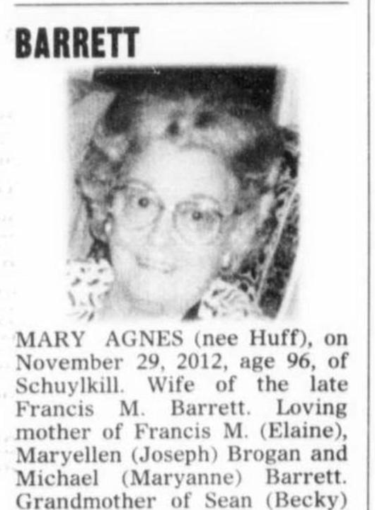
Mary Agnes Huff, later Barrettc. 1916 – 2012 The girl in the 1930 schedule at 2518 South Street, in the only likeness of her we have found. Philadelphia Inquirer, December 2, 2012, p. B8.BARRETT
MARY AGNES (nee Huff), on November 29, 2012, age 96, of Schuylkill. Wife of the late
Francis M. Barrett. Loving mother of Francis M. (Elaine), Maryellen (Joseph) Brogan and
Michael (Maryanne) Barrett. Grandmother of Sean (Becky) and Colleen Barrett and Christopher
Sheridan. Great-Grandmother of Ryan, Brendan and Lyndsey Barrett. Sister of Joseph Huff and
the late John, Agnes Flocco and James Huff. Also survived by many nieces, nephews and cousins.
Relatives and friends are invited to attend her Funeral Mass Tues. 10:30 AM at St.
Patrick’s Church, 20th and Locust Sts., Phila., Pa 19103, where friends may call from
8:30 to 10:15 A.M. Tuesday at the church. Int. SS. Peter and Paul Cem.
www.loganfuneralhomes.com Logan
This is the girl from the 1930 schedule.
Mary was about fourteen when the enumerator wrote the family down as lodgers in Mary
Stevenson’s house; twenty-three in 1940, a restaurant waitress living at home; and
twenty-eight when she took out a marriage license with Francis M. Barrett of 2628 South
Street on February 2, 1944 — a man from six doors and one block along the same street.
She grew up in this house, and she is the only person who ever lived in it whose face we
have found.
And she never really left. “Of Schuylkill” is the old
neighborhood name for these blocks — roughly 22nd to 27th, Lombard down to Grays Ferry.
She died at ninety-six a few streets from where she was born.
What the 2012 notice gives us that nothing else does: living names.
Every earlier document here names the dead. This one names nine people who were
alive in December 2012, in three generations, and they are the descendants of the family
that owned 2518 South Street for thirty-four years.
Generation
Named in the notice
Her children
Francis M. Barrett (wife Elaine) ·
Maryellen Brogan (husband Joseph) · Michael Barrett (wife Maryanne)
Her grandchildren
Sean Barrett (wife Becky) ·
Colleen Barrett · Christopher Sheridan
Her great-grandchildren
Ryan, Brendan and
Lyndsey Barrett — children in 2012, adults now
These are the people to write to. Any of the three children was born to a woman who had grown
up at 2518 South Street and would have visited her mother and brothers there through the
1950s, 60s and 70s. Family photographs of this house, if any survive anywhere, survive with
them.
Three more things fall out of it.
Joseph was the last one left. The notice calls Mary the “Sister of Joseph
Huff and the late John, Agnes Flocco and James Huff” — so in
December 2012 Joseph A. Huff was still alive, aged about eighty-three, the last of the six.
Her birth year moves back a year. Age 96 on November 29, 2012 puts her birth in late
1915 or 1916. The 1940 schedule said 26, giving about 1917. The notice is the better source
— a family gives the age it knows.
Alexander Jr. is missing from a third notice. Not among the living, not among the dead,
in 1973, 1984 or 2012. Three chances to name him and no one did. He almost certainly died as a
child, some time after the 1930 census caught him at two years old.
A seventh name that may not have been a child at all.Alexander Huff Jr. appears in the 1930 schedule aged 2, and then never again —
not among the living in 1973 or 1984, and not among the dead either. Agnes’s notice names
only John J. as late. A child who died young would be remembered privately rather than
listed thirty years on. Likely died in infancy or childhood, which would mean five of
the six reached adulthood.
Which settles the Joseph question. He was recorded here as a loose thread
— in the house in 1950 but seemingly missing from his mother’s will. Both death
notices name him outright as a son. Joseph A. Huff is real and he outlived both parents.
The two who did not are John and Alexander Jr. Agnes’s notice ends
“and the late…”, which is the column’s way of naming the dead
ones. Six children born in or brought up in this house; four still living when their mother
died in 1984.
And a new surname, which is the way through to living people.
Agnes R. Flocco. Born about 1922, in this house as an eight-year-old in the 1930
schedule. Flocco is an uncommon Philadelphia surname — far more tractable than Huff
or Barrett — which makes her line the single best route to anyone alive today who is
descended from the family that owned 2518 South Street for thirty-four years.
That matters for one practical reason: a family that lived in a house for half a century
takes photographs of it. No archive has a close frontal view of this house. A grandchild
might have one in a shoebox.
Two small things worth noticing in the funeral arrangements.
They were not buried together. Alexander went to Holy Cross, Yeadon in 1973;
Agnes to Holy Sepulchre in 1984. Eleven years and two cemeteries apart — which is
what you would expect of a couple recorded as separated in the 1950 census.
The funeral left from 114 Bethlehem Pike, well north of the city. By 1984 nothing of
this family was near South Street any more.
Philadelphia Inquirer, death notices, January 1, 1973 (p14), and January 15, 1984 (p103)
and January 16, 1984 (p29).
March 26, 1987
Agnes Huff owned this house for thirty-five years, and her will named it
Document 43068178 closes the chain from 1949 to today in a single
instrument — and it names an owner nothing else supplies: AGNES M. HUFF, sole
owner of 2518 South Street in her own name from 1949 until her death in 1984.
“This Indenture made the 26th day of March… 1987, Between
MARY A. BARRETT, Executrix of the Will of AGNES M., a/k/a AGNES HUFF, deceased, of the one
part, Grantor, and FRANK O. GOULD and DOUGLAS FRENKEL, AS TENANTS IN COMMON, of the other
part, Grantees… for and in consideration of the sum of SEVENTY TWO THOUSAND DOLLARS
($72,000.00)…
BEING the same premises which SARA DONAHUE, widow, by Deed dated 11/5/1949 and recorded in
Philadelphia County in Deed Book CJP 2479 page 221 granted and conveyed unto AGNES M. HUFF, in
fee.
AND THE SAID Agnes M., a/k/a Agnes Huff being so seized thereof, in fee, departed this life on
the 13th day of January A.D., 1984, having first made and published her Last Will and Testament
in writing bearing date the 2nd day of October A.D., 1964, duly proven and registered at
Philadelphia County, being WILL No. 971 of 1984…”
Clause FOURTH — she wrote this house into her will by name
“FOURTH: I direct my Executrix… to dispose of premises 2518
South Street, Philadelphia, Pennsylvania, as soon as convenient after my death, to sell and make
good conveyance thereof…
In lieu of this direction to sell premises 2518 South Street… in the event that any of my
sons or daughters hereinafter named, should express a wish to take title to the premises
as a home, I hereby direct my Executrix to have the premises appraised by a reputable
Appraiser… and on the basis of the valuation given by the said appraiser, any of my children
shall have the privilege of buying out the respective share of their brothers or sisters, as the
case may be.”
She sat down in October 1964 and made a provision for exactly this house.
Sell it — unless one of the children wants to live in it. In that case, have it
valued properly and let them buy the others out.
None of them took it. Agnes Huff died on January 13, 1984; her daughter was granted letters
on March 28, 1984; and on March 26, 1987, three years later, the house was sold out of the
family to two men who were not related to anyone in this story.
Thirty-eight years in one family, and then a clause in a will that nobody used.
Who Mary A. Barrett was.
The executrix who signed this deed is Agnes’s own daughter — Mary Huff, who
married Francis Barrett in 1944, the eldest of the six Huff children. She signed away her mother’s house on March 26, 1987, before a notary in
Radnor Township.
The chain is now unbroken from 1949 to you.
Sara Donahue, widow → Agnes M. Huff, November 5, 1949, Deed Book C.J.P. 2479
p. 221 Agnes M. Huff dies January 13, 1984, Will No. 971 of 1984
Mary A. Barrett, executrix → Frank O. Gould & Douglas Frenkel,
March 26, 1987, $72,000 Gould & Frenkel → Lynne Lyon, May 12, 1999, Deed Book JTD 1048 p. 10
Lynne Lyon → Paul A. Edelblut, July 14, 2000, $189,000
Paul A. Edelblut → Karen McGrane, March 1, 2016, $470,000
Seventy-seven years, six owners, no gaps. The 1984–2000 hole is closed.
“Owners by 1940, deed 1949” is not a contradiction. It is a rent-to-own
purchase, and the two records together are the evidence for it.
I first wrote this up as a discrepancy — suggesting the 1940 census column might have been
misread. Karen’s reading is better and it is almost certainly right: the family were
buying on articles of agreement.
How that worked in Philadelphia. A buyer took possession and paid monthly against the
price, often for ten or fifteen years. They lived there as owners in every sense that mattered,
and would answer a census taker “owned” — but the deed did not pass until the
last installment. It was how working families bought houses in this city when a mortgage was
out of reach.
Every date fits. Lodging in the house by 1930. Answering “owned” in
1940. Deed delivered November 5, 1949. A nine- to twelve-year term, which is
exactly the ordinary length of such an agreement. And the seller is Sara Donahue,
widow — a woman conveying at the end, which is what a vendor does when the final
payment lands.
So the Huffs did not arrive as owners in 1949. They finished paying in 1949. Agnes Huff had
been buying this house for most of a decade before the deed carried her name.
What would confirm it.
The 1940 census entry itself — free at the National Archives. The schedule asks
“Owned or Rented” and, next to it, “Value of home, or monthly
rental”. An “O” with a dollar value beside it is a household that
considered itself buying.
The 1950 census, also free, should show them as owners after the deed.
And articles of agreement were sometimes recorded at the Department of Records. If one was,
it would be under Donahue and would carry a date in the late 1930s — which would
put a hard date on when the Huffs began buying, and name Sara Donahue as owner years earlier than
1949. That last point matters: it would push a named owner back into the fifty-nine year
hole.
The next rung, and it is the last one before the hole.
Deed Book C.J.P. 2479, page 221, dated November 5, 1949. Its recital will say how Sara
Donahue came by the house — and she is the last named owner before fifty-nine years of
silence back to William Forbes’s executors.
Also newly citable: Will No. 971 of 1984, Register of Wills, Philadelphia — Agnes
Huff’s will in full, naming all her children.
Philadelphia Department of Records, document 43068178, deed dated March 26, 1987, recorded
April 23, 1987, D 0763 200–202; registry 5S10-160; transfer tax stamps $720 state and
$1,800 city. Notary William I. Quigley, Radnor Township, Delaware County. Unofficial watermarked
copy from PhilaDox. Read September 1, 2026.
VI · Since
Four owners in thirty years, and then you
1962 → 2013
The row of four
The 1918 Sanborn draws your house as one of four, built together and numbered west to east:
2522, 2520, 2518, 2516. The 1962 land-use map still shows all four standing. What
happened to them afterwards went three separate ways.
House
Fate
2522 + 2520
Both still standing. Bought together by the neighbors and combined into a small multi-family. Hence one parcel of 1,856 sq ft — twice a standard lot — and no separate parcel for 2520 at all.
2518
Yours. The only one of the four still a single house on its original 15′6″ × 58′, exactly as the deed describes it.
2516
Demolished. Standing in 1962; by the 1996 aerial the ground is empty. In 2013 a four-story condominium was built across the whole site — 2516’s lot plus the old Maule lumber yard — reusing 2502–2516 as unit numbers.
A trap worth naming. In the tax rolls a demolished house and an absorbed one
look identical — the parcel simply disappears. A missing parcel reads like a missing building, and it is not; 2520 is still there behind a shared front door with 2522.
Only 2516 was actually lost. Parcel records show ownership, not standing brick.
Naval Square next door is Toll Brothers — bought 1987, first phase 2004–05, second
phase broke ground March 2009. Far too late to have taken 2516, which was already gone by 1996.
1987 – 2016
Gould and Frenkel, Lynne Lyon, Paul Edelblut
Thirteen instruments are recorded against this address since 2000 — deeds, mortgages, satisfactions — and with the two earlier deeds they make the last forty years continuous.
Date
Instrument
From → to
Price
Mar 26, 1987
Deed
Mary A. Barrett, executrix of Agnes Huff → Frank O. Gould and Douglas Frenkel
$72,000
May 12, 1999
Deed
Gould and Frenkel → Lynne Lyon
$137,500
Jul 14, 2000
Deed
Lynne Lyon → Paul A. Edelblut
$189,000
Aug 17, 2000
Mortgage
Edelblut → Home Finance of America
Sep 11, 2000
Satisfaction
Lynne Lyon’s mortgage discharged
May 31, 2003
Mortgage
Paul A. Edelblut and Jeanne Frantz → Quicken Loans
Sep 20, 2003
Mortgage
Paul A. Edelblut and Jeanne L. Frantz → Wachovia
Oct 31, 2012
Satisfaction
Wachovia / Wells Fargo discharged
Nov 14, 2012
Mortgage
Edelblut → Integrated Financial Group
Mar 1, 2016
Deed
Paul A. Edelblut → Karen McGrane
$470,000
Lynne Lyon owned this house for fourteen months. She bought it in May 1999 for
$137,500 and sold it in July 2000 for $189,000 — up thirty-seven per
cent in a little over a year, at the front edge of the wave that was about to go through this
part of the city. Whatever was done to the house between those two dates was almost certainly the
renovation that produced the rooms as they are now.
A name that is on no deed.Jeanne L. Frantz appears beside Paul Edelblut
as co-borrower on both 2003 mortgages and on the 2012 satisfaction, but on no conveyance.
That is the ordinary pattern for a partner or spouse who shares the borrowing without being put on
the title. It is a property fact and nothing more is claimed from it.
What the house was worth, as the city saw it.
Assessed at $315,400 from 2015 through 2018; $480,000 in 2019; $588,300 from
2023; $613,800 for 2027. The 2016 purchase price of $470,000 was, at the time, about
fifty percent above the city’s own assessment.
And the permits only go back so far.Five are on file for this address, all of them from 2016 onward — a service upgrade from
100 to 200 amps, a standard alteration permit, replacement of a water closet, three basins, three
baths, a kitchen sink and a laundry box, a rough-in of fifty-one receptacles and five
smoke detectors, and in February 2018 a 4.8-kilowatt solar array of sixteen panels.
Nothing earlier is published, so the 1999–2000 renovation and anything Gould and
Frenkel did in their twelve years are not in the open record. Those permits exist on paper at
Licenses & Inspections.
City of Philadelphia open data — rtt_summary (recorded instruments),
permits and assessments, queried September 2, 2026 for
2518 South Street, OPA account 302005700. The 1987 and 1999 deeds predate the open transfer file
and come from deed doc. 43068178 and the Inquirer transfer column of October 10, 1999.
Nothing here is drawn from any source other than public property records.
1987–2016
Four owners in thirty years
Date
From
To
Doc
Mar 26, 1987
Barrett, exx. of Agnes Huff
Gould & Frenkel
43068178
Jun 2, 1999
Gould & Frenkel
Lynne Lyon
49085921
Aug 17, 2000
Lynne Lyon
Paul A. Edelblut
50125135
Mar 4, 2016
Paul A. Edelblut
Karen McGrane
53031008
Four owners since the Huffs — against one family for the half-century before.
July 14, 2000
Lynne Lyon sells to Paul Edelblut
Deed document 50125135, Lynne Lyon to Paul A. Edelblut, $189,000. Its Exhibit A is
headed “DESCRIPTION and RECITAL — BLOCK 5 S 10 LOT 160” and repeats the
Barnard survey word for word. Then, at the foot:
“BEING the same premises which FRANK O. GOULD and DOUGLAS FRENKEL by
Deed dated 5/12/1999 and recorded 6/2/1999 in Philadelphia County, in DEED BOOK JTD 1048 PAGE 10
conveyed unto Lynne Lyon, in fee, her heirs and assigns.”
Two new owners — Frank O. Gould and Douglas Frenkel — and a
citation in the old form: Deed Book JTD 1048, page 10, recorded June 2, 1999.
That date is the point of the whole exercise. Atlas states its own limit as “documents
recorded from December 1999 forward.” This deed was recorded in June 1999 —
six months outside it. The recital reached past the edge of the free database and handed
over a book and page.
The chain as it now stands, backwards from the present.
Karen McGrane ← Paul A. Edelblut, March 1, 2016, doc 53031008 Paul A. Edelblut ← Lynne Lyon, July 14, 2000, doc 50125135 Lynne Lyon ← Frank O. Gould and Douglas Frenkel, May 12, 1999,
Deed Book JTD 1048 p. 10 Gould and Frenkel ← ? — the next recital, inside JTD 1048 p. 10
Each deed is a rung. The 1999 deed will name whoever sold to Gould and Frenkel, and so on
backwards — in principle all the way to Sara Donahue in 1949, and from her into the
fifty-nine year hole.
How to get JTD 1048 page 10, since Atlas will not show it.
PhilaDox — the Department of Records’ own search, at
epayss.phila-records.com — indexes further back than the Atlas display and can be
searched by book and page as well as by name and address. That is the door — though it publishes the indexes rather than the deed books, so this particular volume is not in it. Failing that, the same citation is all a title company or the Department of Records counter needs.
A book and page is worth ten times a name.
Two smaller things worth keeping.
The city registry number is confirmed a third time and in its old written form:
“CITY REGISTRY: 5 S 10 – 160”, with the heading
“BLOCK 5 S 10 LOT 160”. That is the citation for the registry unit book at the
City Archives, and it has now been read off two independent deeds and the city’s own database.
The 2000 deed is headed “Fee Simple/Trustees’ Deed” — a printed form
covering both, with the trustee wording left blank. Not evidence of a trust, just stationery,
but worth noting so nobody reads significance into it later.
Philadelphia Department of Records, document 50125135, recorded August 17, 2000, Exhibit A
(title insurance commitment order no. D310874PA) — unofficial watermarked copy, free from
atlas.phila.gov. Read September 1, 2026.
March 1, 2016
Your own deed still carries the 1888 survey, word for word
Deed document 53031008, Edelblut to McGrane, free to view at the City’s Atlas. Its
Exhibit A is the legal description, and it is not a modern paraphrase — it is copied
forward from the survey that laid this lot out:
“ALL THAT CERTAIN lot or piece of ground with the messuage or tenement
thereon erected.
SITUATE in the 30th Ward… described according to a Survey and Plan thereof, made by
Joseph C. Barnard, Surveyor and Regulator of the 1st District, on the South side of South
Street (51 feet wide), at the distance of 32 feet Eastward from the East side of Bambrey
Street (35 feet wide).
CONTAINING in front or breadth on the said South Street 15 feet 6 inches and extending of
that width in length or depth Southward between parallel lines at right angles to South Street
58 feet to a certain 3 feet wide alley, which leads Westward into Bambrey Street and
also leads Eastward and communicates with another 3 feet wide alley extending Southward into
Bainbridge Street.
TOGETHER with the free and common use, right, liberty and privilege of the aforesaid alleys as and
for passageways watercourses at all times hereafter, forever.”
“Fifteen feet six inches… fifty-eight feet.” Not the
assessor’s rounded sixteen. The exact words of the schedule of March 28, 1888, still the
operative description of this property in 2016. A hundred and twenty-eight years, and the
figures have not been restated once.
It also settles the one dimension that had to be drawn as a guess.
The 1888 schedule left a gap of about 35 feet between the 132-foot lot and the 215-foot lot, and I
argued it was impossible: two 16-foot corner houses and a street cannot fit in 35 feet.The guess assumed the street was about 24 feet wide.
The deed states it: “Bambrey Street (35 feet wide).” So the run is
148 + 16 = 164 (2522 ends) + 35 = 199 (Bambrey crossed) + 16 = 215 (2524 ends).
Sixty-seven feet, to the inch, and the street falls exactly where the map already put it.
And it fixes the house numbering a third time, from the far end.
The deed sets the lot “32 feet Eastward from the East side of Bambrey Street.”
Bambrey’s east side is 164 feet west of Twenty-fifth; 164 − 32 = 132,
which is this lot’s west line. Its east line, from the city’s assessment record, is
116 ft 6 in.
2518 runs from 116′6″ to 132 feet west of Twenty-fifth — and the 32 feet
between it and Bambrey is precisely 2520 (16 ft) and 2522 (16 ft). Which is what you said
the row was, from looking at it.
Three things that are new.
1. A surveyor’s name: JOSEPH C. BARNARD, Surveyor and Regulator of the First
District.His “Survey and Plan” is the document that laid out these lots
— the drawing behind the schedule Forbes recorded in March 1888. District surveyors’
plans survive at the City Archives and the Streets Department, and that plan would show all
thirty-eight lots on one sheet. It is the single most wanted document remaining.
2. The alleys, in full. A 3-foot alley runs along the back of the lot at 58 feet,
west into Bambrey and east into a second 3-foot alley running south to Bainbridge.
That is why these lots are 58 feet deep and not 271 — and the right to use them is granted
forever.
3. South Street is 51 feet wide, and Bambrey 35 — unusually generous for a back
street, and a reminder that Forbes cut it himself and could make it what he liked.
What it does not do, which is the thing I hoped for.
The recital reads: “BEING the same premises which Lynne Lyon by Deed dated 7/14/2000 and
recorded 8/17/2000… Document No. 50125135 conveyed unto Paul A. Edelblut, in fee.”One step only. Modern title-company deeds recite the immediately preceding conveyance and no
further, so this does not reach into the twentieth century.
The next move is document 50125135 — the 2000 deed — whose recital will name how
Lynne Lyon got the house. It is on the same Atlas page, free.
One absence worth noting: the deed says nothing about a ground rent. The perpetual
$90 created on March 28, 1888 has been extinguished at some point in the intervening century
— and the deed that extinguished it is itself a dated document somewhere in the hole.
Philadelphia Department of Records, document 53031008, recorded March 4, 2016, Exhibit A
— unofficial watermarked copy, free from atlas.phila.gov. Read September 1, 2026.
Today
The City of Philadelphia still describes this lot in the words of March 28, 1888
The city’s property database is public and free. It carries, for every parcel, the
legal description of where the lot begins — and those descriptions are copied forward
from deed to deed, unchanged, for as long as the boundary holds.
Address
The city’s beginning point
Front
Depth
2518
“433′6″ W of 24th St”
16
58
2522
“449′ W of 24th St”
32
58
2524
“S W C of BAMBREY ST”
16
58
2526
“16′ W of Bambrey St”
16
68
2528
“32′ W Bambrey St”
15
58
2530
“47′6″ W of Bambrey St”
16
68
2532–36
“63′”, “78′”, “93′ W of Bambrey”
15
67
Do the arithmetic and the 1888 schedule falls out exactly
The city measures the even side from Twenty-fourth Street; the 1888
schedule measured from Twenty-fifth. Convert, and the offset must be the same for every lot
or the match is a coincidence. It is the same:
2518: 433′6″ − 317′ = 116′6″ west of Twenty-fifth
— the schedule says 116 ft 6 in.
2522 (now 32 feet, two lots merged): 449′ − 317′ =
132′ west of Twenty-fifth — the schedule says 132 ft, and the next lot
after it is the corner.
One offset, two lots, both to the inch. And the city records 2524 not by a measurement at
all but as “the south-west corner of Bambrey Street” — which is word for word
the schedule’s “South & Forbes sts, S W cor.”
This settles the house numbering independently of anything I measured, and it settles it your
way. 2518 is the 116′6″ lot; 2520 was the 132′ lot; 2522 and 2524 are the two
corner shops.
Fifty-eight feet, still.
2518, 2522, 2524 and 2528 are all recorded today at a depth of 58 feet — the exact
figure in the schedule of March 28, 1888. The back line of this lot has not moved in a hundred
and thirty-seven years.
2526, 2530 and the houses west of them are now 67 or 68 feet. They have been extended back
by about ten feet at some point; yours has not.
Three other things the city record says.
1. “ROW 3 STY MASONRY.” The building classification, unchanged since the permit
that says “eight 3-sty dwgs.” 2. 2524 is still zoned CMX1 — commercial mixed-use, alone on this side of the block.
“Two with stores” from the 1888 permit is still in the zoning map. 3. 2520 no longer exists. Its 16 feet have been absorbed into 2522, which is why that
parcel is recorded at 32 feet and as multi-family. Two of Forbes’s eight are now one
address.
And the official build date is wrong by twenty-seven years.
The city gives “year built: 1915” for 2518 and every one of its neighbors,
flagged on some as an estimate — which is what it is: an assessor’s guess, made
long after the fact, applied to a whole row at once.
The building permit is dated May 14, 1888, the lots were created on March 28, 1888, and the
gas went in along the frontage that Christmas Eve. Your house is twenty-seven years older than
the City of Philadelphia thinks it is.
A loose end, now closed.
The city’s parcel database puts 2518 in registry block 005S10 (lot 160) and files 2516 under 005S09,
which for a while looked like a boundary running between two of Forbes’s eight houses. It is not.
The registry unit book for 005S10 carries 2516 as line 158, entered from the Forbes estate in 1923,
two lines from yours; the 005S09 filing is the 2013 condominium parcel, which straddles the block line and
swallowed 2516’s lot when the yard was redeveloped. The registry map for 005S10 still draws 158
beside 160, at 15 feet 6 inches.
Worth noting separately: 2500 to 2516 are now recorded as a single assemblage, all of them
described as “S W C 24th & South Sts” — the old lumber-yard corner, gathered
back into one holding.
And the registry citation long carried as a City Archives errand is confirmed from the city’s own database: block 005S10, lot 160.
City of Philadelphia, Office of Property Assessment public dataset
(opa_properties_public) and realty transfer records, queried August 31, 2026.
Free and public. The recorded transfer index runs back to 2000 (Lyon to Edelblut, July 14, 2000; Edelblut to McGrane, March 1, 2016); anything earlier is in the older Department of Records
books, which is where the twentieth-century owners of this house are still hiding.
The city’s own file
What Philadelphia thinks this house is
Two municipal systems hold a record of 2518 South Street, and both are public. Together they
give the house its official identity — and one plain, provable error.
Office of Property Assessment · Department of Records
OPA account
302005700
Registry number
005S100160 — sheet 5 S 10, lot 160
Frontage × depth
16 ft × 58 ft — the assessor rounds; the 1987 deed and the registry map both give 15′6″
Lot area
899 sq ft (the Department of Records parcel gives 1,040 sq ft — the two systems disagree)
Livable area
1,569 sq ft over three stories, four bedrooms
Classification
ROW 3 STY MASONRY, quality grade C
Year built
1915 — flagged estimated
The 1915 is wrong, and we can prove it by twenty-five years.
The city carries 1915 for this house and for every other house on the block. On
about half of them the field is explicitly flagged as an estimate; on the rest it is not
flagged at all, which makes it look like a fact. It is not one. It is a default the assessor’s
office dropped into an empty field.
Against it we have: Baist 1888 showing open lumber-yard ground; the Bambrey Street
water main of 1889; building permits beginning 1889; and a named tenant —
John Liveny, horsecar conductor — living at this address and reported in the
Inquirer on July 21, 1890. The house existed and was occupied a quarter-century before
the date in the city’s file.
The lot is shallow, and that is the lumber yard’s fault. 2518 runs
58 feet back. Directly across South Street, 2517, 2519, 2521 and 2523 run
88 to 91 feet. The houses further west on your own side — 2526, 2530, 2532–2536
— get 67 or 68 feet. Only the eastern end of this row, hard against Bambrey and
the yard, was cut to 58. Your back wall stops where somebody else’s timber began.
And 2518 is now the last of its four.
The four houses the 1918 Sanborn drew together — 2516, 2518, 2520, 2522 — are no
longer four.
2516 is gone. The city’s file lists it as a residential condominium, four
stories, built 2013 — the last unit of the new run that now fills 2502 to 2516. That
is the house James Tourish died in, and the house the Tourish family were living in when
William’s name went onto the 1919 casualty list.
Careful with that 2013. It dates the building now standing, not the demolition.
The photographs put the loss of the original 2516 somewhere between 1962 and 1996; the
lot then sat and was redeveloped in 2013. So the Tourish house came down in the late twentieth
century, and something else went up on its footprint a generation later. Two separate
events, and only the second one is dated.
2520 no longer exists as a property. There is no 2520 in the assessment roll. 2522
is recorded at 32 feet wide on a 58-foot lot — two frontages, one address. The
Johnstons’ house has been swallowed by its neighbor.
Which leaves 2518: still sixteen feet wide, still three stories, still its own front
door — and now the easternmost surviving original house on this side of the block.
Its east party wall is the end of the nineteenth-century row. What is on the other side of that
wall was built in 2013.
City of Philadelphia, Office of Property Assessment public dataset
(opa_properties_public), and Department of Records parcel and registry-map
services, retrieved 2026. Registry sheet 5 S 10 read directly from the Department of
Records scan.
Today
The house, photographed at last
Street-level imagery finally shows the building itself. Red brick, three stories, white-trimmed
sash windows, marble steps with an iron rail, a basement window well at the pavement, and a
turquoise front door with 2518 mounted beside it. The proportions are the ones Sanborn
drew in 1918 — a narrow brick front, three stories, no more.
To the east, on ground that was 2516 and before that Maule’s lumber yard, there is now a
four-story brick condominium of 2013 and a fenced garden.
From the 2016 sale — $470,000 on 4 March, 4 bedrooms, 2 baths,
1,569 sq ft — the listing describes an open layout, a kitchen with oak cabinets,
and a private fenced patio at the rear. That patio sits on the ground the original survey
called a three-foot alley.
Not reproduced here. Street View and listing photographs are commercially
licensed, so they’re linked rather than embedded. Worth saving your own screenshots —
Street View coverage gets replaced, not archived.
Coda
What the whole thing adds up to
1895 · 1910 · 1942 · 1962
What you would have seen from the front step
Three surveys, one parcel — the ground across South Street that was the horsecar yard and
is now a school.
1895 — the car house, and the ring of works around it
Bromley’s 1895 atlas letters the block across the road in full, under its own
company’s name:
LOMBARD AND SOUTH ST. CAR HOUSE
Three hundred feet of frontage, fifty deep at the corner. Two years before the company was
leased away and the last horse in Philadelphia was unharnessed. Bridget Nolan was taking in
drivers while that lettering was accurate.
And look what else is on the sheet, all of it within two hundred yards.
Your own block, in script: “Henry Maule — Lumber Yard.”
East across Twenty-fifth, on your side: “John E. Carter — Chemical Works.”
North of South Street, beside the car house: PENNA. GALVANIZING WORKS and
THE RUBBER RECLAIMING CO.
A lumber yard, a stable of 179 horses, a galvanizing works, a rubber reclaiming works and a
chemical works — all of it inside a three-minute walk of this front door, and every
one of them upwind on some day of the week. This was not a quiet street with a depot on it. It
was a small industrial quarter, and four houses had been dropped into the gap between the
lumber and the timber siding.
A detail that dates a handover. The yard is Henry Maule’s in 1895
and Charles Maule’s in 1910. Somewhere in those fifteen years the business passed
down a generation — and it was still running as a lumber yard on the 1942 land-use survey,
more than half a century later.
1910 — still a car yard
Bromley’s atlas letters it in capitals across two enormous pink blocks, one either side
of Naudain Street: PHILA. RAPID TRANSIT CO. The lower of the two fronts South Street for
three hundred feet, running west from Twenty-fifth. On the corner at Twenty-fifth,
lettered vertically, is a FEED WAREHOUSE.
So thirteen years after the last horse car in Philadelphia, the yard was still a transit
depot — electrified, absorbed into PRT, and still keeping enough animals to need a
building for their feed. The Robinsons were living at 2518 while that warehouse stood.
Bessie was killed within sight of it.
1942 — empty
The WPA land-use survey shows the same parcel, numbered 2515 at its western end, as a
single large stippled block carrying one letter: P. The buildings are gone. Somewhere
between the wars the depot came down and the ground was left open.
And what else the 1942 sheet shows, close enough to walk to.
Maule’s LUMBER YARD is still there — hatched, filling your own block east of
the houses, fifty-four years after Baist drew it as open ground.
Across Twenty-fifth: THORNTON FULLER AUTOMOTIVE CO., with auto sales and service,
a wholesale dairy company and art publishers sharing the block.
On the 2400 block: the GOLDEN RAY OIL BURNER COMPANY.
And a block west, on Naudain: a PUBLIC SWIMMING POOL.
1916 — the fire-insurance surveyor crosses the road
Sanborn, Volume 2, Sheet 145, 1916 — two years before the sheet that describes this
house. And the bottom margin of it is printed, in spaced capitals,
“See Volume Six.” The insurance surveyors put the ward line on the page as an
instruction to the reader: the other side of your street is another book.
PHILADELPHIA RAPID TRANSIT CO. — WAY DEPT. No. 2
Night watchman, 2 Co. magneto clock, 4 stations, hourly rounds.
Filling the block from Twenty-fifth to Twenty-sixth between Naudain and South: a
wagon and rail shed with a brick floor, a wagon shed, and — thirty-four years
after Hexamer counted the horses, and long after the last of them had gone — a
hay loft on the second floor. Also an office, a store room, an oil vault, 150 feet
of two-and-a-half-inch hose on a reel, and scrap iron storage at the Twenty-sixth Street
end. A fire alarm box stands at the curb outside 2509.
One block north at Lombard, the bakery is drawn in full: ovens; fire proof construction;
reinforced concrete frame, floors and roof; brick curtain walls, built 1907, with a
stable and wagon shed attached. And between bakery and car barn, the transit company’s own
“cement & lumber storage” — a lumber store directly across the road
from a lumber yard.
East of Twenty-fifth, on John E. Carter’s old chemical ground: warehouses, a feed store,
sheds, and a building simply marked BOARDING at 2429.
And the mains are dated. South Street carries a 16-inch pipe, 1839 at this
end and 1846 further east; Twenty-fifth Street’s is 1839, Twenty-fourth
Street’s 1854, Lombard’s 1852. Water reached the north side of this
street fifty years before there was a house on the south side to bring it to.
1962 — milk
Twenty years later the same block is built on again and labeled:
SYLVAN SEAL DEPOT
Sylvan Seal Milk, Inc. was a Philadelphia dairy — the milk brand Acme Markets sold,
advertised on Philadelphia television through the 1950s, its wooden crates still turning up in
junk shops. A depot is where the delivery trucks were kept and loaded.
So the view from this doorstep, in order.
Horses — 179 of them, and eighty cars, from 1882; still lettered
Lombard and South St. Car House in 1895. Trolleys — the same yard under Philadelphia Rapid Transit, still with a feed
warehouse, in 1910. Nothing — open ground, 1942. Milk floats — the Sylvan Seal depot, 1962. Children — The Philadelphia School, from 1976.
A hundred years of things that moved through the city on wheels, and then a school. Every
family in this house from the Nolans to the Huffs looked out at some stage of it.
G. W. Bromley, Atlas of the City of Philadelphia, 1895 and 1910 · Works Progress
Administration Land Use Maps, 1942 and 1962 — all three read on the Greater
Philadelphia GeoHistory Network map viewer, georeferenced to 2518 South Street.
Sanborn, Volume 2, Sheet 145, 1916 — the north side, described.PHILADELPHIA RAPID TRANSIT CO. — WAY DEPT. No. 2: night watchman, magneto clock, four stations, hourly rounds. A wagon and rail shed, a wagon shed, an oil vault, scrap iron storage, and — in 1916 — a hay loft still on the second floor. The fire alarm box stands at the curb outside 2509. And along the bottom margin, printed in spaced capitals: See Volume Six.Sanborn Map Company, Library of Congress — public domain
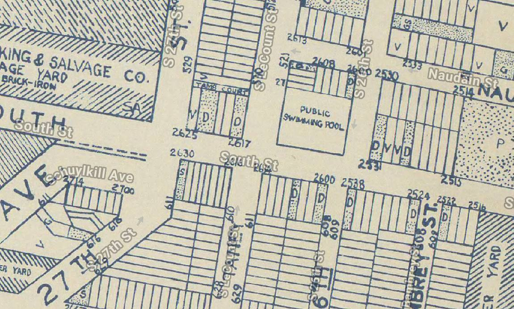
Philadelphia Land Use Map, 1942. The yard is hatched and lettered LUMBER YARD, fifty-four years after Baist drew it as open ground.Works Progress Administration / Bureau of Engineering Surveys, via GeoHistory
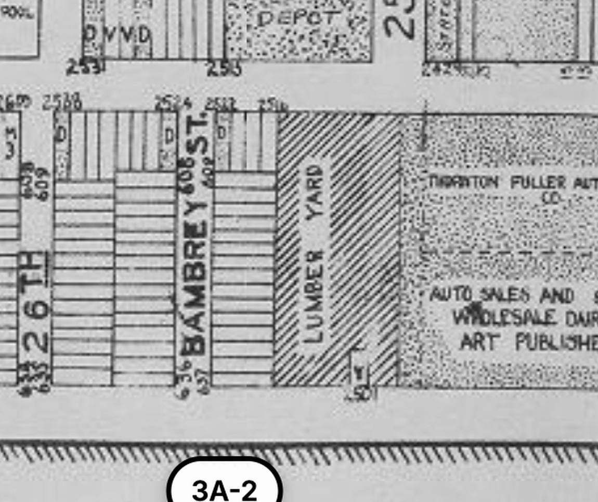
Philadelphia Land Use Map, 1962. Still LUMBER YARD, twelve years after Charles Maule died and a full century after Smedley first drew lumber on this ground. East of Bambrey the four houses resolve individually — 2522 at the corner, running to 2516 against the yard. 2516 is standing in 1962, which closes the near end of the demolition window with evidence rather than inference.Bureau of Engineering Surveys, Department of Public Works, via GeoHistory
The complete table
Every owner of 2518 South Street, with what is proved and what is not
From
Owner
How acquired
Source & confidence
Feb 25, 1888
WILLIAM FORBES, builder, 2031 Reed St
purchase from Fidelity Insurance & Trust Co., $25,000
Builders’ Guide conveyance + registry book certain
1890 (he died Jan–Apr)
ELIZABETH A. FORBESand others
BY WILL
registry book, line 160 certain — but “et al”
is never expanded
Dec 9, 1924
MARY STEVENS
purchase
registry book certain — name and date both clearly written
soon after
MARY STEVENS and SARA DONAHUE, joint tenants
conveyance into joint names with right of survivorship
registry book certain — the date of this step is faint
on Mary Stevens’s death (date unknown)
SARA DONAHUE, widow
BY SURVIVORSHIP — April 27, 1949 — no deed, no price
registry book: “by surv.”certain. Dating it
means finding Mary Stevens’s death, 1924–49
Nov 5, 1949
AGNES M. HUFF
purchase — almost certainly completing an articles of agreement begun in the
1930s
Deed C.J.P. 2479 p. 221, recited in the 1987 deed certain
Jan 13, 1984
Her estate — Mary A. Barrett, executrix
on Agnes Huff’s death; Will No. 971 of 1984
1987 deed certain
Mar 26, 1987
FRANK O. GOULD and DOUGLAS FRENKEL, tenants in
common
purchase, $72,000
doc 43068178certain
May 12, 1999
LYNNE LYON
purchase
Deed Book JTD 1048 p. 10, recited in the 2000 deed certain
Jul 14, 2000
PAUL A. EDELBLUT
purchase, $189,000
doc 50125135certain
Mar 1, 2016
KAREN McGRANE
purchase, $470,000
doc 53031008certain
Registry unit book, block 5 S 10, line 160; deeds 43068178, 50125135, 53031008; Deed Books
C.J.P. 2479 p. 221 and JTD 1048 p. 10 as recited. September 1, 2026.
1890 – 1984
Ninety-four years in which this house belonged to women
Set the owners out in order and something appears that no single document states.
From the death of the builder in 1890 to the death of Agnes Huff in 1984 — ninety-four
years, most of the life of the building — 2518 South Street was owned by women,
continuously, without a break.
Owner
Years
Held
How it came to them
William Forbes
1888–1890
2
Built it
Elizabeth A. Forbes and others
1890–1924
34
By will, on the builder’s death
Mary Stevens
1924–1949
25
Bought it, December 9, 1924 — alone
— with Sara Donahue, then Sara Donahue alone
to 1949
Joint tenants; then by survivorship, April 27, 1949
Agnes M. Huff — Mary Stevens’s daughter
1949–1984
35
Bought it, November 5, 1949
Her estate — executrix Mary A. Barrett, her daughter
1984–1987
3
Under a will that named the house
Frank O. Gould and Douglas Frenkel
1987–1999
12
Bought
Lynne Lyon
1999–2000
1
Bought
Paul A. Edelblut
2000–2016
16
Bought
Karen McGrane
2016–
10
Bought
Women: about 108 years. Men: about 30. The three longest holdings in
the building’s history — thirty-four years, thirty-five, twenty-five — are all
women’s.
And in the middle of it, the house went from a mother to her daughter by way of a third
woman. Mary Stevens died in the front of this house on April 27, 1949. Her co-owner
Sara Donahue took the whole of it that morning by survivorship — no deed, no signature,
nothing recorded — and six months later conveyed it to Agnes Huff, Mary’s own
daughter, who had first come into the house as a lodger nineteen years earlier.
Agnes then held it for thirty-five years, longer than anyone before or since.
Two of these women did not inherit. They bought. Mary Stevens bought 2518 outright in
December 1924, and she bought it alone, on a registry page where every neighboring lot
that season went to a married couple. Agnes Huff bought it in November 1949 after living in it
for nineteen years — and the 1940 census calls the Huffs owners nine years before the
deed, which is what an installment purchase looks like from the outside. She then wrote the
house into her will by name in 1964 and gave her children the right to buy one another
out of it. Whatever else was true of her, she treated the house as an asset she controlled.
The census called Mary Stevens a tenant in her own house.
In April 1930 she is head of this household — six years after buying it — and the
enumerator wrote rented, $60.00 a month. Ten years later she is in the same house,
recorded as her son-in-law’s mother-in-law, and the column says owned,
because by then it was Alexander Huff answering the door.
She owned it the whole time. A census taker asks whoever opens the door about the
household; he does not ask to see the deed. So a widow who had bought a house outright and was
letting rooms in it to her own daughter’s family goes into the federal record as somebody
paying sixty dollars a month to a landlord who did not exist.
It is worth knowing about her, because it is the shape of her whole life here. She kept
a lodging house, she is listed by three different spellings of her own surname across three
censuses, and the one document that names her plainly and correctly — Mary Stevens,
widow of James, daughter of Michael Maloney, of 2518 South Street — is her death
certificate.
What kind of household this was.
For most of its middle life this was a small house on a working street, let by the room and
run by women. Bridget Nolan is in the 1892 directory keeping a boarding house here.
Mary Stevens heads the household in 1930 with the entire Huff family — eight of them
— lodging under her roof. Agnes Huff, one of those lodgers, bought the place and kept it
for thirty-five years. Three successive women running the same fifteen and a half feet of
frontage as a business.
Two qualifications, because the difference matters.“Elizabeth A. Forbes and others.” The registry names her and only her as owner
from 1890; the “and others” are unidentified and may well have included the
builder’s sons. William Forbes’s will would say. So those thirty-four years are
hers by name and may have been shared.
The year counts are approximate — taken to the nearest year from deed dates, with
the 1984–87 estate period counted as the executrix’s, since the executrix was
Agnes’s own daughter.
Ownership computed from the registry unit book, block 5 S 10, line 160, and the recorded deeds;
the 1949 transfer dated from Pennsylvania death certificate file no. 37810. Pennsylvania
allowed married women to hold property in their own right from 1848, so this house has never
existed in a legal world where a woman could not own it — that is general history, not a
finding from this research.
Everyone we can name inside the house
Every person recorded at 2518 South Street in a document we have actually read, with what
that document says about them. Rows marked with a left rule are the head of household. Blank
cells mean the column exists but was left empty by the enumerator; a dash means the column does
not exist on that year’s form.
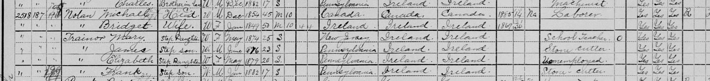
June 2, 1900 · ED 769, sheet 10A.2518 at the head of the run: Nolan, Michael — Head, a laborer, with Bridget his wife and the four Trainor stepchildren, two of them stone cutters. U.S. Census, NARA microfilm via FamilySearch
Name
In household
Age
Born
Birthplace
Parents born
Occupation
Notes
July 1890 — Philadelphia Inquirer, July 21, 1890, p8 · the earliest named resident
John Liveny
Resident
28
c. 1862
—
—
Conductor, Lombard & South Sts Passenger Railway
Ankle crushed jumping from his car at 40th & Girard on Sunday, July 20; taken to Presbyterian Hospital. The item gives his address as 2518 South street
1891–1918 — Philadelphia city directories, via HeritageQuest · the lodging years
Bridget Nolan
Householder
—
1892
Ireland
—
Boarding — she kept the house
An occupation the 1900 census left blank
Michael Nolan
Householder
—
1891, 1892, 1895
Canada
—
Laborer
1891 and 1895 confirmed
Thomas Mornn
Lodger
—
1895
—
—
Laborer
Confirmed
John McCullough
Lodger
—
1893
—
—
Driver
Confirmed. A horsecar driver — the other half of Liveny’s trade
William McMenamin
Lodger
—
1893
—
—
Driver
Confirmed. A second driver, same year, same house
George Patton
Lodger
—
1892
—
—
Driver
Confirmed. The third driver, and the earliest
Robert Shields
Lodger
—
1893
—
—
Laborer
Confirmed
Daniel McKay
Lodger
—
1895
—
—
Laborer
Confirmed. All four 1895 names now opened
William Hack
Lodger
—
1910
—
—
Laborer
Confirmed
Bernard Dever
Lodger
—
1895
—
—
Laborer
Confirmed. Three of the four 1895 names now opened
Michael Gardner
Lodger
41 (1910)
1908, 1911
Pennsylvania
—
Laborer
Confirmed for 1908. Also the boarder named in the 1910 census — directory and census agree
Louis Kerns
Lodger
—
1910
—
—
Laborer
Confirmed. Absent from the April 1910 census — likely gone by spring
Thomas Neville
Lodger
—
1918
—
—
Laborer
Confirmed. Fills the gap between the Robinsons and the Hollywoods
William McMeumiu
Lodger
—
1892
—
—
Driver
Confirmed. Almost certainly McMenamin, the 1893 driver
X. Jan Michael
Lodger
—
1896
—
—
Laborer
Confirmed. Name as printed; likely garbled
All twenty page-one results opened. Nineteen are 2518 South Street. One is not: W. A. Gallagher, 1918, proved to be 2518 Southfield Avenue — the keyword matched it as a prefix. The list is a pointer; only opened records count.
June 1900 — ED 769, sheet 19, lines 5–10 · the house is rented
Michael Nolan
Head
45
Dec 1854
Canada
Canada / Canada
Laborer
Arrived US 1885; naturalized; married 10 years
Bridget Nolan
Wife
51
Jan 1849
Ireland
Ireland / Ireland
—
Arrived 1869; mother of four; widowed before this marriage
Mary Trainor
Step-daughter
26
May 1874
New Jersey
Ireland / Ireland
School teacher
0 months unemployed
James Trainor
Step-son
24
Jun 1876
Pennsylvania
Ireland / Ireland
Stone cutter
Elizabeth Trainor
Step-daughter
21
May 1879
Pennsylvania
Ireland / Ireland
Unemployed
Frank Trainor
Step-son
18
Jan 1882
Pennsylvania
Ireland / Ireland
Stone cutter
October 8, 1906 — Pennsylvania death certificate no. 93428 · a resident of the house who never appears in a census
Elizabeth “Bessie” Robinson
Daughter
3
c. Apr 1903
Philadelphia
Phila. / Phila.
—
Run down by a South Street trolley outside this house, Oct 8, 1906, crossing to buy sweets with a penny her mother gave her. Buried from this house 11 Oct; Mount Moriah. Father Thomas Robinson, mother Jennie H. Johnston. Undertaker Wm. H. Logue, 2410 Lombard St
April 1910 — ED 712, sheet 22, lines 95–100 · the house is rented
Thomas Robinson
Head
36
c. 1874
Pennsylvania
Pennsylvania / Pennsylvania
Printer — wall paper
Married once, 8 years
Jennie H. Robinson
Wife
26
c. 1884
Pennsylvania
Ireland / Ireland
None
Four children born, two living
Jennie P. Robinson
Daughter
5
c. 1905
Pennsylvania
—
None
Kelso Alexander Johnston Robinson
Son
1
Jun 5, 1908
Pennsylvania
—
None
Michael Gardner
Boarder
41
c. 1869
Pennsylvania
—
Laborer
Single
William Mack
Boarder
37
c. 1873
Pennsylvania
—
Laborer
Single
January 1920 — ED 1001, sheet 15, lines 44–49 · the house is rented
George Hollywood
Head
40
c. 1880
Pennsylvania
—
Millwright, railroad
A George Hollywood appears at 2516 in 1900 — the ages fit the same man
Catherine Hollywood
Wife
40
c. 1880
Pennsylvania
—
None
Helen Hollywood
Daughter
6
c. 1914
Pennsylvania
—
None
Agnes
Niece
19
c. 1901
Pennsylvania
—
Typist, express company
Surname not transcribed
Paul Hackett
Boarder
30
c. 1890
Pennsylvania
—
Stockman, dental supply
Single
Michael Dorney
Boarder
65
c. 1855
Pennsylvania
—
—
Widowed
April 1930 — ED 51-100, sheet 10A, lines 8–16 · rented, $60 a month
Mary Stevenson
Head
56
c. 1874
Irish Free State
Irish Free State / Irish Free State
—
Widowed. Mother tongue English. Rented, $60.00 a month; radio set in the house. The Huffs lodge with her
Alexander Huff
Lodger
38
c. 1892
Pennsylvania
Pennsylvania / Pennsylvania
Clerk, grocery store
Married at 23
Agnes Huff
Lodger
35
c. 1895
Pennsylvania
Irish Free State / Irish Free State
Dressmaker, at home
Married at 20. Both parents Irish-born — the same country as the head of the household, who is twenty-one years older
Mary Huff
Lodger
13
c. 1917
Pennsylvania
—
None
John Huff
Lodger
10
c. 1920
Pennsylvania
—
None
Agnes Huff
Lodger
8
c. 1922
Pennsylvania
—
None
James Huff
Lodger
6
c. 1924
Pennsylvania
—
None
Alexander Huff Jr.
Lodger
5
c. 1925
Pennsylvania
—
None
Joseph Huff
Lodger
2
c. 1928
Pennsylvania
—
None
Added Sept 1, 2026 — omitted from this table until the page was read at full resolution. The son who is still here with his mother in 1950
1930 – 1984 — the Huff half-century · census, draft card, marriage license, death notice, will
Alexander John Huff
Lodger 1930, owner by 1940
76 at death
May 18, 1896
Philadelphia
John Huff / Mary
Meat cutter
Draft registration from this address Apr 27, 1942. Died Dec 27, 1972, cert. 124465, cause not determined; buried Holy Cross, Yeadon. By then living at 304 S. 10th St.
James P. Huff
Son
5 in 1930
c. 1925
Pennsylvania
—
—
In the 1930 and 1940 schedules and named in Agnes’s 1964 will. Informant on his father’s death certificate, 1972
Agnes M. Huff, née Stevens
Wife; owner
—
—
—
—
—
Took the deed from Sara Donahue, Nov 5, 1949. Died Jan 13, 1984, Will No. 971 of 1984. CONFIRMED her daughter — the 1920 census, ED 169 sheet 4B, records
Mary Stephens as Alexander Huff’s mother-in-law in his household
Mary A. Huff
Daughter
26
c. 1917
—
—
—
Marriage license Feb 2, 1944 — married Francis M. Barrett, 29, of 2628 South Street. Named as Mary Barrett in the 1973 death notice
April 2, 1940 — ED 51-934, sheet 1A, lines 15–22 · owned, valued $4,000 · everyone in the same house in 1935
Alexander Huff
Head
42
c. 1898
—
—
Watchman, public school
Same house in 1935
Agnes Huff
Wife
39
c. 1901
—
—
—
Same house in 1935
Mary Stevens
Mother-in-law
69
c. 1871
N. Ireland
—
—
Widowed, naturalized. The owner of this house, living in it. Missed in this table until the page was read at full resolution, Sept 1, 2026
Named from the 1930 schedule; all five are also named in Agnes’s 1964 will.
Resolved, Sept 1, 2026:Joseph is on line 21, aged 12, in grade four —
he had simply been missed here. The one now unaccounted for is Alexander Jr., aged 5
in 1930, absent from this page at what should be fifteen, and not named in his
mother’s 1984 death notice.
April 1950 — ED 51-1314 · the household is down to two
Agnes Huff
Head
49
c. 1901
—
—
Cheese packer, milk company
Marked separated. Took the deed Nov 5, 1949
Joseph Huff
Son
21
c. 1929
—
—
Carton packer, paper company
Alexander J. Huff
Not in the house
54
c. 1896
—
—
—
Lodging at 2620 South St, also marked separated — one block west
What the roll shows. Not a series of families, but a business. From within
a year or two of being built, 2518 was lodgings for working men — Bridget Nolan is
listed in the 1892 directory at this address as keeping a boarding house, with laborers
under her roof. That is why every census finds too many people in fifteen and a half feet.
In 1900 the head is Canadian-born with an Irish wife and four
Irish-American stepchildren, two of them stone cutters and one a school teacher. By 1910
every person in the house is Pennsylvania-born, one wallpaper printer supports six people, and
two laboring lodgers help with the rent. By 1920 it is a railway millwright, his wife, a
six-year-old, a niece who types for an express company, and two more boarders.
By 1930 the tenant is a widow from Ireland, Mary Stevenson, and the Huffs are her
lodgers — two parents and five children in someone else’s rented house. Ten years
later the Huffs own it outright and there are seven of them. By 1950 there are two.
Forty years of tenants, then fifty years of one family — and the family began as lodgers.
What the roll does not show. The five years between 1895 and 1900, and
the years between each census. City directories, which list occupants annually rather than once a
decade, would close nearly all of what remains — and would name the landlord, who is
the one figure absent from every schedule above.
Contact sheet
Every photograph found so far, in one place. Scroll it like a roll of film. Click any caption for
the archive record; right-click any picture to save it. Starred frames are the ones that bear most directly on the
house: the 1963 view from your front step, the 1935 walk, and the two Sanborn details.
South Street, 1963–68 — the Historical Commission survey
Running east to west, 20th Street to 26th. Your house sits between the last four frames.
One thing to know before you look. Every captioned address in this run is an
odd number — 2517, 2521, 2533, 2535, 2621. The Commission photographed the
north side of South Street only. So this survey does not contain a portrait of 2518;
what it contains is the row your front windows face, which is the next best thing, plus the
two streetscape frames (2400 block, facing west and West from 24th) that take in
both sides at once. Those two are where to look for your own façade.
2007–2029 South St1964 · shopfronts and awnings record 82886
The oldest photographs of your street, and they pre-date your house. In 1875 the lot at
2518 was still Maule’s lumber yard — but the South Street Bridge at the river
end was already being photographed by the Bureau of Surveys.
South Street Bridge, looking east1875 · up your street, the year before Hopkins drew the lot as lumber yard
Bridge, looking west1875
Bridge from the river1875
Looking west across the ruins1878 · the bridge came down
Vessels jamming against the bridge1894 · the year before Bromley shows your row complete
The jam, looking north1894
Bridge, old view from the river1875
Jamming against the bridge1894 · a third view of the same jam
1910–1936 — the river end
South Street Bridge1910
South Street, under the bridge1912
South Street Bridge1916
Collapsed bulkhead1929 · north side of South St
West bank, looking south1936
South St at the Schuylkill1912
Schuylkill east bank at South St1921
Bridge, looking north1922 · showing construction progress
1949 — the sewer survey
Before digging a new sewer the city photographed the buildings it might damage.
Contract S.D. 116-Southwest ran through this neighborhood in 1949 — the very
year Agnes Huff took the deed. Seventy-nine frames survive nearby; these are the South Street ones,
all on the 2600 block, one block west of you.
2615–2619 South St1949 · brick, arched window heads, dentilled cornice — your house’s vocabulary
2620–2624 South St1949 · south side, 2600 block
2626 & 2628 South St1949
2621 South St1949 · north side
Rear of 2619 South St1949 · a back elevation — rare, and the alley side your own house shares
610 & 612 S Taney St1949
Naudain & S Taney, SE corner1949
University House1949 · 26th & Lombard — the settlement house on the 1910 atlas
Why these matter. Sewer-contract photographs record rear elevations and party
walls, which street surveys never do. One frame here is the back of 2619 — the
alley side of a house built like yours, in the same decade the Huffs were raising five children
at 2518.
26th Street to the river
Past the bath house the street runs down to Schuylkill Avenue and the water. The 1949 sewer
contract carried on to the riverfront — it was digging the Schuylkill Intercepting
Sewer — and the Bureau of Surveys had photographed the bulkheads decades earlier.
Bainbridge St bulkhead1912 · the river edge
Naval Home bulkhead1912
Warehouse on the Intercepting Sewer1949 · Schuylkill Ave & Bainbridge
John Galbraith Company1949
Looking southwest on Schuylkill Ave1949
West wall of the Naval Home1949 · now Naval Square
Warehouse on Schuylkill Ave1949
Philadelphia Transportation Co.1949 · the trolley company’s heir
Scope note. The Historical Commission run actually reaches all the way east to
the 900 block. This sheet keeps to 20th Street westward — your end of the
street. The wider riverward search returns 1,071 photographs and 50 maps if you want to
go further:
open the riverfront grid →
August 25, 1935 — the complete walk
Six frames, one morning. A city photographer started at 22nd Street and worked west,
shooting from each corner — 22nd, 23rd, 24th, 25th, 26th — then turned round at 27th
and shot back east. Your corridor, end to end, in a single sequence: IDs 198703 through 198713,
stepping by two. Two of them look straight down your block.
0 · at 22nd, looking westJan 25, 1935 · the walk begins
1 · at 23rd, looking westJan 25, 1935
2 · at 24th, looking westJan 25, 1935
3 · at 25th, looking westJan 25, 1935 · your block, on the left — and the MAULE · LUMBER hoarding still running along it
4 · at 26th, looking westJan 25, 1935 · past the yard — brick row, stoops, bracketed cornices
5 · at 27th, looking eastJan 25, 1935 · turning round — back up the street toward your door
Naudain St, 25th to 26th1968 · the back street record 81540
Plat and insurance maps
Property atlases and fire-insurance surveys — the documents that date the house and
describe its fabric.
Hexamer & Locher, Plate 42B1858 · 7th Ward; stops dead at South Street
Sanborn Vol. 6, Sheet 5031918 · 2518 printed on the frontage Library of Congress
Sheet 503 — the whole block1918 · your four houses at the Bambrey end, Maule’s yard filling the rest east to 2500 — the frame that explains the 1935 photograph Library of Congress
The rest are locked in zoom viewers and can’t be pulled as flat images:
Smedley 1862, Hopkins 1876 Vol. 5 Pl. C, Baist 1888 Pl. 9 (the one proving
the lot was still lumber yard), Bromley 1895 and 1910, and Brewer 1934.
Layer them over the address at the
GeoHistory viewer, or screenshot from
the Free Library’s pan-and-zoom.
Census records
Federal population schedules — the documents that name the people. Both public domain.
1940 Census · ED 51-934Apr 2, 1940 · the Huff household, line 15 NARA 137790861
1950 Census · ED 51-1314Apr 1950 · Agnes and Joseph Huff National Archives
1900, 1910 and 1920 — now reproduced above. The three sheets were downloaded from FamilySearch on September 5, 2026 and are held in full: ED 769, sheet 10A (T623 roll 1472), ED 712, sheet 11B (T624 roll 1400) and ED 1001, sheet 5A (T625 roll 1635). Reading the 1920 sheet at full size moved the household down one line: 2518 begins at line 44, not 43, and line 43 belongs to 2520. The links still need a free FamilySearch account.
All five censuses have now been read — 1900, 1910, 1920, 1930, 1940 and
1950. The occupants table above carries every name. All of them need a free FamilySearch account rather than the open
NARA site, which is why 1940 and 1950 were the easy ones. A Donahue at 2518 in 1930 would
settle the installment-sale question.
The census districts, worked out. Finding the right enumeration district is the
hard part of a census lookup, and it is now done for every year. For 1900 it is a single
district, Philadelphia–769, on NARA roll T623_1472. For 1910, also a
single district, Philadelphia–712, roll T624_1400. For 1920 the block
falls in one of five — 987, 998, 999, 1001, 1002 — with 987 on roll
T625_1634. For 1930, 51-96 or 51-100.
Narrowed by naming South Street and Bambrey as the back street of the same city block,
using the Morse & Weintraub ED Finder.
The images themselves sit behind a free FamilySearch account; the 1940 and 1950 schedules
reproduced above are open because the National Archives hosts those two years itself.
To see even more. The full archive holds 1,910 photographs around your
block. The quickest way to browse is the thumbnail grid, sorted nearest-first —
open the grid →
Set it to 24 per page and click any thumbnail for the full record.
Working notes
The chain is solid from 1949 to today and the physical history is solid from
1862. What’s missing sits in two bands: the ground before 1876, and the people
between 1895 and 1935 — and that second band is now nearly full: Nolans 1900,
Robinsons 1910, Hollywoods 1920, Stevenson and the Huffs 1930. What is left
is the ground before 1876, the builder, and the name of the landlord who owned it all that
time.
One visit, three answers
Free in personPhiladelphia City Archives, 548 Spring Garden St · Mon–Fri 8:30–4 ·
(215) 685-9401. Holds building permits 1889–1986, deeds 1683–1955,
and city directories 1785–1936 — the builder, the pre-1949 owners, and the
first occupants, all under one roof. Ask for the registry unit book for block 005S10,
the permits for the 2500 block, and Deed Book CJP 2479 p. 221.
Free with accountNothing further needed here — every census from 1900 to 1950 has been read.
Paywalledphila-records.com historical search — deed images 1683–1973, subscription only.
The same books are free on paper at the Archives.
Contact sheet — the whole South Street survey
Every frame the Historical Commission shot along South Street, in order, west to east. Click any
picture for its catalog record. Right-click to save.
2623–2615 · 1964 Callahan’s26th & South · 1968 The Bath House2533 · 1963 Sterling Builders sign2535 · 1963 Tony’s Barber Shop2535 · 1968 Tony’s, five years on2521–2517 · 1963 Across from your doorWest from 24th · 19682400 block · 1968 Facing west2401 · 1964 Jack’s Place2427–2415 · 1964 Loft & water tower2409–2405 · 19642313–2305 · 1964 Ozzie’s Food Market2311–2319 · 1964 Paul’sasset 82893 not yet identified2205–2213 · 1964 Food Fair, dry cleanersasset 82891 not yet identified2145 · 1964 Corner & traffic signalasset 82889 not yet identifiedasset 82888 not yet identifiedasset 82887 not yet identified2007–2029 · 1964
A caveat on the unlabeled ones. I read the catalog record for most of these
frames directly. The five marked not yet identified, and the picture IDs generally, come
from the arithmetic rule above rather than from checking each one. If a picture doesn’t
match its caption, the linked catalog record is the authority — click through.
Image record
Nothing here is stored locally. Every picture loads live from the archive that
holds it. National Archives and Library of Congress links are permanent and public domain;
PhillyHistory uses internal database IDs and is the fragile one. Save those two 1935
photographs first.
Baist 1888, Plate 9 — GeoHistory. The plate that proves the lot was still lumber yard.
What is searchable online, and what is not
Tested August 2026, so that none of this has to be re-derived.
Census, 1900–1950 — all six read. FamilySearch for 1900–1930 (free
account); National Archives hosts 1940 and 1950 openly.
Draft registration cards — productive. Alexander Huff’s 1942 card
gives the address, the absence of a telephone, and his employer. WWI cards for Thomas Robinson
and George Hollywood are the obvious next pull.
Chronicling America — holds the Evening Public Ledger, Philadelphia,
1914–1942. Note two things: quoted phrases return nothing, so search
unquoted terms; and the run begins in 1914, which is twenty years after your house was
built. It cannot name the builder. It can catch the bath house, Maule’s yard
(two hits, 1920 and 1921) and any 1914–42 property transfer.
City directories — thinner online than hoped. Internet Archive holds McElroy’s
only to 1866 and one Gopsill’s for 1871; nothing in the 1890–1936 window.
PhilaGeoHistory lists a directories collection but its address search would not run.
Assume this is a City Archives errand.
Athenaeum’s Philadelphia Architects and Buildings — retried and
worked (browse as a guest, no account needed; the Locations tab, then Browse by Street,
then choose a block). Result: nothing for your side. The 2500 block of South Street
holds exactly three records — 2517–2521, 2523 and 2525, all
odd, all north side, all “untitled”. Opening 2517–2521 gives a location and a
link out, no architect, no builder, no date; its only reference is a stub in the
PHMC Cultural Resources Database. There is no entry for any even number on the
block, so nothing for 2516–2522. This route is closed.
Deed images — phila-records.com, subscription only. Free on paper at the
Archives.

![Dallin Aerial Survey, about 1930. The tree-lined street across the lower third is Bainbridge, with the Naval Home’s lawns below it. North of Bainbridge, at the east end of the run of rowhouse blocks: a pale open lot with dark bars across it and small piles at its southern end — open ground, a long shed, and stacked timber throwing shadows. The four houses are the dark band immediately west of it, and at this resolution they will not separate. Dallin Aerial Survey Co., Map Collection, Free Library of Philadelphia](img/timeline-30.jpg)


{kind=link}
{kind=link}
{kind=link}
{kind=link}
{kind=link}